Annual Report of the Mysore Archaeological Department for the year 1940
Reading this page
p. 23 is the page number printed in the volume; PDF 391 is that page's place in the scanned PDF, the page to open in the source scan. The badge at the bottom right shows the page you are reading as you scroll: click it to show printed or PDF numbers, or both, and to jump to a page. ↑ Top takes you back to the start.
Footnotes are gathered at the end of the report, each with its printed page and number. Plates stand where the report binds them, at the end of the paragraph they interrupt; All plates, at the foot of the contents, shows them together.
Part I: Administrative
Staff; Tours; Excavation; Exploration; Conservation; Epigraphy; Numismatics; Manuscripts; Museum; Library; Exhibition; Publications; Finances
Dr. M. H. Krishna continued to be the Director of Archaeology in addition to his full-time professorial duties at the University. The scales of pay of several officials were revised with effect from 1st July 1939. The post of copyist was abolished and that of Junior Technical Assistant newly sanctioned. Mr. B. Venkoba Rao, B.A., Architectural Assistant, went on combined leave preparatory to retirement from the 1st July 1939 and retired from service with effect from 19th October 1939. The post of the Architectural Assistant has remained vacant since then. Proposals to fill up the post are now with Government. Mr. R. Rama Rao, B.A., Assistant to the Director, went on a month's privilege leave from 19th April 1940. Mr. L. Narasimhachar, M.A., Junior Technical Assistant, was placed in charge of the duties of the Assistant to the Director in addition to his own duties during this period.
During the early part of July, the Director-General of Archaeology in India paid a visit to the State, inspected several monuments and ancient sites and made several proposals for improving the department. These are with Government and certain items of work have already been taken on hand. The ancient sites of Chandravalih and Brahmagiri were surveyed jointly by the Director-General and the Director of Archaeological Researches and in accordance with the suggestions of the Director-General, some of the prospective spots were marked for trial excavations. The results of digging have been beyond expectations and it is now hoped that further excavations in the selected areas on scientific lines would be most fruitful so far as the early history of Mysore is concerned. A brief report on the Excavation work done during the year is included in Part IV of the Report.
For the purpose of collecting inscriptions and information about architecture and also for inspecting the ancient monuments for conservation purposes, the Director toured in parts of Mysore, Hassan, Cintaldrug and Shimoga Districts. The Assistant to the Director toured in parts of Mysore, Hassan, Kadur and Tumkur Districts for collecting and copying inscriptions.
Among the ancient sites and monuments studied during the year were those at Varuna, Bangalore, Gaṅgavāđi, Māchalaghatta, Bēchirāk Hosūr, Śrīrāmanhaļi. Bōgāvi, Nāgamaṅgala, Dodjetka, Mudigere, Āraṇi, Belļūr. Dađaga, Keļagere, Grāma, Hōdigere and Nañjangūđ. Varuna appears to have been an important Jaina settlement of the Gaṅga period. The Jain images discovered on and in the immediate vicinity of the site of the ruined basti are good works of art, though it is possible that they may belong to a period much later than Śrīpurusha Gaṅga whose inscriptions have been discovered in the village. But perhaps a very interesting structure at the place is the Mahaliṅgēsvara temple which belongs to about the 10th century A. D. It has some good carving work, though built of granite. Most of the monuments inspected in the Nāgamaṅgala Taluk belong to the Hoysaļa and later periods. The Mallēsvara temple at Māchalaghatta has some good ceiling work. Bōgāvi appears to have been an important Jaina agrahāra town during the twelfth century A. D. Dađaga too seems to be a place of considerable antiquity. The Yōgā-Narasimha temple in the place contains pillars resembling those at the Noṇabēsvara temple at Noṇvinakere. At Keļagere was discovered a pillar similar to the 'Gāruđa pillar' at Agrahāra Bāchaļļi with three faces of its base covered with inscriptions. This place also seems to have been an important Jaina settlement during the twelfth century. The tomb of Shāji, father of the tamous Śivaji, at Hōdigere, is another important discovery during the year. Measures are being taken to conserve the monument.
With the co-operation of the Department of Public Works and the Bēlūr and Haļebīd Temples' Renovation Committee, the renovation work at Bēlūr and Haļebīd was continued during the year. Conservation. Proposals for further work at Bēlūr are now being worked out and are in the course of submission to Government. A committee has also been proposed to study the present state of the Gōmatēsvara colossus at Śravaṇa-beļgoļa with a view to counteract the disintegration of the monument. Opinions from experts have been called for and the Archaeological Chemist with the Government of India has kindly sent in his analysis of the stone out of which the image is carved. It is hoped that some preliminary remedial measures would be taken at present in the matter of conserving the statue. As usual, several estimates were received for repairs to the ancient monuments in the State and were countersigned after scrutiny. Periodical reports in connection with the tour notes of the Dewan were submitted. Among the estimates scrutinised and countersigned, those pertaining to the following monuments may be mentioned:—
1. Lakstumī-Narasimma Temple, Bhadrāvati.
2. Trikātēsvara Temple, Gorūr.
3. Śrīkanthēsvara Temple, Nañjangūđ.
4. Siddhēsvara Temple, Maļali.
5. Kōlāramma Temple, Kōlār.
6. Sōmēsvara Temple, Kōlār.
7. Mokbara, Kōlār.
8. Gaṇdabhēruṇḍa Pillar at Belgāvi.
9. Raṅganātha Temple at Raṅgasthaļa.
Proposals regarding the reclassification of the ancient monuments in the State are now before Government.
About fifty inscriptions were collected during the year. The majority of them have been edited in Part VII of the Report under the Director's guidance by Mr. R. Rama Rao assisted by the Pandits. Of these, a record on the pedestal of a stone image of Chauḍēsvari in a ruined temple at Lakkunda, Bēlūr Taluk, belongs to the eighth century and states that the image is of Vāsantikādēvī and was consecrated by one Mallidēva of Nakkunda. The image has four hands, holding sword, bowl, trident and drum, which are the attributes of a Śaiva goddess. The tradition, however, regarding the Hoysaļas would make Vāsantikā a Jain goddess. The central figure in the Vāsantikā temple at Angaḍi is that of Vaishṇavī (M.A.R., 1936, p. 17). A bronze tripod was found in the Kēšava temple at Bēlūr and belongs to the Hoysaļa times as testified to by an inscription in Kannaḍa characters of the 13th century which states that Kumāra Lakshmīdhara got this made for the God Vijaya-Nārāyaṇa at Beļuhūr. This Kumāra Lakshmīdhara was a general under the Hoysaļa king Ballāļa II (1173-1220), and he immolated himself at the death of his master.
A stone inscription at Hora Maraḥi in the Mysore Taluk refers to the grant of a village to a Brahmin named Nañjaṇna Vāranāsi by Prince Kaṇthīrava Mahīpāla during the reign of his father Dēvarāja Ođeyar, King of Mysore. Dēvarāja Ođeyar ruled from 1659 to 1672 and had two sons, the elder being the famous Chikka Dēvarāja Ođeyar who succeeded him and the younger being Kaṇthīrava Ođeyar of the present grant. Tradition says that Chikka Dēvarāja Ođeyar was for some time in exile at Hangļa. There are a few grants made by the younger brother Kaṇthīrava.
Two inscriptions on the mulīs or jewelled crowns of Mēlukote Chollapāļesvāmi and Nañjanguđ Šrīkaṇthēšvarasvāmi and one on the golden belt of the former preserved in the Palace, were deciphered and are published in the Report with the kind permission of the Palace authorities.
More than two hundred coins of the Śātīvāhana period collected at the Chandravaļļi excavations are being studied in detail at the office for publication in a subsequent report. A note prepared on the Pallava, Chera and Kadamba coins in the possession of the department is published in Part V of the Report for the year.
About thirty-two palm-leaf manuscripts were received from a private gentleman of Kōlār. These are now being examined at the office.
Manuscripts.
They are of varied interest and deal with architecture, sculpture, dancing and the like. But they are mostly incomplete and cannot be reviewed without the help of other copies.
More than two hundred antiquities from Mohenjodaro were acquired for the Office Museum and twenty plaster of Paris casts of Mohenjodaro seals were also got prepared through the generosity of the Director-General Museum and library. of Archæology in India. Over eighty new books have been added to the Office Library.
In connection with the Tenth Session of the All-India Oriental Conference held at Tirupati during the Easter Holidays, the department Exhibition. sent a representative collection of photographs, etc., to illustrate the history of art and architecture in Mysore and participated in the Conference Exhibition. The exhibition was well attended and the exhibits from Mysore were much appreciated by the members and delegates. A certificate of honour was granted by the Conference authorities.
The Annual Report of the Department for 1938 was submitted to Government. That for 1939 was printed at the Government Branch Publications. Press, Mysore. The English, Kannada and Hindi versions of the Guide to Şravaṇabelgola were published. The second edition of the Guide to Bēlūr was prepared and sent to the press. A guide to Nandi was also prepared and sent to the press.
Owing to the retirement of Rao Bahadur M. Shama Rao and Mr. D. V. Gundappa from the Committee for the Presentation of Archæological Publications, the latter was reconstituted as follows :—
1. The Vice-Chancellor ( Chairman ).
2. Mr. V. I. D'Souza, B.A., B.COM. (London).
3. Mr. N. Balakrishnayya B.A., B.L.
4. The Director of Archæological Researches.
The receipts and expenditure of the department under budget heads amounted to Rs. 14,177-12-6 and Rs. 14,177-12-6 respectively. A Finances. sum of Rs. 218-2-0 was realised by the sale of the departmental publications and photographs during the year.
The success of the work of the department was rendered possible by the sincere co-operation of the Office staff.
Part II: Conservation
Conservation Notes of the Director of Archæological Researches in Mysore, Mysore, for the year 1939-40.
Mysore District
MYSORE TALUK
Varuṇa
The Jain images lying about uncared for among the hedges in the vicinity of the basti site deserve to be preserved in a museum.
Basti site. Similarly a Jaina epitaph lying in a field to the west of the site and a Ganga inscription at the entrance to the village may be removed to a museum or preserved in one of the temples at the place.
The Mahalingēsvara temple which is a genuine structure of the tenth century A. D. has some good carving work. The interior of the temple, particularly, requires to be looked after better. The roof is leaky and requires immediate attention. The outer walls need cement-pointing in several places. The ground around the temple may be levelled up and cleared of vegetation.
Part II: ConservationBangalore District
Fort; Bangalore City
Fort, Bangalore City.
The guard rooms in the quadrangle of the fort are very dilapidated and look ugly. They may be removed and the place tidied up.
Guard rooms.
The trees and plants that are growing up on the west cross wall of the outworks may be cut down. Their roots may dislodge the wall.
Fort walls.
Mandya District
NAGAMANGALA TALUK
Māchalaghaṭta; Bōgāvi; Dēvalāpura; Chōlasandra; Dođjeṭka; Mudigere; Āraṇi; Dađaga
Machalaghatta.
The Mallēsvara temple is in a very dilapidated condition. The outer walls of the navaranga have in many places collapsed and in Mallesvara Temple. others quite out of plumb. Since, however, the navaranga ceilings are good pieces of art, some sort of restoration of the temple seems desirable. Further decay at least may be prevented by effecting repairs wherever possible.
Bogavi.
The basti is almost completely ruined. Many of the walls have fallen down and the stones have been removed. Further removal of the Basti. stones should be prevented since the cornice stones all round the temple contain inscriptions. The large inscription slab lying in a hedge to the east of the temple may be preserved within the temple and the local authorities instructed to take care of it.
Devalapura.
The Lakshmī-Nārāyanasvāmi temple at the place is a Muzrai institution with about Rs. 4.000 at its credit. Though it is generally intact, the roof is leaky and the unplastered brick structure above requires immediate attention. Rain water pours through the crevices in some portions of the garbhagriha, vestibule and navaranga. The southern outer wall of the navaranga has sunk in the middle, breaking under its weight one of the cormces. This may be looked into early. The compound wall requires to be completely rebuilt.
Cholasandra.
The solitary basti standing outside the village and at a little distance from the road does not require conservation, since there are no Basti. images or much ornamental work in it. The only thing worth preserving is the beautiful stone inscription lying in front of the basti. It may be set up in upright position on its own pedestal which is lying close by.
Dodjetka.
The Kēsava temple standing in the centre of the village is not important from the archæological point of view. But the villagers have walled up the navaranga with rubble and mud walls and Kesava temple. are keen on getting the temple repaired. The stone structure is all intact. With the concrete on the roof repaired, the temple would serve a useful purpose for the villagers.
Mudigere.
The Kallēsvara temple to the south-east of the village is completely ruined. Inside its navaranga, there are some beautiful sculptures of the Hoysaļa period. These may be removed to the village and preserved.
A large viragal of the Ganga times is lying to the south of the village. It may be placed in upright position. A fragmentary Ganga inscription lying at the entrance to the village may also be removed and preserved along with the images.
Arani.
The ruined temple of Vīrabhadra which stands amidst the rice fields to the south of the ancient tank bund enshrines some good images which are definitely of the Hoysaļa period. An image of Mahishāsuramardinī having an inscription on its pedestal is lying uncared for by the side of the tank bund. These images deserve preservation in a better place, preferably in a museum.
The Gōpālakrishna temple standing in the village is not a Muzrai institution. It enjoys a grant of five acres of land. Though it is generally intact, its roof is leaky in many places. Some minor repairs like cement-pointing, etc., may be effected and the ugly mud walls in the porch removed. The approach to the temple may also be improved and the surroundings cleaned.
Dadaga.
The Chennakēšava temple at the place is in a woefully ruined condition and more neglected than ruined. The pātāļānkaņa is used as a public cow-shed and the compound including part of the navaranga as a latrine, while around the temple thorny plants abound. A few of the ceiling stones of the navaranga have fallen down and many have cracked. It looks safer to open out the north and south ankaņas completely, retaining the central ankaņa. The main temple also is much injured. It could be saved perhaps if the tower is removed. The eastern part of the temple including the pātāļānkaņa is more injured and could be easily saved for public use as a meeting place, etc., if the roof is made watertight and the floor levelled and the place kept clean. If worship is revived in the temple, it would perhaps be put to better form.
Keļagere
The tall pillar standing in the village is an important monument of the Hoysala period. Its capital has been brought down and is lying near the pillar. It may be preserved in a safe place.
The Mallikārjuna temple standing on the other side of the tank is much dilapidated. The villagers may be encouraged to renovate it.
Mallikarjuna temple. The inscription stones in the navaranga and on the lintel of the navaranga doorway declare the monument to be of the time of the Vijayanagar king Harihara I.
Part II: ConservationShimoga District
CHENNAGIRI TALUK
Hōdigere
The tomb of Shāji, father of the great Sivaji, lies to the north-west of the village. It was in a neglected condition until February 1940, when some Maratha gentlemen of Chennagiri and Shimoga got the platform covered over with plaster and cement, raising a small pyramid, about 3 feet high, in the centre. A small mandavare tree has grown to the west of the platform and threatens to damage it, though at the same time it is giving the tomb some shade in the afternoons. The old structure is of no architectural merit; but it would be becoming the memory of the great Shaji if the compound of the Lāyada-hola is acquired, levelled and walled off and a suitable pavilion is once again erected on the spot.
Part II: ConservationKadur District
MUDIGERE TALUK
Durgadahalli
No heading in the body: this section starts at its printed page (8).
Duggasandra.
The temple of Kāla-Bhairava has neither architectural beauty nor historical importance to justify its inclusion in the list of Ancient Kala-Bhairava temple. Monuments. It is said to be the only stone temple in the neighbourhood. Its roof is leaky and needs repairs. The temple does not seem to have much funds at its credit. Nor are there many devotees to subscribe for its repairs. It is for the Muzrai Department to consider the question of its repairs.
Part II: Conservation › Kadur DistrictREPAIRS AND MAINTENANCE OF MONUMENTS
(Notes and Extracts from the Inspection Reports of the Revenue Sub-Division Officers).
(Notes and Extracts from the Inspection Reports of the Revenue Sub-Division Officers.)
Part II: ConservationBangalore District
Bangalore Sub-Division
Kempegauda's Watch Towers :—
At Vyālikāval—In good state of preservation.
At Halsur Tank—In good state of preservation. Annual Maintenance charges of Rs. 10 is being spent by the Public Works Department.
At Gavipura— In good state. A sum of Rs. 10 is being spent for petty repairs.
At Lalbagh—II class. In good state. A sum of Rs. 10 is being spent for annual repairs.
Cenotaph—In good state. A sum of Rs. 75 is being spent for whitewashing and other sundry repairs.
Gangādharēsvara Temple, Gavipura—II class. In good state.
Basavēsvara Temple, Basavanagudi—Minor Muzrai institution. An estimate for repairs has been called for from the Executive Engineer.
Mallikārjunasvāmi Temple, Mallēsvaram—Minor Muzrai institution. In good state; but some petty repairs are necessary. An estimate for Rs. 732 has been prepared for putting a canopy over the inscription and another for Rs. 1,350 for enclosing the whole area with uniform wire-fencing. An annual grant of Rs. 100 is recommended to be sanctioned for petty repairs.
Tipu Sultan's Palace, Fort—I class. In good state. A sum of Rs. 282 is provided for annual maintenance and repairs.
Venkaṭaramapasvāmi Temple, Fort—II class. In good state. A sum of Rs. 106 has been sanctioned for whitewashing and other repairs.
Old Dungeon, Fort—II class. In good state. A sum of Rs. 230 is sanctioned for annual maintenance and repairs.
Part II: ConservationKadur District
Chikmagalūr Sub-Division
Yūpastambha, Hiremagalūr—II class. In good condition.
Siddhēsvara Temple, Mirle—II class. In good condition.
Chennakēsava Temple, Mirle—II class. In good condition. An estimate for Rs. 170 has been sanctioned for the repairs of the temple and the work has been entrusted to the Public Works Department.
2
Viranārāyaṇa Temple, Bełavāđi—I class. Requires repairs. The temple is under the management of the Sringeri Jahgir.
Mārkaṇdēśvara Temple, Khāṇdya—III class. The temple is not in good condition. An estimate for Rs. 1,000 was sanctioned during 1938-39 and the work is being executed.
Jain Bastis, Angađi—III class. These are in a state of disrepair. They require urgent repairs.
Kēśava statue in the ruined temple at Angađi—I class. Requires repairs.
Kałasēśvarasvāmi Temple, Kałasa—Major Muzrai institution. This is in a good state of preservation. Annual repairs are being done every year from the temple funds.
Tarikere Sub-Division
The following monuments in the Tarikere Sub-Division are reported to be in good condition :—
Lakshmīkānta Temple at Dēvanūr.
Siva Temple at Hirenallūr.
Amritēśvara Temple at Amritāpura.
Sōmēśvara Temple at Sōmpura.
Shimoga District. PAGE
Condition of Monuments; Repairs
Condition. —All the institutions are reported to be in a fairly good condition. The matter of effecting repairs to the Jain Basti at Huncha in Nagar Taluk, is under correspondence.
At Kalsi in Sagar Taluk, the Liňga of Śrī Mallikārjuna Dēvaru Temple had been removed and kept outside by some mischief mongers perhaps with expectation of getting the treasure hidden underneath the idol, if any. One or two images were also reported to have been disfigured. The culprits were not traced. The installation and the Ashṭabandha ceremonies to the Liňga have, however, been performed subsequently by the villagers at their own cost. The Amildar has been asked to submit proposals for the repairs to the temple which is urgently needed.
Repairs. —Action is being taken for effecting improvements to Śrī Lakshmi-narasimha Dēvaru Temple at Bhadrāvati as per Dewan's instructions. A sum of Rs. 6,300 required therefor has been placed at the disposal of the Public Works Department.
Alterations have been made in the District Board Musafirkhana at Santebennūr in Chennagiri Taluk at a cost of Rs. 302 so as to provide 2 rooms.
The following institutions continued to entertain the establishments noted against each of them for their maintenance. The appointment of a care-taker on Rs. 2 per month to the Anantanātha Basti at Mēlige was sanctioned in Government Order No. E. 1498-500—Uni. 101-38-11, dated 30th November 1939, and the care-taker was entertained from 10th January 1940.
1. Sri Kudli Ramesvara Devaru temple ... One servant on Rs. 2 per mensem.
2. Sri Bhadravati Lakshminarasimha Devaru ... One servant on Rs. 4 per mensem.
3. Santebennur Honda and Musafirkhana ... One care-taker paid out of District Board Funds.
4. Sri Belagavi Kedaresvara and 2 other temples ... One care-taker on Rs. 4 per mensem paid out of Nehimi allowances.
5. Kubatur Kaitabhesvara Temple ... Care-taker.
6. Nagar Devaganga Pond ... Care-taker on Rs. 7 per mensem paid out of State Funds.
7. Melige Anantanatha Basti ... One care-taker on Rs. 2 per mensem.
Part II: ConservationKolar District
Kölār Sub-Division. Chikballāpur Sub-Division
Kōlārammā and Sōmēśvara temples, Kolar—II class. Both the institutions are clubbed together as one. Estimates for repairs to the göpura of the Sōmēśvara temple have been submitted. The work is estimated to cost Rs. 5,120. An estimate for repairing the Saptamātrika idols at a cost of Rs. 150 has been sanctioned. A compound wall to the Sōmēśvara temple has to be put up. The silt in the well has to be removed. The car of the temple has to be repaired. Estimates for these also have been submitted for sanction.
Mokbara, Kolar—Major Muzrai institution.—II class. In good condition.
Hazrath Baba Hyder Vali Darga, Mulbāgal—In good repairs.
Śrīpādarāyasvāmi Brindāvana, Mulbāgal—In good condition. The compound wall has been repaired. The slabs of the premises are in very bad condition in some places and require to be repaired.
CHIKBALLAPUR SUB-DIVISION.
Amaranārāyaṇasvāmi temple, Kaivāra—Minor Muzrai institution. II class. In a good state of preservation. Instructions have been given to keep the premises clean. The garbhaguđi should be provided with a more powerful bulb of 100-candle power. The roof of the temple car shed is reported to have been blown off by the wind. It has not been refixed. Instructions are given to take immediate action to fix up zinc sheet roofing immediately so that the car may not be damaged by being exposed to wind and rain.
Part II: ConservationHassan District
Monuments
No heading in the body: this section starts at its printed page (12).
The monuments in the Hassan and Saklespur Sub-Divisions are reported to have been inspected by the Sub-Division Officers. They are all said to be in good state of preservation.
ANNUAL REPORT ON THE WORK FOR CONSERVATION OF ANCIENT MONUMENTS CARRIED OUT DURING THE YEAR 1939-40 BY THE PUBLIC WORKS DEPARTMENT
Statements of work done
No heading in the body: this section starts at its printed page (12-18).
ANNUAL REPORT ON THE WORK FOR CONSERVATION OF ANCIENT MONUMENTS CARRIED OUT DURING THE YEAR 1939-40 BY THE PUBLIC WORKS DEPARTMENT, MYSORE.
The following works were carried by the Public Works Department for the conservation of ancient monuments in the State during the year 1939-40. The works included repairs and improvements to temples, statues and other buildings of historical and artistic value. The following list shows the works which have been completed as well as works in progress and schemes for which estimates have been prepared and which are in different stages of preparation for sanction by Government. The estimated amounts for the works of conservation and the sums which were actually spent are shown separately.
A. MYSORE CIRCLE.
BUILDINGS DIVISION, BANGALORE.
Estimate Outlay.
Rs. Rs.
1. Annual repairs of Tippu Sultan's Palace ... .. 282 295
2. Annual repairs of Cenotaph near Ulsoor Gate Police Station 82 82
3. Annual repairs of Kempegauda Tower at Ulsoor tank bund 10 9
4. Annual repairs of Kempegauda Watch Tower at the left of Kempambudhi Tank. 10 11
(Grant Rs. 360) ... .. 397
BANGALORE DIVISION.
The following works were in progress during the year:—
Estimate Expenditure.
Rs. Rs.
1. Annual repairs of Fort Wall at Devanhalli ... 100 91
2. Annual repairs of Tippu Sultan's Birth Place at Devanhalli ... 50 12
3. Repairing Hoysalaballala Palace at Kundana Hills ... 50 14
4. Repairing the Inscription Stone at Aradesahalli ... 10 9
Estimate. Expenditure.
Rs. Rs.
5. Annual repairs of Syed Ibrahim's Tomb at Chennapatna ... 50 41
6. Annual repairs of Taluk Office (Krishnaraja Urs' Mansion) at Chennapatna. 160 163
7. Annual repairs of Akkalshah Khadri Darga at Chennapatna ... 50 49
Total 470 409
Against the required grant of Rs. 470, the sum allotted was Rs. 335 ( vide Superintending Engineer's No. 14463-67, dated 21st March 1940. and 19307, dated 24th June 1940) and the expenditure incurred was Rs. 409 as per details noted above. The above ancient monuments were kept in good repairs during the year. An estimate for Rs. 300 for repairing the Akkalshah Khadri Darga at Chennapatna was forwarded to the Deputy Commissioner. Bangalore District, for countersignature and return.
Statement showing the Names of Ancient Monuments and Temples for which Works are executed and for which Estimates are prepared and sent.
MYSORE DIVISION.
Serial No. Particulars Amount Remarks
ANCIENT MONUMENTS. Rs.
1 Estimate for improving the Navaratri Mantapam in front of Sri Srikantesvarasvami Temple at Nanjangud. 2,865 Estimate sent to Deputy Commissioner.
2 Installation of electric lights to Sri Kesava Temple at Somanathapur, T. Narsipur Taluk. 8,268 Submitted to Superintending Engineer.
3 Repairs to the images and gopuram of Sri Srikantesvarasvami Temple at Nanjangud. 6,000 Sent to Deputy Commissioner.
4 Improvements to the kitchen attached to the Daria-Dowlat Bagh at Seringapatam. 1,500 Sanctioned. Works are nearing completion.
5 Improvements to Gumbaz ... 6,960 Estimates are sent to Deputy Commissioner, Mandya District.
6 Obelisk monument near the breach at Seringapatam ... 50 Estimate sanctioned. Repairs are done.
7 Webb's Monument near Seringapatam ... 22 Do
8 Colonel Bailey's Dungeon ... 85 Do
9 Dungeon discovered by T. Inman ... 88 Do
10 De Haviland Arch ... 10 Do Serial No. Particulars Amount Remarks
Ancient Monuments— concld. Rs.
11 Sir P. N. Krishnamurthy's Bungalow ... 10,000 Improvement estimate submitted. This is converted into a II Class travellers' bungalow.
12 Estimate for repairs to Sri Ranganathasvami Temple at Seringapatam. 5,000 Sanctioned. Work is arranged for.
13 Sri Ramanujacharya's Temple at Saligrama ... 1,000 Repair estimate submitted to Superintending Engineer.
14 Sri Jyoti Ramesvarasvami Temple ... 2,430 Do
15 Sri Vaidyesvarasvami Temple at Talakad ... 1,000 Sanctioned. Works are under progress.
OTHER TEMPLES.
1 Estimate for lowering the compound wall of Sri Narayanasvami Temple and shifting to the kitchen attached to Sri Narayanasvami Temple at Chamarajanagar. 718 Estimate sent to the Deputy Commissioner.
2 Repairs to Sri Chennigarayasvami Temple at Bherya, Krishnarajanagar Taluk. 1,865 Do
3 Urgent repairs to Sri Gunja Narasimhasvami Temple at T.-Narsipur. 1,000 Sanctioned. Works are arranged for.
4 Revised estimate for constructing Yagasala. Himavat Gopalasvami Hills. 930 Sent to Deputy Commissioner for countersignature.
5 Estimate for providing pipe fencing all round the Sri Biligiri Rangasvami Temple on Biligiri Rangan Hills. 3,100 Sent to the Deputy Commissioner.
KOLAR DIVISION.
Serial No. Particulars Amount Remarks
Rs.
1 Repairs to Sri Somesvarasvami Temple in Kolar Town 5,120
2 Repairs to Kolaramma Temple in Kolar Town ... 150
3 Repairs to Mokbara Monument in Kolar Town ... 120
4 Repairing and improving Sri Ranganathasvami Temple at Rangasthala. Chickballapur Taluk. 1,845 Work is in progress.
MANDYA DIVISION.
Serial No. Particulars Amount Remarks
1 Repairing Sri Lakshminarayanasvami Temple at Tonnur, French Rocks Taluk. ... Estimate for Rs. 8,065 is forwarded to the Deputy Commissioner.
2 Repairing Sri Kailasesvarasvami Temple at Tonnur, French Rocks. ... Estimate for Rs. 1,485 is forwarded to the Deputy Commissioner.
3 Repairing Sri Mulesingesvara Temple at Bellur. Nagamangala Taluk. ... Estimate for Rs. 190 is forwarded to the Deputy Commissioner.
4 Repairing Sri Sangamesvarasvami Temple at Sindaghatta, French Rocks Taluk. ... Estimate for Rs. 2,000 is forwarded to the Deputy Commissioner.
5 Repairing Darga of Syed Salar Masud Sahib at Tonnur, French Rocks Taluk. ... Estimate for Rs. 1,100 is forwarded to the Deputy Commissioner.
TUMKUR DIVISION.
No. Name of work Amount of estimate Outlay during 1939-40 Grant required during 1940-41 Remarks
ESTIMATE UNDER EXECUTION. Rs. Rs. Rs.
1 Urgent repairs to Sri Chennakesavasvami Temple at Aralaguppe, Tiptur Taluk. 1,870 168 1,700 Sanctioned in Muzrai Commissioner's No. D1. Dis. 349/37-38. dated 25th March 1938.
ESTIMATES PREPARED FOR SANCTION.
Repairing :—
1 Chennakesavasvami Temple at Nagalapura. Turuvekere Taluk. 1,100 ... 1,100 } Ude statement submitted for getting administrative sanction.
2 Kedaresvara Temple at Nagalapura. 1,500 ... 1,500
3 Chennakesavasvami Temple at Tandaga. 350 ... 350
4 Mallesvara Temple at Hulikal 650 ... 650
5 Byatarayasvami Temple at Nonavinakere. 600 ... 600
B. SHIMOGA CIRCLE.
HASSAN DIVISION.
SRI CHENNAKESAVASVAMI TEMPLE AT BELUR.
1. Improvements to the frontage of the temple have been done by levelling the ground and laying out a lawn, which is enclosed in the rear by masonry parapet wall. The lawn is proposed to be enclosed in the front by ornamental railing.
2. Repairs to the image of Sri Kappe Chennigarayasvami have been completed.
3. The yard around Andal Shrine was paved with slabs.
4. The space between the entrance to the Kalyani and the northern salumantap was provided with a parapet, similar to the one now existing on the sides. The dislodged steps of the Kalyani were set right and new steps were provided.
5. Repairs to the Ammanavara Sannidhi Gopuram were carried out.
6. A movable ladder for decorating the image of Sri Chennakesavasvami was supplied.
7. Improvements to the approach road to the temple and other minor works have been done
SRI HOYSALESVARASVAMI TEMPLE AT HALEBID.
1. Repairs to the Bull Mantap were carried out.
ANJANAPUR DIVISION.
1. REPAIRS TO SRI TRIPURANTAKESVARASVAMI TEMPLE AT BELAGAVI.
SHIKARPUR TALUK.
The temple of Sri Tripurantakesvarasvami is one of the most important and of the fairly well preserved ancient monuments. The basement of the temple was very badly disturbed and sunk in several places. Necessary repairs to reset only the front portion to a uniform level, were got done in consultation with the Director of Archæological Researches in Mysore. An estimate for Rs. 275 was sanctioned for the purpose and an outlay of Rs. 270 was incurred during the year 1939-40.
2. STRENGTHENING THE GANDA-BHERUNDA PILLAR AT BELAGAVI. SHIKARPUR TALUK.
The base of this pillar is enclosed by two heavy size stone masonry platforms with earth filling in between. The pillar developed a slantwise crack. With a view to strengthening the Ganda-Bherunda pillar, an estimate for Rs. 140 was got approved by the Superintending Engineer in consultation with the Director of Archæological Researches. A small outlay of Rs. 4-6-0 was incurred during the year 1939-40. The rest of the works are under progress and nearing completion.
CHITALDRUG DIVISION.
No. Name of work Amount of estimate Outlay incurred Remarks
I. WORKS EXECUTED. Rs. Rs. a.
1 Annual repairs of Asoka's inscriptions at Jatingi Hills in Molakalmuru Taluk. 28 19 15 Annual repairs completed.
2 Annual repairs at Brahmagiri in Molakalmuru Taluk. 20 17 5
3 Annual repairs at Siddapur ... 20 14 13
II. WORKS FOR WHICH ESTIMATES WERE PREPARED.
1 Repairs and minor improvements to Jain Basti at Heggere, Hosdurga Taluk. 1.110 ... Sanctioned in Superintending Engineer's No. 1844, dated 18th August 1939 The grant was made available on 19th March 1940; but work was not done as no contractors came forward to do the work. The work will be done during 1940-41
2 Annual repairs of Jain Basti at Heggere, Hosdurga Taluk. 20 ... As improvement was contemplated, no annual repairs were carried out.
3 Improvements and construction of store room, Sri Jatingi Ramesvarasvami Temple at Ramasagara, Molakalmuru Taluk. 2.714 ... Sanctioned in Muzrai Commissioner's No D1. Dis. 32/40-41, dated 19th July 1940, cost being met out of the funds of the institutions. Work will be taken up this year.
3
KADUR-DIVISION.
No. Name of work Amount of estimate Grant allotted Outlay incurred Remarks
1 Annual Repairs of Amritesvara-svami Temple at Amritapura. Rs. 100 Rs. 100 Rs. 100 This represents pay of watch-man.
2 Repairing Yupastambha at Hiremagalur. 15 15 10 Needful repairs were got executed.
3 Repairing Marle Siddesvarasvami Temple at Mirle. 45 45 45
4 Repairs to Sri Devavrinda Prasann-esvarasvami Temple, Mudigere Taluk. 2,400 360 ... Since the work was taken up early in June 1940, the grant allotted could not be worked out.
SHIMOGA-DIVISION.
Nil.
Part III: Study of Ancient Monuments and Sites
Mysore District
Varuṇa
Varuna is a wayside village seven miles to the east of Mysore and close to the T.-Narasipur road. It appears to have been a prosperous place in the Ganga period. The earliest known inscription at the place (E. C. Mysore 55) mentions a local chief ruling under Śrīpurusha in circa 780 A.D. But most of the antiquities are connected with the 10th century A.D.
Situation and History
Old Basti Ruins
Ruined Bastis; Epitaph; Images; Mārī Temple; Basavaṇṇa Temple
To the west of the present village is a rising slope on which there appear to have been a number of Jain temples. Strewn about in the fields and hedges were discovered here the remains of at least three Jaina shrines.
Ruined bastis.
A granite pillar, about one foot in diameter and six feet high, containing a Kannađa inscription was found by the side of a hedge. The top of the pillar is carved into a cone-shaped bud such as is found in similar Jain epitaphs in Biṇḍiganavale and elsewhere.
Epitaph.
Of the images (Pl. II), the one lying in the grounds of Māda, son of Ādikarnāṭaka Hebbeda Rāma, is a well carved group depicting Pārśva-nātha seated on a pedestal with a high back and supported by attendants on either side (Pl. II, 1). The seven-hooded cobra spread over the head of the image is broken. Above it is a triple umbrella under a simhalalaṭa belonging to a serpentine tōraṇa. The group appears to belong to the 11th century A.D.
Of the other two images, one is a small standing image of a naked Tirthankara, Supārśvanātha, with a broken cobra and a triple umbrella over the head (Pl. II, 4). It has no inscription on the pedestal. The other image lying on the south and facing north is a large standing life-size image of potstone (Pl. II, 2). It is naked with an umbrella over the head and has an old Kannađa inscription in several lines on the pedestal.
Round about lie half-buried in the earth or covered over by the hedge two pairs of Yakshas and Yakshīs. Among these, Dharaṇīndra (Pl. II, 3) and Padmāvatī can be identified.
It is said that the stones of the bastis were removed and used for the Kalyāṇi pond at Vorkūđ.
MĀRI TEMPLE.
On the east side of the village is a temple of Māri facing north. The yard in front of the structure has a number of carved stones one of which bears the śaṅkha and chakra and has an inscription of the 14th century. Another similar inscription stone has a triśūla mark. These inscriptions have been published.
BASAVAŃNA SHRINE.
To further east of the Māri temple stands a Basavaṇna shrine which faces directly west and has a granite pillar with a triple umbrella carved upon it. A pillar forming the south jamb of the terrace of the Basavaṇna shrine bears a vīragal inscription in which a lady devotee is shown as worshipping a linga under which is a Basava. It bears an inscription of about the 10th century A.D., the upper half of which has been read by Rice and revised by Mr. Narasimhachar. Below the carved panel are found a few more lines. The inscription appears to be the epitaph of a Jain lady.
Mahadēvēšvara Temple
Images; Liņga; Bhakta figures; Mahadēvammā
To the north-east of the village and west of the old tank, there is a group of three temples the largest of which is dedicated to MahadĚvĚsvara. It is a structure of the 19th century A.D. built by Lakshmivilāsada Dēvammaṇṇi, one of the queens of Krīshṇarāja Ođeyar III. The inscription of the king is found on a stone slab in the mukha-maṇṭapa of the temple and records the construction of the tank and the temple.
In the navaraṅga of the temple are the images of Pārvatī, Nandi, Vidyā-Gaṇapati and Navanīta Nrītta Krīshṇa near whom are placed a copper Sadāśiva group.
In the garbhagṛriha is a small round-headed linga of whitish brown stone.
On the south-east pillar of the outer verandah is a relievo group depicting, probably, Krīshṇarāja Ođeyar III and his two queens.
The northernmost shrine dedicated to MahadĚvammā is a small stone structure with the outer walls constructed of large slabs. It is said that inside it there is a seated image of Durgā almost naked. On the south wall, there is said to be a large naked image with an inscription on the pedestal. Owing to some custom obtaining in the village, the door of the temple could not be opened and the inside studied. It is said that the door is opened only on such Tuesdays as fall between Sankrānti and Śivarātri in the months of January and February.
Mahadevamma.
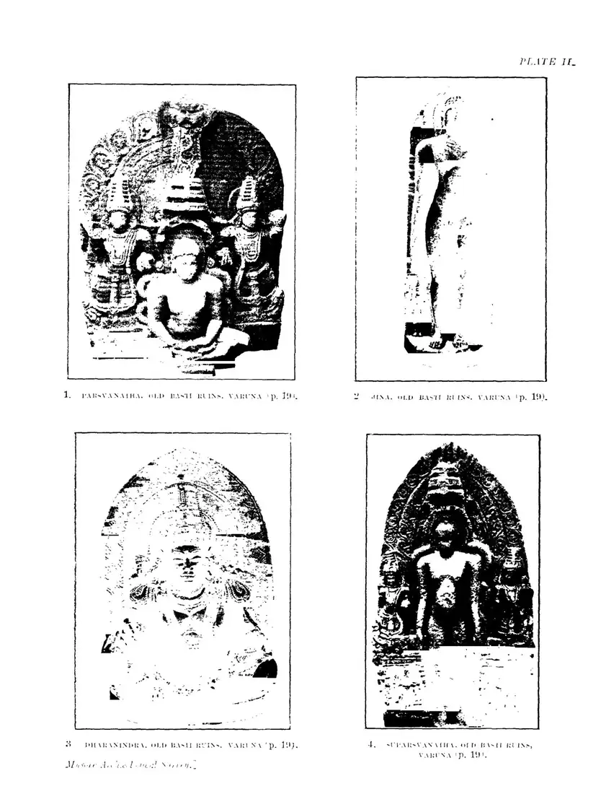
- PABSVANAIHA. OLD BASII RUINS. VARUNA (p. 19)
- MINA. OLD BASII RUINS. VARUNA (p. 19)
- DHARANINDRA. OLD BASII RUINS. VARINA (p. 19)
- SUPARSVANAIHA. OLD BASII RUINS. VARUNA (p. 19)
Cited in the text: p. 19 ↩, p. 19 ↩, p. 19 ↩, p. 19 ↩, p. 19 ↩, p. 81 ↩
Mahahūgēšvara Temple
History. A Viragal; Saptamātrīkas; Mahishāsuramardini; Gaṅga Structure
(Pl. III, 1).
An important and interesting structure at the place is a small granite temple called the Mahalingēsvara temple. The original name of the god appears to have been Bhūtēšvara. There are two inscriptions in front of the temple and another on a viragal inside the outer navaranga. These refer to circa 900 A.D. when a Chālukya prince by name Goggi appears to have interfered in a succession dispute between two local chiefs, Uttavagaĥla and Eđavari, perhaps of the Ganga dynasty. Another inscription mentions a battle between Polukēsi, apparently some later Chālukya chief bearing that great name and Būtuga identified by Mr. Narasimhachar with Būtarasa, son of Nitimārga. The temple is of interest because it is a genuine structure of the 10th century A.D. with some good carving work.
In the outer navaranga of the temple which is a later structure of 12 pillars, there are kept a number of interesting sculptures. One of them is a conical slab containing inscription No. Mysore 35, E.C. III, Mysore District. It mentions Mahāsāmanta Narasimha of the Chālukya family who was perhaps the father of Arikēsari, the patron of Ādi-Pampa, the famous Kannađa poet of the 10th century A.D. It has three panels. The lowest depicts a vigorous battle between a corps of elephants and an army composed of footmen led by cavaliers. One of the elephants is ridden by royal personages, and the corps is led by a horseman with a sword in hand. The elephants and horses are vigorous and realistic and do credit to the art of the time. In the middle panel is seated between two attendants a high personality, perhaps Būtuga whose name the linga bears. In the top panel he is shown as worshipping the linga under a fine Dravidian type tōraṇa.
Next to this inscription is a group of Saptamātrikas, all independent images with small waists and large breasts, reminding us of similar groups at Narasamangala and Haļe-Ālūr.
The Mahishāsuramardinī group (Pl. III, 3) in the same navaranga is evidently of the Ganga times. It shows the goddess as tieading on the buffalo with her left foot, her waist being twisted, her breast held by an ornamental breast band, while šankha and chakra are held in the two outstretched fingers. The prabhāvaĥi is of the same stone and depicts the group of the eight Dikpālas in a fixed order with Indra in the centre and, to his right, Āsāna, Vāyu, Varuṇa and Agni, and, to his left, Agni, Yama, Niruti and Kubēra. Each god is riding his vehicle with his consort. The style of work reminds us of the Araĥaguppe and Nandi types.
The rest of the temple consisting of the open vestibule and the small inside navaranga is the original temple of the Ganga times. Its outer wall is cut up by pilasters having cushion-shaped
Ganga structure.
mouldings above the neck. The vestibule doorway which has creeper scroll ornamentation on the jambs has above it a rounded cornice with horse-shoe shaped arches in front, a row of swans below and a small Gaja-Lakshmī group above it.
Paurāṇic frieze
No heading in the body: this section starts at its printed page (22).
The most interesting feature of the temple is the existence of a frieze (Pl. III, 2) of beautifully sculptured Paurāpic panels just underneath the eaves which are themselves ornamented with horse-shoe shaped arches. The frieze runs right round the temple. commencing just above the east doorway of the old temple and illustrates scenes from the Rāmāyaṇa as follows :—
East wall—
(1) Rāvaṇa hears of Rāma. Rāvaṇa abducts Sitā.
South wall—
(2) Rāvaṇa.
(3) Rāvaṇa performing a sacrifice.
(4) Rāma and Lakshmaṇa approached by Hanumān.
(5) Rāma and Sugrīva make friends.
(6) Sugrīva's coronation.
(7) Rāma sends out Hanumān.
(8) Hanumān slays Lankiṇi.
(9) Hanumān in Rāvaṇa's durbar.
(10) Hanumān is unslayable.
West wall—
(11) Hanumān in Rāvaṇa's bedroom.
(12) Hanumān visits Rāvaṇa's sacrificial room.
(13) Hanumān crosses the sea.
(14) Hanumān reports to Rāma.
North wall—
(15) The ocean is bridged.
(16) Vibhishaṇa is crowned (?).
(17) Battle between Rāma and Rāvaṇa on ground.
(18) Lakshmaṇa carried by Hanumān and Rāvaṇa flying in the air. Both fighting.
(19) Indrajit is slain.
(20) Rāma and Rāvaṇa fight.
(21) Rāvaṇa is slain.
East wall --
(22) Maṇdōdarī bewails her husband's death.
(23) Hanumān informs Sitā of Rāma's success.
(24) Rāma and Sitā are united.
(25) Vibhishaṇa is crowned.
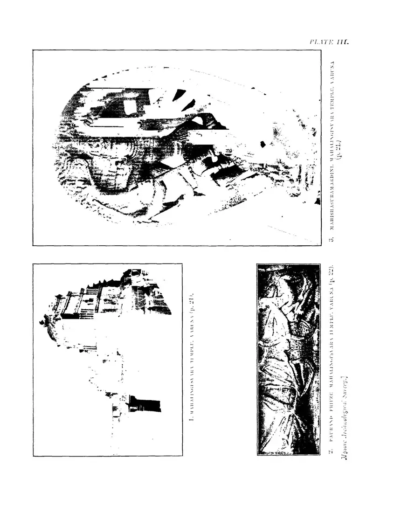
- MANHENGSMA TEMPLE, MAGNA (p. 2th
- PAURIND PERIEZE MANHENGSMA TEMPLE, MAGNA (p. 26)
- AKRIVA GETHEEL MANAGENTIAHAM GENIEPWARESHAWE (p. 21)
Inner Navaraṅga
No heading in the body: this section starts at its printed page (23).
The granite pillars of the inner navaranga have a round shaft of the Gaāga type resembling the Pātāla-Brahmadēva pillar in front of Inner navaranga. Gōmaṭēsvara and the pillars in the first shrine on the smaller hill at Śravaṇabelgoļa. On the ceilings of the navaranga and the open vestibule are carved lotuses in very high relief. The garbhagriha doorway has its jambs ornamented with creeper scrolls.
Part III: Study of Ancient Monuments and Sites › Mysore DistrictVājamaāngala
Situation; Ankanāthēšvara Temple
The village of Vājamangala is situated about a mile and a half to the north-west of Varuṇa. There are two principal temples in the place of which one is dedicated to Añkanāthēsvara and the other to Somēsvara.
Situation.
ANKANĀTHĚSVARA TEMPLE.
The Añkanāthēsvara temple appears to be a plain granite structure of about the 13th or 14th century with an image of Bhairava in the garbhagriha. There is a natural linga by its side called Añkanāthēsvara. To the south-west of the temple is a stone oil mill bearing an inscription of Vīra Narasimha III.
Sōmēšvara Temple
General Description; Navaranga
The Sōmēsvara temple is immediately to the north-west of the Añkanāthēsvara temple. It is a triple-celled structure with its outer walls built of bricks. The low roof and the appearance of the navaranga suggest that this temple is like the structures met with in many parts of the Dāvangere Taluk and described in the Annual Report of the department for 1939 (pp. 88 ff.).
The common navaranga into which all the three cells lead is supported on four cylindrical pillars, small in size but resembling the pillars at Narasamangala. In the hall are kept the stone images of the Saptamātrikas, Gaṇēsa, Sūrya, Umāmahēsvara, Vishṇu, etc. Some of the images appear to be recent, while the older images are worn out.
Part III: Study of Ancient Monuments and Sites › Mysore DistrictNañjangūđ
Nañjuṇđēšvara Temple
Situation
Nañjangūl is a little town situated 16 miles south of Mysore at the confluence of the river Guṇdlu with Kapinī or Kapilā which pours into the Kāverī river near T.-Narsīpur. The town is the centre of a taluk of the same name and has now a population
Situation.
of nearly 8,000 and is a very important place of pilgrimage. During its annual festivals in the months of March and April, it attracts very large crowds of pilgrims from the neighbouring districts. The chief attraction of course is the great temple of Nañjundēsvara (Pl. IV, 1) which is situated at the eastern extremity of the town not far from the slopes leading to the confluence. During the floods, the two rivers meet within a hundred yards of the temple.
History :—Hoysaļa Structures
14th Century Extension; Vijayanagar Period; Daļvāy Vikramarāya; Tipu Sultan; Krīshṇarāja Ođeyar III; Basavanakatťe; Tāṇđavēšvāra Shrine; Navagraha Shrine; Prākāra Shrines
No heading in the body: this section starts at its printed page (24).
Structures belonging to about half a dozen different periods commencing from the 13th and 14th centuries can be found in the Nañjundēsvara temple. (Pl. V).
The original and oldest part of the temple consists of the grabhagrīha, the vestibule with its pradakshinā and the rangamantapa to which may be added also the stone-built portions of the inner mahādvāra and the dipastambha. The Nañjundēsvara or the Śrīkanṭhēsvara linga is a low and medium-sized natural linga, placed on a low pedestal. The garbhagrīha is a plain one with walls of roughly dressed, but well adjusted, granite block-. Around it, except on the east, runs a narrow closed-in pradakshinā which is provided with three stone windows having cruciform or pond-shaped perforations. The outer walls of the sanctum are plain with roughly shaped pilasters, the spaces between which are covered over with plaster. The lower part of the walls contains a sloping cornice and an octagonal cornice; but the bottom is hidden by plaster filling. The outer wall of the pradakshinā has ornamental right-angled pilasters surmounted by a series of sharply curved eaves ornamented with half-carved and uncarved kīrtimukha arches and a parapet base which appears to have a series of lion-faced sea-horses. On the south wall are carved three panels consisting of the Nañjundēsvara linga under a canopy, Nandi facing it and a royal couple in devotional attitude (Pl. IV, 3) generally pointed out as Yadurāya and his queen, but probably much older and coeval with the temple. The door leading to the pradakshinā on the south has been filled in with plaster so that there is only one inlet in the north-west corner of the vestibule.
The vestibule is a plain structure with two cylindrical granite pillars supporting its roof. The doorways which are perhaps plain are covered over with silver plating.
The navaranga in its original form consisted of a hall supported by twelve pillars of undoubted 13th century Hoysala workmanship. Four of these have cylindrical plain shafts, while the four others that are now visible are of varied shapes. One is sixteen-pointed. A second is an octagon with three series of caryatid bracket figures. Both of these have the corners of their bases ornamented with cobra-hooded mouldings. Two other pillars are high ornate modifications of the thirty-two fluted types with braded chain ornamentation, and they remind one of the pillars in the Phalghunēsvara temple at Kaivāra, near Nandi. The brackets
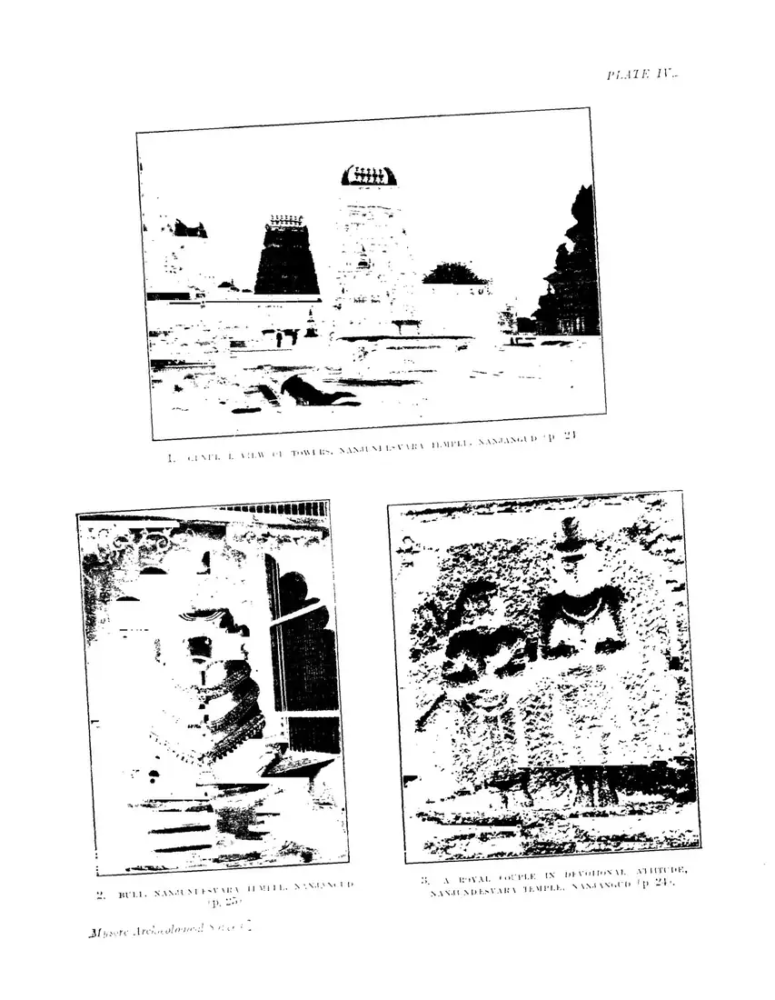
- GENE. L. VIEW OF TOWERS, NAMUNED-VARA TEMPLE, NANJANGUD (p. 24)
- BULI, NANJUNDESVARA TEMPLE, NANJANGUD (p. 25)
- A ROYAL COUPLE IN DEVOTIONAL ATTITUDE, NAMUNDESVARA TEMPLE, NANJANGUD (p. 24)
over these pillars are of the imitation ribbed pattern, common in Hoysala work of the 13th century.
This hall appears to have been extended by one ankaṇa on the east and to have been divided up into a number of cells, each containing 14th century extension . a linga. Most of the latter appear to bear the names of the queens of Krīshṇarāja Ođeyar III. The most important of the cells, however, contains a metallic group of Śiva as Chandraśēkhara. The face of the image is rubbed out to smoothness by continuous rubbing and washing. In the navaraṅga are kept the images of Ganapati, Durgā and Sapta-mātrikās, who are not attended by any other figures.
A few yards to the east of the navaraṅga stands the inner mahādvāra, with a granite doorway, surmounted by a brick tower. The “simha-lalāṭas” which ornament its exterior, the cruciform shafted pillars with their mango drops and smaller pillars carved on lion-bases, and the finely carved bull, elephant and horse on the inner face of the benches inside the mahādvāra, suggest that it is a structure of the late Hoysala or early Vijayanagar period. The mahādvāra was probably built between 1250 A.D. and 1100 A.D.
To this period also belongs the large eight-fluted granite lamp-pillar which is now placed near the bull of Vikramarāya. Between the navaraṅga doorway and the inner mahādvāra, to the west of the wooden dhvajastambha, stands a balipīṭha on which there is said to have been an inscription (Ep. Car. Mysore Supplement No. Nanjangud 280, not traceable now), of the time of Hariyappa Ođeyar, probably identifiable with Harihara I of Vijayanagar. If it is this prince, then the date would be C. 1342—1350.
Inside the inner prākāra were constructed, probably in the 14th century, the shrines of Pārvatī and Vishṇu and Chandikēśvara. The former contains an image of the goddess, holding a kamala and a kumuda . The arch or tōrana above the goddess has a serpentine band connecting it with the 14th century. The Vishṇu shrine is characterless and the image is a poorly carved piece in darkish stone, which does not appear to be the original image. The figure is that of Janārdana holding padma, chakra, ṣankha and gadā, but is called Kēsava.
In the days of the Vijayanagar emperous and perhaps by Krīshṇadēvarāya whose inscription of 1529 is to be found on the back-wall of the Visvēśvara shrine, was added an outer verandah in which are now installed Visvēśvara, Subrahmanṇyēśvara and other deities.
Vijayanagar period.
In 1643 A.D. Dalavoy Vikramarāya, Prince Commander of the Mysore Forces, got made and set up the beautiful bull (Pl. IV, 2) which is
Dalavoy Vikramaraya. now found in the mukhamanṭapa of the temple bearing his inscription on its pedestal. The bull is large, finely
4 carved and ornamented and beautifully finished and is an object that attracts notice as soon as one enters the temple.
To the left of the Pārvatī shrine is installed a greenish jadite linga, about nine inches high, called Pachche linga or Pādsha linga which is said to have been installed at the orders of Tipu Sultan. In this shrine is also placed a stone image of Pārvatī standing (abhaya, kunta, pāsa, dāna) which is said to have been used as a substitute for receiving the mutilations of iconoclasts and placed in front of a wall covering the Pārvatī image.
Such appears to have been the condition of the buildings until about 1839 when H. H. Mahārāja Krishṇarāja Ođeyar III of Mysore Krishnaraja Ođeyar III. devoted his resources to make his contributions to this temple, as seen from an inscription of his above the outer mahādvāra. his bhakta-vigraha in the south prākāra and the names of the numerous lingas and images in the outer prākāra.
The most interesting of these contributions are the images, particularly those of the family of the royal donor (Pl. I, Frontispiece), directly opposite to the shrine of the utsavamūrti and facing it through the south door of the navaraṅga. The portrait of the royal donor is an extraordinarily successful piece of sculpture which is a standing example of the art of the time. The Mahārāja who is supported on each side by two queens stands upright being bare footed and fully dressed, and with his hands folded in reverence. He wears a well shaped large (pāgu) turban. whiskered moustaches, holes for ear-rings, necklets and necklaces, bracelets, a Moghul type long coat, armlets of a checkered and floral pattern, uttarīyam taken over his left shoulder with ends being coiled round his waist. sword scabbard. dagger in sheath, Pathau type trousers with floral pattern. anklets and a single jingled anklet on the right ankle. The figure generally resembles the pictures of Krishṇarāja Ođeyar III in his younger days. On the pedestal appears the inscription :—
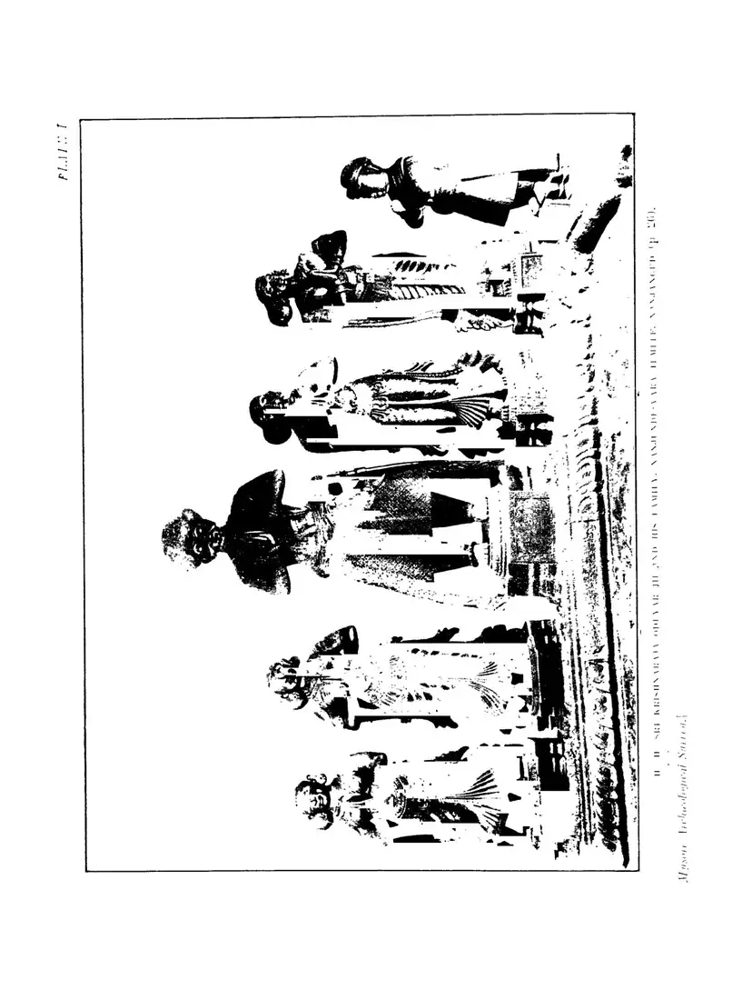
- II. THE SEIRNISHMAVA OBYAR THE AND THE FAMILY. ANNEND-AVA IL MILLE. NOMANCOP OF 260 Museum Tribladecim Spiritualum
Cited in the text: p. 26 ↩
Ālida Mahāsvāmi Krishṇarājaravaru.
His queens have their hair tied in a bundle to the right and wear turnbu (Tamil : šorpu ), large ear-rings, ađdike , bandi and tāli , and finely patterned and skirted saris. They stand with folded hands. On the pedestals appear their names which are as follows from the east :—
1. Ramāvilāsada Cheluvājaummaṇṇiyavaru.
2. Lakshmīvilāsada Dēvājammaṇṇiyavaru.
3. Krishṇāvilāsada Lingājammaṇṇiyavaru.
4. Samukhadatoṭṭi Sannidhānada Muddakrishnammaṇṇiyavaru.
To the left of the last named queen and facing east, stands the image of Nañjarāja Bahadūr, a boyish figure. wearing trousers, long coat, kammarband and Marāṭha-styled turban. He was the natural son of the king and was popularly known
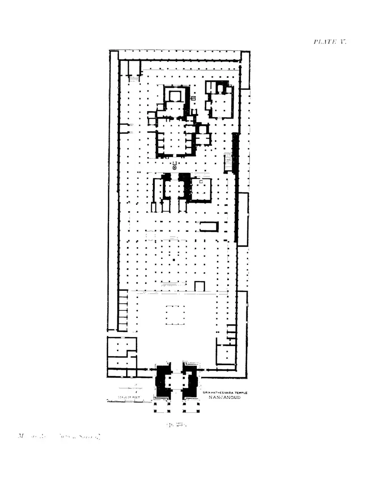
- p. 231 Made for Home Sage
Cited in the text: p. 24 ↩
as Dēvapārthiva. While the queens wear kunkumam on their foreheads, the king and prince wear no caste mark, but they have square signet rings on their little fingers. There are similar portrait sets of Krishṇarāja Odeyar III and his family at Chāmarājanagar, the Chāmuṇḍi Hill and the Krishṇasvāmi temple at Mysore. But the Nañjangūd set appears to be the largest of them all.
In front of the inner mahādvāra to the east extends a large pillared manṭapa whose nucleus appears to be the lamp pillar. around Basavanakatte . which there is a small square pavilion with straight sloping eaves. This is known as Basavanakaṭte, more probably because it housed formerly the large Basava of Vikramarāya than because the small bull known as Chamabasava is now installed in it.
At the back of this large manṭapa there stands a shrine of Tāṇdavēśvara facing south. It contains a fine copper group of Śiva as Andhakāsurasamhāri.
Among the several additional shrines may be mentioned a Navagraha shrine installed by a Vaiśya gentleman in recent times. It Navagraha shrine . contains the image of Sūrya surrounded by those of the Grahas or planets made by Mr. Siddalingasvami of Mysore. The Navagraha images are finely made and show an attempt to imitate some features of Hoysala sculpture.
We may now proceed to study the long rows of sculptures, images and lingas that are placed in the shrines of the inner verandah of the outer prākāra, commencing from the south-east, where exist the two kitchens of the temple. First, there is a row of stone images of the sixty-three Śaiva saints. The images are encrusted with a thick coat of wax which makes them look ugly. But if exhibited in a clean condition, they will perhaps bring credit to the sculptural work of Mysore during the 19th century.
The saints are in the following order, their striking peculiarities, if any, being noted against their names. They are generally in groups of three, each group having a set of three copper images for procession purposes and being fixed on wooden platforms. The copper images are also good, but the stone ones are better. The copper images have not been arranged so as to correspond with the stone ones in the several shrines.
1. Nandini. [Pl. XI, 2 (3)].
2. Sundara (Sundaramūrti). [Pl. XI, 2 (2)]
3. Kamalini. [Pl. XI, 2 (1)].
4. Appar (holding a broom). [Pl. VI, 2 (2)].
5. Māṇikyavāchakar (holding rosary and a book). [Pl. VIII, 2 (1)].
6. Śivajñānasambandhar, with a metal tāla in his hands. [Pl. XI, 1 (2)].
7. Trisahasrabhūsuraru. [Pl. VIII, 3 (1)].
8. Nilakaṇṭharu. [Pl. VIII, 3 (2)].
9. Mahādhanaru. [Pl. VII, 4 (3)].
10. Māraru. [Pl. IX. 4 (1)].
11. Satyārtharu. [Pl. XI, 4 (1)].
12. Varamindaru, with a battle-axe. [Pl. IX, 4 (3)].
13. Amaranīti.
14. Dārukaru, with a goad. [Pl. X, 1 (2)].
15. Ěnādhinātharu.
16. Kālanātharu. [Pl. VII, 2 (3)].
17. Kaṇṇappanavaru, with a strung bow. [Pl. VII, 2 (2)].
18. Mānakuṇjaru. [Pl. VII, 2 (1)].
19. Sankulādāyaru. [Pl. X, 4 (1)].
20. Gonātharu (playing on a flute like Vēṇugōpāla). [Pl. VII, 4 (2)].
21. Mūrtinātharu. [Pl. XI. 3 (2)].
22. Skandanātharu, with a garland of flowers in his hands. [Pl. VIII, 1 (1)].
23. Rudrapaśupati. [Pl. VIII, 1 (2)].
24. Nandaru. [Pl. VIII, 1 (3)].
25. Vichāravantaru, with a bag on his shoulder. [Pl. VII, 1 (1)].
26. Chaṇḍīsvararu, with an axe. [Pl. VII, 1 (2)].
27. Kulapakshakaru. [Pl. VII, 1 (3)].
28. Vidyāvantaru [or Vidyāśūraru, Pl. VIII, 4 (1)].
29. Pūtavatī—seated with folded hands. [Pl. VIII, 4 (2)].
30. Abhūtichararu. [Pl. VIII, 4 (3)].
31. Nilauagnaru. [Pl. VI, 3 (2)].
32. Źavanandi.
33. Kalikāmaru. [Pl. IX. 3 (3)].
34. Śrīmūlaru. [Pl. IX, 2 (1)].
35. Bhadrabhaktaru, with a small axe (bāchi). [Pl. X, 3 (1)].
36. Daṇḍabhaktaru. [Pl. IX. 1 (3)].
37. Mārasōmayājigaḥu. [Pl. IX, 1 (1)].
38. Śākyanātharu, with two balls in his hand (guṇḍu). [Pl. VI, 3 (1)].
39. Niruddha Śārdūlaru. [Pl. XI, 3 (3)].
40. Matangaru.
41. Chārabhūpati. [Pl. VIII, 2 (2)].
42. Gaṇanātharu. [Pl. VIII, 2 (3)].
43. Parāntakaru—a sword on his left shoulder. [Pl. VII, 3 (1)].
44. Satyadhanaru. [Pl. XI, 3 (1)].
45. Dharmakētanaru. [Pl. IX, 2 (2)].
46. Pratāpaśūraru. [Pl. VI, 2 (1)].
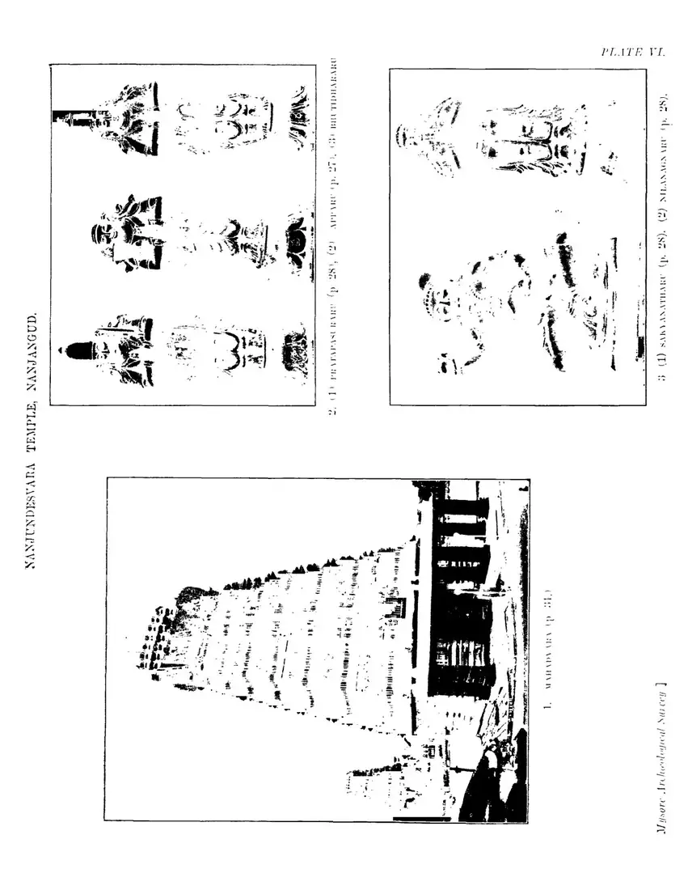
- MALADARA (p. 34)
- 1. DRIVEPASUBARI (p. 28), (2) APPARE (p. 27), 3. BUITIDHARARU
47. Atibhaktaru. [Pl. X, 3 (2)].
48. Mānadhanaru. [Pl. VIII. 3 (3)].
49. Kalinīti. [Pl. XI, 1 (1)].
50. Kīrtinātharu.
51. Pañchapādaru with only two feet. [Pl. XI, 1 (3)].
52. Gānavallabharu.
53. Avikāri. [Pl. X, 4 (2)].
54. Abhirāmaru. [Pl. XI, 4 (3)].
55. Nirvachanaru. [Pl. VII, 3 (2)].
56. Śakranātharu.
57. Dharmabhaktaru.
58. Dharmanātharu.
59. Sāhasapriyaru, with fly-whisk in right hand. [Pl. X, 2 (3)].
60. Kīrtikathāmritaru. [Pl. VII, 3 (3)].
61. Śūravyāghraru. [Pl. VII. 4 (1)].
62. Vibhūtichararu.
63. Sahasrakaru.
64. Śambhuchittaru. [Pl. XI, 4 (2) .
65. Lōhitāksharu. [Pl. IX, 2 (3)].
66. Gītākāraru with a rudravīṇa. [Pl. IX, 4 (2)].
Here ends the series of Śaiva saints. To the west is a series of līngas, which are as follows :—
Liņgas
1. Pṛithvilinga.
2. Ablinga.
3. Tējōlinga.
4. Vāyulinga.
5. Ākāsalinga.
Next to the intervening bhaktavigraha shrine they are as under :—
6. Brahmēśvara.
7. Paraśurāmēśvara.
8. Gautamēśvara.
9. Mārkaṇdēśvara.
10. Sujñānēśvara.
11. Tīrtharājēśvara.
12. Lakshmīśvara.
13. Sahasralingēśvara (showing one thousand relievo lingas in one līnga).
The prākāra images are continued :—
1. Prasanna Gaṇapati.
2. Nilakaṇṭhēśvara.
3. Śakti-Gaṇapati with his lady seated on his left lap and mouse on pedestal. The god has ten hands.
4. Trinēśvara.
5. Mallikārjunēśvara.
6. Mahā-Gaṇapati.
7. Kapilēśvara.
8. Bhūkailāsēśvara.
9. Saṅgamēśvara.
10. Kauṇđinyēśvara.
11. Śrī Nañjarājābhida Mummadī Krīshṇarājēśvara.
12. Rajita-Nañjuṇđēśvara—perhaps installed to prevent the plundering raids of the Mahratas.
13. Shaṇmukha—six-headed and twelve-armed, riding on peacock and flanked by Vallidēvī and Dēvasenā.
14. Daṇđapāṇi Subrahṇnanyēśvara, with the right hand holding a staff and the left in kaṭihasta.
15. Śāradā.
A room in the corner which contains twenty-nine minor lingas is said to have been removed from the area of the Pārvatī and Nārāyaṇa shrines.
To the east of the steps leading to the terrace extends a long verandah which contains the most interesting sculptures in the temple.
Šivalīla Images
Their general design and excellence of finish prove that Mysore was yet famous for its sculpture in the second quarter of the 19th century and that its great art died out during the days of the Commission. Each image with its prabhāvali is about 5 feet high. The images show the līlās of Śiva and are as follows commencing from the west :—
1. Chandraśēkhara with Pārvatī.
2. Umāmahēśvara—seated.
3. Vṛishabhārūḍha—with the couple riding the bull.
4. Tāṇđavēśvara with Pārvatī. treading on a demon. (Pl. XII, 1).
5. Girijākalyānamūrti—with Brahma and four other deities as witnesses. (Pl. XII, 2).
6. Bhikshāṭanamūrti—with begging bowl in the left hand and feeding what looks like a deer in right hand and attended by a dwarf carrying a basket.
7. Kāmasamhāramūrti (Pl. XII. 3) with Manmatha riding on a parrot and shooting a floral arrow at Śiva (Pl. XIII, 1). Śiva's left hand holds a triangular dhvaja in which is carved a picture of Manmatha riding on a parrot.
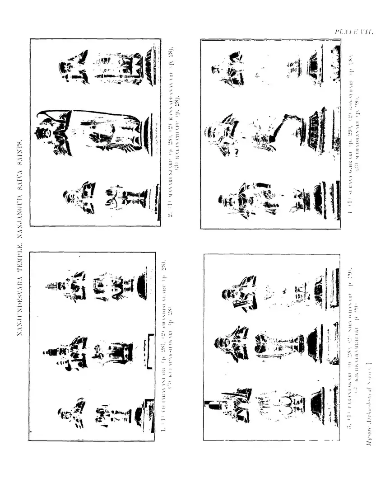
- 01 SRAVYOGHAART (p. 29), (2) GONATHAART (p. 28)
- 01 VETARANTAART (p. 28), (2) GHUNDSAVAART (p. 28)
- 01 MENAKNAART (p. 28), (2) KANAPTANAART (p. 28)
- 01 PARANTAART (p. 28), (2) SERAVOTAART (p. 29)
Cited in the text: p. 28 ↩, p. 28 ↩, p. 28 ↩, p. 28 ↩, p. 28 ↩, p. 28 ↩, p. 28 ↩, p. 28 ↩, p. 28 ↩, p. 29 ↩, p. 29 ↩, p. 29 ↩, p. 38 ↩
8. Kālasamhāramūrti—with Mārkaṇdēya defended by Śiva who spears Yama for having roped his devotee. (Pl. XIII, 2).
9. Tripurasamhāramūrti—Śiva standing with bow and arrow and accompanied by Pārvatī.
10. Jalandharamūrti—two-handed, with umbrella and kamaṇdalu with spout. A royal figure stands with offering.
11. Brahmaśirachechēdanamūrti—Pecular figure with dagger, axe, triśūla, and Brahma's head.
12. Vīrabhadramūrti—attended by Dakshabrahma and Pārvatī.
13. Śaṅkaranārāyaṇamūrti—Abhaya, axe, śankha and dāna.
14. Ardhanārīśvaramūrti.
15. Kirātārjunamūrti—Śiva handing an arrow to Arjuna. (Pl. XIV. 3).
16. Kankāļamūrti—a form of Bhairava like Bhikshāṭanamūrti.
17. Chaṇdikēsvara Varaprasannamūrti.
18. Vishakaṇṭhamūrti—Pārvatī's hand touching Śiva's throat. (Pl. XIV, 1).
19. Chakradānamūrti—showing Śiva presenting Chakra to Vishṇu. (Pl. XIV, 4).
20. Vighnēśvara Varaprasannamūrti.
21. Sōmaskandamūrti.
22. Ēkapādamūrti—with Brahma and Vishṇu emanating from the body of Śiva who stands on one leg. (Pl. XIV, 2).
23. Sukhāsīnamūrti.
24. Vaṭamūla Dakshiṇāmūrti—a fine group showing Dakshiṇāmūrti seated in yōgāsana as a teacher and surrounded by worshipping ṛishis. (Pl. XV. 1).
25. Lingōdbhavamūrti—flanked by Brahma on the swan and Vishṇu on Garuḍa. (Pl. XII. 4).
Perhaps the largest and most majestic structure erected by Kṛishnarāja Odēyar III is the main mahādvāra of the temple. The mahādvāra
Mahādvāra
dvārapālas. The tower is about 100 feet high and is surmounted by nine large gilded kalaśas supported by crescents.
Front Porch
No heading in the body: this section starts at its printed page (32).
In front of the mahādvāra a large dvāramanṭapa or porch was built by Nīlagiri Muddanṇa about forty years ago. It is borne on eight huge granite pillars containing some interesting relievo sculptures. Among these are the following proceeding from the east clockwise:—
Pillar No. 1 —
Nandikēsvara.
Rāvaṇa.
Umāmahēsvara.
Kāmadhēnu.
Bhairava with scorpion.
Garuḍa with amṛita kalaśa.
Pillar No. 2—
Bhrīṅgi.
Five-hooded cobra.
Indra with elephant.
Agni with ram.
Yama with buffalo.
Pillar No. 3—
Niruti with human beng.
Lady at toilet.
Seated ṛishi.
Pillar No. 4— kaumārī with peacock.
Sarasvatī.
A kālinga serpent standing upon tail and catching a garuḍa bird which holds in its beak a smaller serpent.
Sūrya.
Vishṇu with Garuḍa.
Left of the gate:—
Pillar No. 5— ṛishi with kalaśa.
Nāga.
Janārdana with Hanumān.
Girijākalyāṇa with Nandi.
Pillar No. 6— ṛishi.
A crocodile devouring a fish.
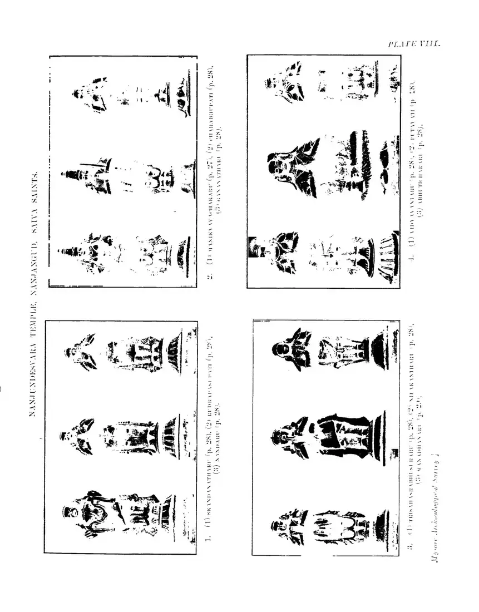
- (1) SKANDANATHARE (p. 28). (2) RUDRAVESI PATH (p. 28)
- (1) UNIKYAWTHAKARE (p. 27), (2) CHARABHEPATI (p. 28)
- (1) TRISHASRABHISERARE (p. 28), (2) NI KANTHART (p. 28)
- (1) UDOWANTARE (p. 28), (2) PITAVAT (p. 28)
Cited in the text: p. 27 ↩, p. 28 ↩, p. 28 ↩, p. 28 ↩, p. 28 ↩, p. 28 ↩, p. 28 ↩, p. 28 ↩, p. 28 ↩, p. 28 ↩, p. 28 ↩, p. 29 ↩
Varuṇa with makara which is like a yāli.
Vāyu with deer.
Pillar No. 7—
Kubēra with horse.
Rīshi and a lady.
Īsāna with bull.
Nāgalinga being kicked by Kaṇṇappa.
Pillar No. 8—
Female Garuḍa bird with amrītakalaśa.
Amrītakalaśa.
Vīrabhadra.
Lady putting on anklet.
Shaṇmukha with peacock.
Dancing Gaṇēśa.
Brahma on swan.
Nāgalinga.
Kumāra with peacock.
The central beums have Umāmahēśvara, Shaṇmukha, Lakshmī-Narasimha and Nandi in their central panels. Above the central beam, over the parapet, is a small stone image of Lakshmī with a five hooded cobra overspreading her head.
The porch has on either side a granite elephant.
The parapet of the Nañjuṇḍēśvara temple, which is built of brick and mortar is composed of a long series of highly ornamental turrets,
Parapet Figures
1. Varuṇa on makara.
2. Vāyu on deer.
3. Kubēra on horse.
4. Īsāna.
5. Nārāyaṇa on Garuḍa.
6. Vīrabhadra.
7. Pūrva Asitānga Bhairava—The image looks like Brahma and Sarasvatī on swan.
8. Umāmahēśvara on Nandi.
9. Kumāra and Kaumāri on peacock.
10. Niruti—Krōdhabhairava : Like Yama with consort on buffalo.
11. Varuṇa—Unnata Bhairava : Like Indra with consort on elephant.
5
12. Vāyavya—Kapāla-Bhairava : Like Lakshmīnārāyaṇa on Garuḍa. The god has a jaṭa.
13. Kubēra—Bhīshaṇa-Bhairava : Like Kumāra with consort on peacock.
14. Ēśānya—Samhāra-Bhairava : A couple seated on a rat.
Sixteen images of Subrahmaṇya—
15. Jñāna-Śakti-Subrahmaṇya—holding vēla and human head.
16. Skanda Subrahmaṇya—[abhaya, parrot, vajra (?), dāna].
17. Dēvasēnāpati Subrahmaṇya—with two heads and eight hands [abhaya, svastika, sword, round fan (?), parrot, buckler, vēla, dāna].
18. Subrahmaṇya with four heads—[abhaya, arrow, leaf, demon's head, vēla (?), bow, dāna, etc.].
19. Gajārūḍha-Subrahmaṇya—seated on a trunked yāli or lion.
20. Śarakānana Subrahmaṇya—eight-handed figure seated on a lion.
21. Kārtikēya Subrahmaṇya—eight-handed and seated on peacock.
22. Kumāra Subrahmaṇya—four-handed and standing.
23. Shaṇmukha Subrahmaṇya—six-headed and twelve-armed, standing with peacock behind.
24. Tārakāntaka Subrahmaṇya—with six hands and seated on elephant.
25. Sēnāni Subrahmaṇya—standing with four hands (abhaya, chakra, śankha, dāna).
26. Brahma Subrahmaṇya—standing with four hands (abhaya, triśūla, vēla or vajra, dāna).
27. Śasta Subrahmaṇya—(abhaya, spear. vajra, dāna).
28. Vallī Subrahmaṇya—with six hands [abhaya (?), demon's head, a banner and dāna].
29. Kalyāṇa Subrahmaṇya—seated on peacock and four-handed (abhaya, arrow, bow and dāna).
30. Bāla Subrahmaṇya—seated on peacock holding goad, śakti, pāśa.
Seven images of Tāṇḍavēśvara—
31. Ānanda Tāṇḍava—wearing shorts of tiger skin with a demon grinning in admiration.
32. Sandhyā Tāṇḍava—damaged.
33. Umā Tāṇḍava —with tresses of hair falling around and Gaṅga on head.
34. Gaurī Tāṇḍava—Gaurī standing by and admiring.
35. Kālikā Tāṇḍava—with eight arms.
36. Tripura Tāṇḍava—with twelve arms.
37. Samhāra Tāṇḍava.
Ten images of Dakshiṇāmūrti—
38. Viṇā Dakshiṇāmūrti : Like the one inside the temple, seated in yōgāsana holding viṇā.
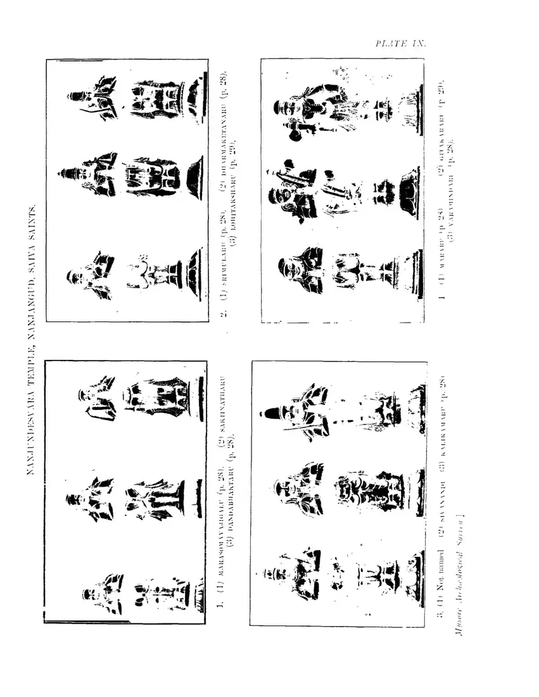
- (1) MARASOVI MAGIALP (p. 28). (2) SAKTNATHARU (3) DANDABHANTARCE (p. 28)
- (1) MARAMP (p. 28). (2) GUTAKARAM (p. 29)
- (1) SRIMCLARU (p. 28). (2) DU ORMAKETANARU (p. 28)
- (1) No. named (2) SIVANNDI (3) KALIKAMARP (p. 28)
Cited in the text: p. 28 ↩, p. 28 ↩, p. 28 ↩, p. 28 ↩, p. 28 ↩, p. 28 ↩, p. 28 ↩, p. 29 ↩, p. 29 ↩
39. Sāmba Dakshiṇāmūrti—seated in sukhāsana on a raised seat and holding book.
40. Yōga Dakshiṇāmūrti—in yōgāsana holding book.
41. Samhāra Dakshiṇāmūrti—with the right knee pressing upon a demon.
42. Śakti Dakshiṇāmūrti—with consort on left lap.
43. Jñāna Dakshiṇāmūrti—in yōgāsana holding rosary.
44. Anushthāna Dakshiṇāmūrti—in sukhāsana, holding rosary and book.
45. Vyākhyāna Dakshiṇāmūrti—with the left hand holding book and the right in chinmudra.
46. Vidyā Dakshiṇāmūrti—one hand holding vīṇā and the other three broken.
47. Vaṭamūla Dakshiṇāmūrti — in sukhāsana, with banyan branches above.
Miscellaneous—
48. Lingōdbhavamūrti.
49. Vēlāyudha Subramaṇyamūrti—with long spear, quiver and sword, the right hand in abhaya.
50. Kālabhairava—with hound behind.
51. Chamunḍēśvarī—sixteen-handed and treading upon buffalo-headed demon. Near the south-west corner on the wall is a small relievo of Gaṇapati which is famous as a boon-giver.
West parapet—
52. Chandraśēkharamūrti—damaged.
53. Umāmahēśvaramūrti—damaged.
54. Vṛishabhārūḍhamūrti—the couple on Nandi.
55. Tāṇḍavamūrti with long dishevelled tresses.
56. Kalyāṇa Sundaramūrti—Śiva marrying Pārvatī.
57. Bhikshāṭanamūrti—with dog damaged.
58. Kāmasamhāramūrti—Śiva seated in yōgāsana with Kāma shooting a flower from the back of a parrot.
59. Kālasamhāramūrti—with Mārkaṇḍēya and Yama.
60. Jalandharamūrti—with umbrella and kamaṇḍalu like vāmana.
Back centre—
61. Gajāsuramardanamūrti—spearing an elephant's head.
62. Tripura Samhāramūrti—seated in chariot and shooting at a flying demon.
63. Vīrabhadramūrti—with Pārvatī and Dakshabrahma.
64. Śarabhamūrti—with the body of a six-legged lion, a human trunk, thirty-two hands and a long-nosed lion face. This is an interesting and terrible figure.
65. Aghōramūrti—with thirty-two hands—standing in samabhaṅga [abhaya, triśūla, śankha, leaī, banner, vajra. gadā, curved sword, vajramushtī, arrow, ribbed mace, goad, chakra. broken, triśūla, sword, buckler, ḍamaru. šankha (?), broken, fruits, bow, discus, curved dagger, straight dagger, book, daṇda, chiṭṭe-tāla, bell, demon's head, deer and dāna].
66. Ardhanārīśvaramūrti.
67. Kirātakamūrti.
68. Kaṇkālamūrti—with Nandi.
69. Chaṇḍikēśvaramūrti—standing and begging.
70. Vishaharamūrti.
North-west corner of north parapet—
71. Chakradānamūrti—bestowing discus to Vishṇu.
72. Vighnēśvara Varaprasannamūrti—damaged.
73. Sōmāskandamūrti—with a number of indecent figures nearby.
74. Sukhāsīnamūrti—with a number of indecent figures nearby.
75. Ěkapādamūrti.
76. Dakshiṇāmūrti.
Thirty-two forms of Gaṇapati—
77. Bhilla Gaṇapati—damaged.
78. Duṇḍi Gaṇapati.
79. Taruṇa Gaṇapati.
80. Tāṇḍava Gaṇapati—dancing.
81. Vira Gaṇapati—standing with twelve arms.
82. Lakshmī Gaṇapati—with consort on left lap.
83. Chaturmukha Gaṇapati—with four elephant faces.
84. Śakti Gaṇapati—with consort.
85. Vijaya Gaṇapati—with eight hands.
86. Riṇavimōchana Gaṇapati—no distinguishing mark.
87. Mahā Gaṇapati—with consort and ten arms.
88. Srīshṭi Gaṇapati.
89. Pañchamukha Gaṇapati—with five heads.
90. Samādhi (?) Gaṇapati.
91. . . . Gaṇapati—with pot in left front hand.
92. Uchchishṭa Gaṇapati—with consort.
Forms of Śiva—
93. Vighnēśvara Varaprasannamūrti.
94. Chaṇḍikēśvara Varaprasannamūrti.
Forms of Gaṇapati—continued—
95. Kshipra Gaṇapati—with six hands.
96. Hēramba Gaṇapati—with eight hands.
97. Ūrdhva Gaṇēśam Gaṇapati—with the trunk projected toward in front.
98. Kshipraprasāda Gaṇapati—with consort.
99. Mahā Gaṇapati—with eight hands.
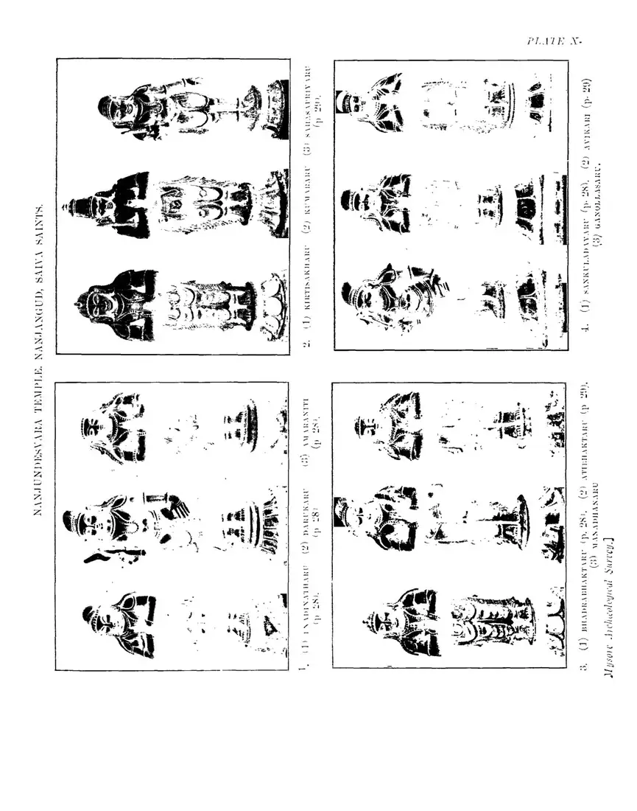
- (1) INDINATHARU (2) DARPKARU (3) MARANTI (p. 281.) (p. 289)
- (1) KIETSAKHARU (2) KOMHARU (3) SAIASAPIYARE (p. 290)
- (1) BHADRABHAKTARU (p. 28). (2) ATTEHAKTARU (p. 29)
- (1) SANKULADAYARU (p. 28). (2) ATIKARI (p. 29)
Cited in the text: p. 28 ↩, p. 28 ↩, p. 28 ↩, p. 29 ↩, p. 29 ↩, p. 29 ↩
100. Bijāpurada Gaṇapati—with ten arms and consort on lap.
101. Sarvārthasiddhi Gaṇapati—standing with ten arms.
102. Sadāśiva Gaṇapati—five heads, ten arms and consort on lap.
103. Vighnarāja Gaṇapati—with a seven-hooded cobra over his head.
104. Tatyākshara Gaṇapati—Gaṇapati with eight arms.
105. Yāga Gaṇapati.
106. Śūra Gaṇapati.
107. Ibhavaktra Gaṇapati.
108. Karindra Gaṇapati.
109. Ramā Gaṇapati.
110. Gaurīputra Gaṇapati—with five heads and ten hands.
The Seven Mothers (Saptamātrikas)—
111. Brāhmī on swan.
112. Māhēśvarī on bull.
113. Kaumārī on peacock.
114. Vaishṇavī on Garuḍa.
115. Vārāhī on buffalo (peculiar).
116. Indrāṇī on elephant.
117. Chāmuṇḍi riding on a rākshasa.
North-east corner.
118. Brahma with swan at the back.
119. Indra on elephant.
120. Agni on ram.
121. Yama on buffalo.
122. Niruti on human being.
Part III: Study of Ancient Monuments and SitesBangalore District
Bangalore Fort
Delhi Gate
No heading in the body: this section starts at its printed page (37).
The North or Delhi Gate and a third of the original out-works are the only portions now remaining of the once extensive fort at Delhi gate. Bangalore. The fort is said to have originally consisted of a double rampart running in an oval shape. (Home's Select Views in Mysore, 1794). Out of the five strong gates which are said to have existed on the north side only three remain now: one in the outworks, the second in the west wall of the east bastion and the third, which is the Delhi Gate proper in the cross wall running east to west to the south of the east bastion.
All the three gates are high and arched. They are mostly built of brick and mortar, each with a portal to left and one with guard rooms on the inner side. Tipu is said to have entirely rebuilt the Delhi Gate. But on the outer southern jamb of the middle gate is sculptured a Hindu warrior in relief. (Pl. XX, 1). He is perhaps Kempe Gauḍa of Māgađi. He is represented in the act of attacking a tiger with his sword and short spear (?) This fort gate and the adjacent walls including at least the west wall of the cutworks seem to have been originally Hindu in construction. Relief figures of the lion, the linga, matsya, Ganeśa, etc., appearing here and there on the inner fort wall as also on the western cross wall of the outworks support this view.
There are two semicircular bastions in the inner fort wall, of which the one on the east is larger than the other to its west. The former had originally a Hindu gateway with pendant bud capitals on its jambs. Tipu seems to have closed it up during his extensive renovations of the fort and constructed the Delhi Gate in a south cross wall which he seems to have constructed afresh along with another, that is perhaps the middle gate in the west wall of the bastion. The three chambers inside this east bastion were also probably put up by him. At the head of the western chamber there is a tablet mentioning that it was the dungeon in which Captain David Baird and others had been confined till their release in 1785. Home states that near the north or Delhi Gate, Tipu established a mint, a foundry for brass cannon, an arsenal for military stores, magazines for grain and gunpowder, etc. It is very likely that these chambers were guard rooms or magazines.
The Delhi gate, though mostly built of brick and mortar, is faced with stone on the northern side. The western wall of the east bastion containing the middle gateway seems to have been an improvement effected to the fort by Tipu. But the northern wall which contains a Ganeśa shrine and two arched side niches is definitely Hindu and must have stood before the days of Tipu.
To the west of the east bastion runs a cross wall of the out-works south to north with another running at right angles to it, west to east, and containing the first of the three gates from the north, which has been illustrated by Home in Plate VII of his Select Views in Mysore. This gate had guard rooms on the outside as well as on the inside. Those on the outside have been knocked down already, while those on the inside, now proposed to be dismantled owing to their great decay and ugliness, stand in the north-west corner of the quadrangle abutting the north wall of the outworks. There are three rooms with arched doorways of which the one on the east is smaller in size than the rest. The structure is of brick and mortar and was perhaps built by Tipu.
In the western crosswall there is now a chamber, which, during the Hindu period, seems to have been open and to have served as a gateway. Inside the
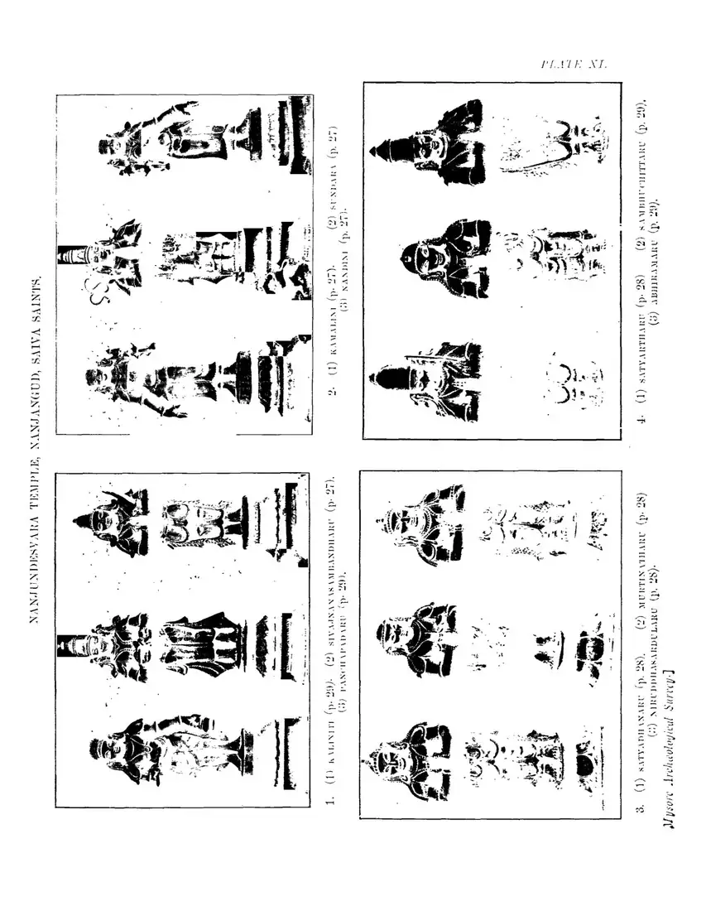
- (1) KALINTI (p. 29). (2) SIVAMAN KAMBANDHARU (p. 27). (3) PANCHAPODORU (p. 29)
- (1) KAWALINI (p. 27). (2) SUNDARA (p. 27). (3) NANDIN (p. 27)
- (1) SATYADHANARU (p. 28). (2) MUFTIN VIHARU (p. 28). (3) NIRCDHINAKARDULURU (p. 28)
- (1) SATYARTHARU (p. 28) (2) SAMBIT CHITTARU (p. 29). (3) ABHIRAMARU (p. 29)
Cited in the text: p. 27 ↩, p. 27 ↩, p. 27 ↩, p. 27 ↩, p. 28 ↩, p. 28 ↩, p. 28 ↩, p. 28 ↩, p. 29 ↩, p. 29 ↩, p. 29 ↩, p. 29 ↩
chamber there are thick Dravidian pillars. At the head of the doorway is a relief figure of Gajalakshmī.
History and General Description
No heading in the body: this section starts at its printed page (39).
A third crosswall on the east connects the east bastion with the northern wall of the outworks. To the east of the east bastion there is a shrine of Hanumān which originally guarded the Hindu gateway.
The brick parapets above the fort walls were all evidently put up during the days of Tipu Sultan. They have musket holes and cannon platforms.
Part III: Study of Ancient Monuments and SitesMandya District
Gaṅgavāđi
Situation and Antiquity; Sankankallu
Gangavāđi is a village about four miles to the east of Honakere in the Nāgamaṅgala taluk. It appears to date from the Hoysaļa
Situation and antiquity. times as can be gathered from the innumerable vīragals of this period which are built into the platform of a peepul tree to the north-east of the Bīrēdēva temple at the place. Some of the vīragals have inscriptions but are so worn out that not much can be made out of them. According to the tradition current in the locality the place is said to have been ruled by a certain Gaṅgarāja and derived its name from him. It is not known to what dynasty he belonged, if at all it is true that a king of this name ruled the place. Nor is it possible for us, in the absence of a definite inscription, to identify him with the famous Hoysaļa general who bore that name. There are, however, the remains of an ancient fort at the place; but these belong to the 17th century and only prove that the place was the seat of a Pālleyagār of the period.
On the way from Honakere to Gangavāđi and nearer the latter place than the former, there is a huge boulder called Sankankallu by the
Sankankallu. villagers. The front face of the boulder has the marks of an ancient quarry which the people have mistaken for an inscription. At the foot of the boulder is a small natural stone worshipped by the people as Gaviraṅga. To the east of the boulder flows the river Lōkapāvanī and renders the prospect of the surrounding country highly attractive.
Māchalaghaṭta
Mallēśvara Temple
Māchalaghatta is a village about four miles directly to the south of Honakere. In an inscription (Ng. 106) the place is called Māchanaghatta
The Place
General Description : Outer View; Navaraṅga; Navaraṅga Ceilings
north-east of the village there is the Mallēsvara temple (Pl. XV, 2) which is a good monument of the Hoysaļa period (circa 13th century A.D.).
The temple is a soapstone structure facing east. It consists of a square garbhagriha, a vestibule, a square navaranga and a porch (Pl. XVI, 1).
General description: The building seems to have been raised on a floating foundation. The basement consists of three square and uncarved cornices. The outer walls are relieved by right-angled pilasters. The eaves are a little sloping. The parapet above them is intact only on the south where it has, in the middle, an Umāmahēsvara group and stone kalašas at the corners. The tower which is a stepped pyramid consists of nine tiers with dentil mouldings at intervals projecting upwards. The final of the tower is missing. In front of the tower is a stone projection over the vestibule.
The porch of the temple has two cylindrical pillars on either side in front. Its ceiling is formed like a dome and is circular with a lotus pendant in the centre.
The navaranga doorway is plain but for an eaves-shaped cornice above the uncarved lintel. On either side of the doorway are star-shaped pilasters. The navaranga hall is about 16' square.
Navaranga. Against the walls on the interior are cruciform pilasters. The central ceiling is supported on four lathe-turned bell-shaped pillars. These central pillars are well-worked in their several mouldings and have the garland, rosette and medallion ornamentations on the shaft.
All the ceilings of the navaranga are well-designed domes and are differently shaped. Starting from the east and running clockwise
Navaranga ceilings. they are as under :—
1. Twelve-pointed star with lotus pendant in the centre.
2. Six-pointed star with lotus pendant.
3. An octagon with an octagonal pendant.
4. Square with arched corners and indentations at the sides. Lotus pendant.
5. Octagon with a square above it. In the centre is a Tānđavēsvara group. Flat ceiling.
6. Three concentric squares with lotus pendant in the centre.
7. Two concentric eight-pointed stars with lotus pendant in the centre.
8. Octagon with a circle above and a lotus pendant in the centre.
9. Central—thirty-two pointed star with three concentric circles above.
In the centre hangs a beautiful lotus pendant. The corner stones on the beams have the figures of Dikpālas, etc.
In the central ankaņa of the navaranga is a beautiful potstone Nandi. Of the four turreted niches in the hall only two contain images.
Images in Navaranga
Vestibule; Garbhagrīha
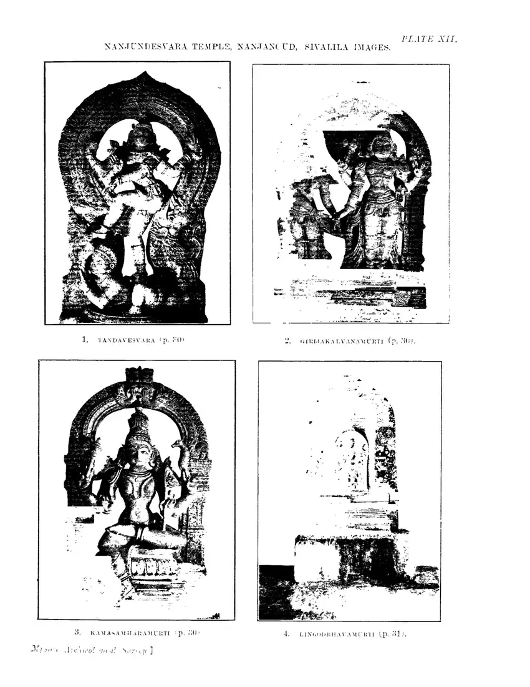
- TANDAVESVARA (p. 70)
- GIRBHAKALYANAMURTI (p. 30)
- KAMASAMHARAMURTI (p. 30)
- LINGODBHAVAMURTI (p. 31)
The vestibule doorway is well worked with jambs and perforated windows at the sides. Above the lintel is an eaves-shaped cornice.
Vestibule.
The pediment contains the figure of Umāmahēśvara, while the upper lintel has a Tānḍavēśvara group flanked by tailed makaras. The ceiling of the navaranga rises on two sets of corner stones with a lotus pendant in the centre.
The garbhagriha doorway, like that of the vestibule, is also well worked. It is guarded on either side by dvārapālas. On the lower lintel
Garbhagriha.
is the figure of Gajalakshmī, while on the upper one is that of a four-handed goddess holding in her four hands the following attributes in order : abhaya, kalaśa, lotus and dāna. She is flanked on either side by lady attendants and long-tailed makaras. The ceiling of the garbhagriha is similar to that of the vestibule. The main linga is about 2\frac{1}{2} feet high including the pedestal or pāṇpiṭha.
A little distance to the south-east of the temple was standing until recently a pillar which appears to have been about 8 feet high originally. It has been brought down. Its sixteen-sided shaft rises on a square base.
Bhairava Shrine
About 150 yards to the north-west of the Mallēśvara temple is a ruined and plain structure dedicated to Bhairava. It faces south and contains in its main cell three images of Bhairava of which one is definitely Hoysala and is well carved.
In front of the temple is a siḍitule-gallu which is exactly like the one exhibited in the Archæological Office museum.
Part III: Study of Ancient Monuments and Sites › Mandya DistrictBhaktarahallī
Mallēśvara Temple
The bēchirāk village of Bhaktarahalli lies about a mile to the north-west of the Mallēśvara temple of Māchalaghaṭṭa. It contains a granite
Situation and General Description
temple dedicated to Mallēśvara. The structure faces east and its outside walls are plain except for the occurrence of right-angled pilasters around the garbhagriha and vestibule. The original stepped-pyramidal tower above the garbhagriha is all but completely ruined now like the one at Māchalaghaṭṭa.
Inside the navaranga there are four pillars, the eight-sided and sixteen-sided mouldings of whose shafts are surmounted by wheel-shaped mouldings and square abacus. The central ceiling of the navaranga rises on two sets of corner stones with a lotus pendant in the centre, while the other ceilings of the hall are all flat. Among the rude stone images kept in the navaranga are : Bhairava, Sūrya, and
6
Virabhadra which are all small in size, being about a foot in height. There is also a saptamātrika panel. The vestibule doorway has perforated screens on either side of the jambs. The linga inside the garbhagrīha is low.
Part III: Study of Ancient Monuments and Sites › Mandya DistrictSōmēnahallī
Antiquity of the Place
No heading in the body: this section starts at its printed page (42).
About a mile and half to the north-west of Honakere lies the village of Sōmenahaļli. The monuments at the place are mostly of the 17th century A.D. There are the remains of a fort of this period whose walls have been built up of stone blocks of large size without mortar. Near a wide gateway of the fort are two temples: one of Sōmanahaļlammā, a popular goddess of the locality, and the other of Hanumān, the guardian deity of the fort gate. Both these structures are of the same period as the fort. But the temple of Kōtemārammā on the inside of the gateway is a size stone structure built in more recent times.
About fifty yards to the west of the gateway is a Kārugallu whose date, however, seems to be more ancient than that of the monuments referred to above. The side slabs of this Kārugallu are huge like those at Belijūr (M. A. R. 1939 p. 35) and measure about 7 feet high and 3 feet wide.
Lakshminarasimha Temple
General Description; Outer View; Porch and Navaraṅga
A little distance to the west of the Kārugallu and near the west fort wall is the temple of Lakshmīnarasimha. (Pl. XV, 3). The structure is of granite and faces east. It consists of a square garbhagrīha, a closed vestibule, a square navaranga and a front porch. Among the outside basement cornices are a rounded cornice and an eaves-shaped one, the latter having kīrtimukha ornamentation. The outer walls of the garbhagrīha and the navaranga are relieved by right-angled pilasters having the biscuit and cushion-shaped mouldings above. There are also turreted niches in the north and south outer walls of the navaranga and the north, west and south walls of the garbhagrīha. The turrets are boat-shaped with kīrtimukhas above. Above the walls the eaves have a sharp curve with kīrtimukha ornamentation at intervals. A row of sea-horses ornaments the eaves around the garbhagrīha as at Rāghavāpura. The occurrence of this motif here suggests that the temple might belong to the same date as the Rāghavāpura temple. viz. , the 14th century, though the crude main image here would point to some later period. The temple appears to have had no tower.
The front porch of the temple is raised on two cylindrical pillars of granite and is entered by two flights of steps on the south and north.
Porch and navaranga. The navaranga doorway is flanked by two right-angled pilasters. The jambs have the scroll and floral ornamenta-
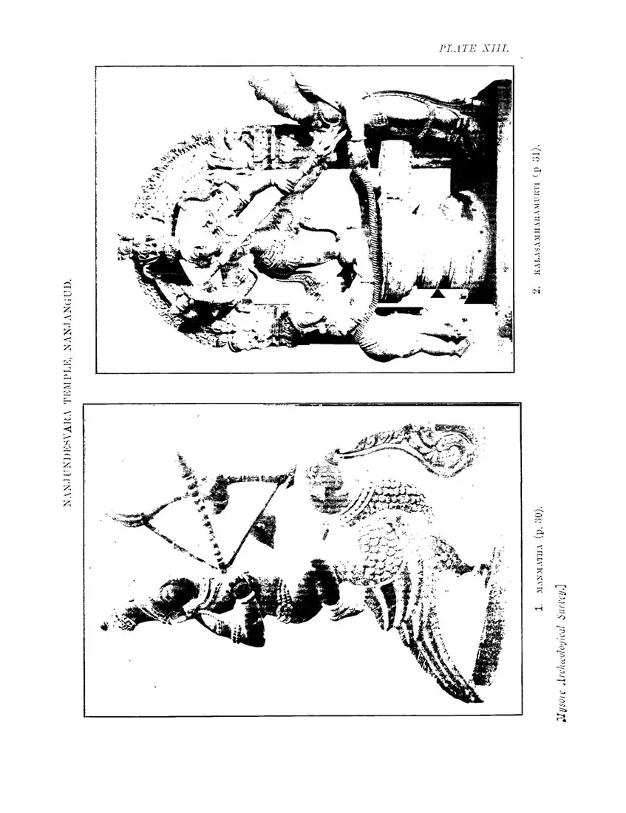
- MANMATHA (p. 30)
- KALASAMHARAMURFI (p. 31)
tions which are carried over the lintel also. The four central pillars inside the navaranga are of granite, bell-shaped and shortish. Their bases are cubical; but their shafts have the cylindrical, vase and wheel-shaped mouldings, with garland ornamentation on the cylinder. The central ceiling is deep and formed by two sets of corner stones placed one on another. A low pendant hangs from the centre of the ceiling.
In the navaranga is lying a very rude granite image of Lakshmīnarasimha bearing the vađgalai caste mark on its forehead.
The vestibule doorway is plain. Inside the vestibule is another Lakshmīnarasimha group similar to the above and as crude. The image is set up on a Garuđa pedestal.
Part III: Study of Ancient Monuments and Sites › Mandya District › SōmēnahallīVestibule and Garbhagrīha
The garbhagriha is empty. The original image seems to have been lost. Neither of the Lakshmīnarasimha images mentioned above can be the original image which once occupied the garbhagriha. These images are probably not earlier than the 17th century in date, while the temple, by reason of its similarity in style to the one at Rāghavāpura, can be ascribed to about the 14th century.
Part III: Study of Ancient Monuments and Sites › Mandya DistrictKembanahallī
Jaina Vestiges
No heading in the body: this section starts at its printed page (43).
In the hills beyond Kembanahalļi and on the way to Bōgāvi were found the broken parts of a colossal soapstone image of a Jaina Tirthankara which must have been about 10' high when it was intact. The workmanship of the image is ascribable to about the 12th century A.D. The image is said to have been set up in a temple at the northern end of the hill.
Part III: Study of Ancient Monuments and Sites › Mandya DistrictBōgāvi
Situation
The village of Bōgāvi or Bōgādi is situated at a distance of about 9 miles to the north-east of Honakere. Its original name according to inscription No. 100, Nāgamangala Taluk, was Bhōgavatī and the place seems to have been a prosperous Jaina centre with a Basti to the north-east.
Ruined Basti
History; General Description; Outer View; Porch; Navaranga
(Pl. XVII, 1).
The name of this Basti as given in inscription No. 100 Ng. is Śrīkaraṇa Jinālaya. The original structure (Pl. XVI, 2) which seems to have comprised of the garbhagriha, the open vestibule and the navaranga, the front porch possibly being added later, is said in the inscription to have been erected in 1145 A.D. by Heggađe Mādayya and endowed by Hoysaṇadēva.
History.
Of the original structure the garbhagriha and vestibule have been pulled down completely so that at present only the navaraṅga and the front porch of nine ankaṇas are existing. The material used for the building is entirely granite. The outer walls are raised on a basement consisting of four cornices which are all plain and square excepting only for the dentil mouldings which project upwards at intervals on the fourth cornice. The cornices on the west contain a long inscription of the 12th century A.D.
General description:
Outer view. The front porch of nine ankaṇas is borne on 12 pillars which have cylindrical shafts rising from cubical bases. There are stone benches on the east and west sides of the porch. Though there appear to have been three entrances to the porch, all the flights of steps have disappeared now. The ceilings of the porch are all flat.
Porch. The doorway of the navaraṅga is plain. The outer walls of the navaraṅga have collapsed. On the inside the pilasters are of the indented type. The four central pillars are of granite and bell-shaped. Only the central ceiling of the navaraṅga has a padma carving.
To the south of the Basti a soapstone oil mill is lying.
Venkaṭāchalapati Temple
The temple of Venkaṭachalapati lies about 50 yards to the south-west of the Basti and is inside the village. It is a modern structure and is architecturally unimportant.
Part III: Study of Ancient Monuments and Sites › Mandya DistrictPālagrahār
The Temples
No heading in the body: this section starts at its printed page (44).
About two miles to the north-east of the travellers' bungalow of Nāgamangala the village of Pālagrahār is situated. It contains three temples of which one was constructed about two years ago and the other two seem to hail from about the 17th century.
Of the older temples one is dedicated to Nāchchāramma and contains a metallic image of Nāchchāramma with a stone brindāvana. The other is a monocelled structure dedicated to Īśvara, and contains besides the linga the images of Gaṇēśa, Bhairava and a bull. In the modern temple, that is the one built about two years ago, there is a good stone image of Satyanārāyaṇa holding gadā, chakra, śankha and padma. It is said that this image was sculptured at Bangalore. In its workmanship, generally, western influence can clearly be traced. The set of metallic images viz. , of Rāma, Lakshmana, Sitā and Hanumān, kept in the temple does not call for any special remark since all of them are modern.
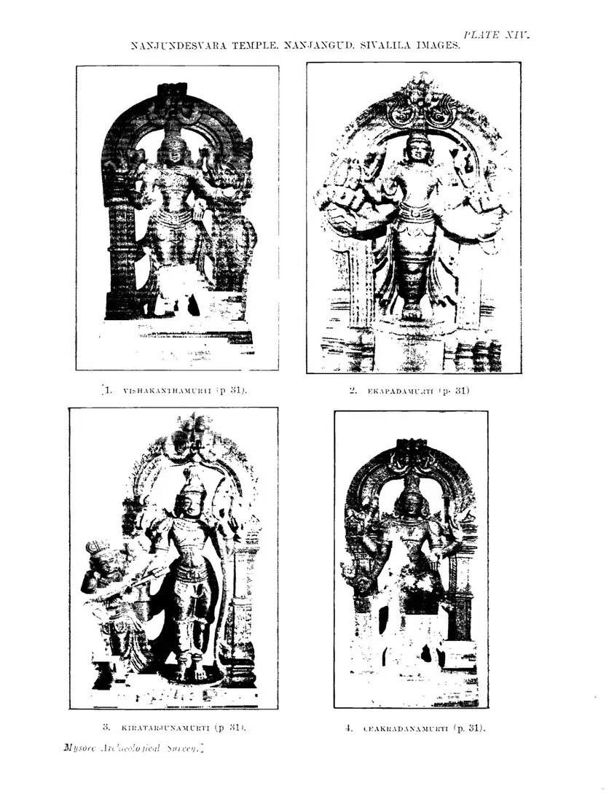
- VISHAKANTHAMURTI (p. 31)
- EKAPADAMURTI (p. 31)
- KIRATARJUNAMURTI (p. 31)
- CHAKRADANAMURTI (p. 31)
Part III: Study of Ancient Monuments and Sites › Mandya DistrictPaĉuvalpaṭṇa
Viragals; The Temples
At a distance of about seven miles to the west of Nāgamangala the village of Pađuvalpatna is situated in a valley of the hills. Excepting only for some of the vīragals collected in front of the village entrance, there is no monument in the village, which can be considered as architecturally important. Of the vīragals, several are small in size and unimportant. Among the larger vīragals which are only three in number and set up in small shrines built for them is one with really good carving. It has three panels of figure sculpture. In the bottom panel the hero fights his enemies with his bow and arrow. He wears a loin cloth and dagger-bearing girdle. He is ornamented with eardrops, necklace, armlets, wristlets and anklets. His hair is combed and tied up into a large knot behind his head. In the next panel the hero is being conveyed in a vimāna to the Kailāsa of Šiva. The vimāna is borne on two pillars having cubical bases and octagonal shafts. In the top panel the hero worships the linga.
Among the temples of the village the oldest is a structure which is of the 17th century and contains in its main cell a Ganēsa, a linga and some small figures. Another temple which is also of the same period enshrines a stone brindāvana as at Pālagrahār. On the four facades of the brindāvana are carved the relief figures of Hanumān, a saint (perhaps Rāmānujāchārya), the vađagalai castemark and Gōpalakṛishṇa. The worship of such brindāvanas seems to be very popular in these parts, though it is more or less prevalent in other parts of the State also. The existence of such brindāvanas is due to Šrīvaishṇava influence. Abou 50 yards to the north-west of the brindāvana is a small Šiva temple containing a linga and a Nandi in its garbhagṛiha. The outer walls are faced with rubble stones, while the inner walls reveal workmanship of the 17th century. The ceiling of the garbhagṛiha is rather deep, rising on two sets of corner stones and having a low lotus in the centre.
Dēvalāpura
Devalāpura is a hobli headquarter in the Nāgamangala Taluk. It is situated at a distance of about nine miles to the east of Nāgamangala.
Situation and Antiquity
Lakshminārāyaṇa Temple
History; General Description; Outer View; Navaranga; Vestibule and Garbhagrīha; Main Image; Lakshminarasimha Shrine
It is possible that the Lakshmî-Nārāyaña temple at the place is also of the same period as the inscription. (Pl. XVII, 3). At any rate
History.
its similarity in the style of its construction to the temple at Sõmenahalĵi suggests this view, so far as the garbhagriha, the vestibule and navaranga are concerned. Being built entirely of granite, the temple seems to belong to three different periods structurally. The garbhagriha, the vestibule and the navaranga which form the original structure were perhaps constructed early in the 14th century. The similarity of the front porch to the one at the Lakshmî-Nārāyaña temple at Rāghavāpura in the Gunđlupet taluk of the Mysore District, suggests that it is also possibly of the same period or perhaps slightly later in date. But the front gateway and the pillar are definitely said in Nāgamangala 79 to have been put up in 1472 A.D. by Chikka Allappa Nāyaka, son of Lakkanña Nāyaka, while receiving the village of Dēvalāpura from the Vijayanagar King Sāļuva Narasinga. The tower, however, which is of brick and mortar appears to be a work of about the 17th century.
The temple is built on a floating foundation. The outer walls of the original structure are raised on four basement cornices of which
General description:
the second from the bottom is octagonal. The walls are relieved by right-angled pilasters as at Sõmenahalĵi and have niches on the south and north of the navaranga and the vestibule, and on the south, west and north of the garbhagriha. These niches bear boat-shaped turrets rising on an eaves-shaped cornice which is ornamented with kīrtimukhas. The turrets are surmounted by kalaśas. The eaves which run all round the temple are straight-sided and have dentil projections upwards. The parapet, like the tower, is built of brick and mortar.
The front porch of the temple, as already stated, is designed and constructed like the one at Rāghavāpura. It is supported on four pillars each of which has a cubical base and an eight-sided and twenty-four fluted shaft surmounted by a wheel moulding and a square abacus. The porch is entered by three flights of steps on the east, south and north. The ceilings of the three ankañas of the porch are all flat except only the central one which has a padma carving in its centre.
The two pilasters on either side of the navaranga doorway have cubical bases, eight-sided shafts and plantain bud capitals. The door-
Navaranga.
way is plain with no dvārapālas. The hall is about 25 feet square. The four corner ceilings as also the one of the central square are a little deep, rising on two sets of corner stones with a low padma pendant in the centre. The central ceiling is borne on four pillars whose eight-sided shafts rise on cubical bases and are surmounted by
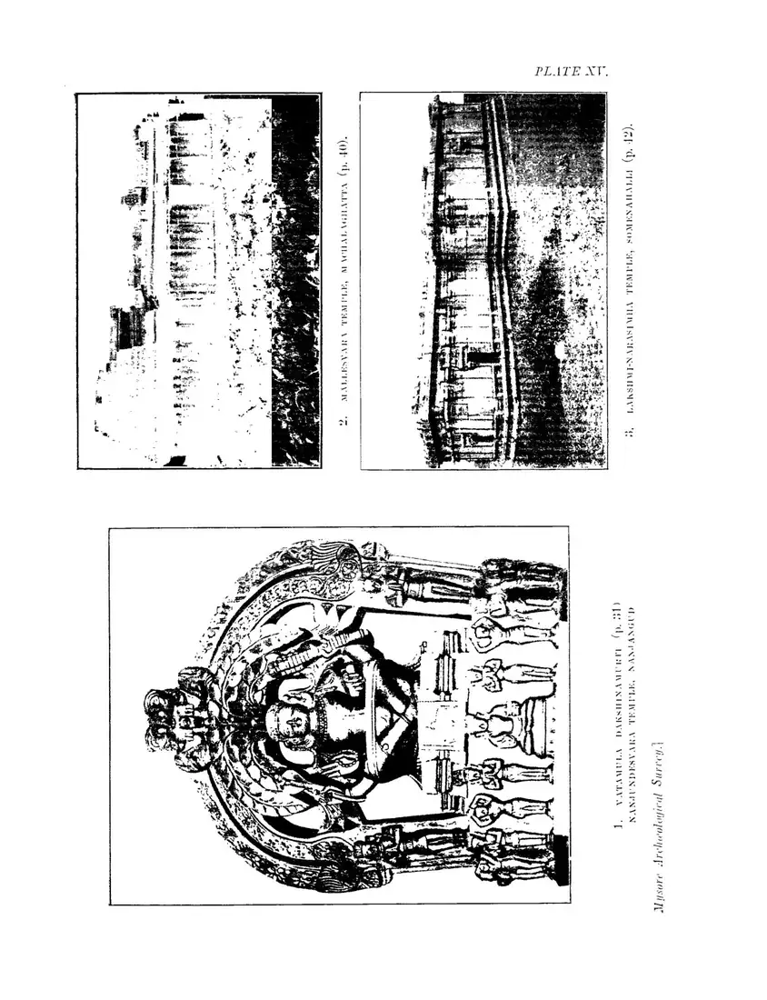
- VATAMULA DAKSHUNAMURU (p. 31)
- MADLESNYARA TEMPLE, MOHALAGHANTA (p. 40)
- LANSIDENARASIMHA TEMPLE, SOMESNAHALLI (p. 42)
wheel mouldings and square abaci. Against the south wall of the navaranga is a small rude figure of Ganēša which appears to have been brought from elsewhere.
The vestibule doorway is also plain. The ceiling of the vestibule is flat with a padma carving in the centre. The size of the vestibule is about 8 feet square. The garbhagriha doorway is also plain. But its ceiling is ornamented like the one of the navaranga.
Vestibule and garbhagriha. Inside the garbhagriha is seated the main god Lakshmī-Nārāyaṇa with the goddess Lakshmī on his left lap. He holds in his four hands the following attributes: sankha, padma, gadā and chakra (Pl. XXI, 1). The goddess who is seated turning towards the main god holds padma in her hands. On the prabhāvaļi appear in the convolutions of the scroll ornamentation the ten avatāras of Vishṇu. The group is well carved and is unmistakably Hoysaļa in workmanship. The main image is about 8 feet high including the pedestal. In the inscriptions the god is called Lakshmī-kānta. There is a stone kalaša in front of the god.
Lakshminarasimha shrine. Immediately to the north of the main temple of Lakshmī-Nārāyaṇa, there is a smaller temple dedicated to Lakshmīnarasimha which, having in recent years become dilapidated, has been completely rebuilt. Originally it seems to have contained only a garbhagriha and two vestibules, portions of which now remain though renovated greatly by brick and mortar work. A front hall has also been added in brick and mortar. The brick vimāna, too, is a recent construction. The outer walls of the original garbhagriha and vestibules have been raised on a basement consisting of three cornices of which the middle one is octagonal. The walls are relieved by right-angled pilasters.
As already stated, the gateway and the lamp pillar in front of the temple are the contribution by Lakkappa Nāyaka in 1472 A.D. But neither of them does credit to the art of the period.
Gateway and pillar.
Kōdi-Tirumaladēva Temple
Situation and General Description
Main Image; Age
No heading in the body: this section starts at its printed page (47).
At the north end of the tank of the village, there is a small hillock on which is built the Kōđi-Tirumaladēva temple. It faces south and contains a garbhagriha, a vestibule, a navaranga and a front porch. The outer walls which are plain are raised on a basement consisting of two cornices as at the Are-Timmappa temple near Bhīmanahaļļi. The tower above the garbhagriha is of brick and mortar. The four pillars of the porch have square bases and sixteen-fluted shafts. All the doorways of the temple are plain. The pillars of the navaraṅga are similar to those of the porch. The central ceiling of the navaraṅga is a little deep and raised on two sets of corner stones. The ceiling of the garbhagriha is also similarly shaped.
Inside the garbhagriha the god Kōđi-Timmappa stands on a rude padma pedestal. He is 2 feet high and is supported on either side by consorts. He holds in his four hands: abhaya, chakra, śankha and dāna.
The temple is architecturally unimportant and belongs to about the 17th century. On the west wall of the navaraṅga, there is a single line Kannađa inscription reading: Chika Thimmayya-naikaṇa . The characters are of the 17th century. The pillar in front of the temple has fallen down and is broken. The temple, too, is dilapidated.
Part III: Study of Ancient Monuments and Sites › Mandya DistrictKasalagere
Situation; General Description of Temple
About a mile to the south of Dēvalāpura is situated the small village of Kasalagere. A little distance to the south-east of the place, on the northern side of a tank, is a ruined temple of Kallēsvara.
This temple is a low roofed structure consisting of a garbhagriha enshrining a linga (about 2 feet high), a closed vestibule with a plain doorway and a navaraṅga in whose central aŭkaṇa are four granite pillars having cubical bases and shafts containing eight-sided, sixteen-flutel, octagonal and cylindrical mouldings.
In the navaraṅga are placed a mutilated and dwarfish potstone image of Sūrya, a potstone Nandi (bull) showing some good workmanship and a nāga stone. In the north-west corner is set up the inscription of Ballāla II (1190 A.D.). The navaraṅga doorway is low and plain.
The outside walls, the caves and parapet of the temple have all disappeared. The structure has no architectural importance excepting only its antiquity.
Outside the temple are three inscriptions of which two are engraved on vīragals. One of the latter mentions a basti of the time of Vishṇuvardhana. It is said that at some distance to the east of the Kallēsvara temple there stood a basti which has now disappeared.
Bhīmanahallī
Are-Timmappadēvaru Temple
Situation and History
No heading in the body: this section starts at its printed page (48).
About a mile and half directly to the south-east of Kasalagere is a hillock on which is built a temple for the god Śrīnivāsa, otherwise called Are-Timmappa . Are means a bañde or rock and since the god is consecrated on the rock, he is called Are-Timmappa .
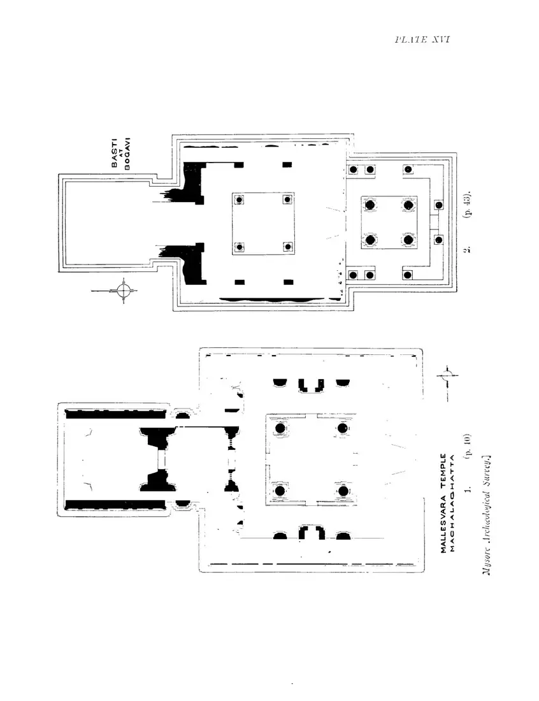
- (p. 10)
. The temple faces south and is entered by a low gateway in front of which there is a pillar. Structurally the temple belongs to two periods. The earlier building consists of a garbhagriha, a closed vestibule and a navaraṅga. Each of the four central pillars of the last portion has a cubical base and an eight-sided and sixteen-fluted shaft surmounted by a wheel moulding and a square abacus. These pillars are like those at the front porch of the Lakshmīnārāyaṇa temple at Dēvalāpura. The central ceiling of the navaraṅga is raised on two sets of corner stones. The outer walls are plain, those of the garbhagriha and vestibule being raised on a basement of two rude plain cornices. This portion of the building seems to belong to the 16th century.
To this original structure have been added a mukhamanṭapa and a pātālāṇkaṇa which appear to be the contribution of the Pālļegār period. The pillars of the mukhamanṭapa have, on their cubical mouldings, relievo figures of dancing dainsels, a monkey, Ugra-Narasimha, Veñkaṭēśa, lion, Kāliya, peacock, Hanumān, Gaṇēśa, Garuḍa, Vēṇugōpāla, etc.
The god Śrīnivāsa in the garbhagriha stands on a plain pedestal. He is about 3½ feet high and holds in his four hands abhaya with padma, chakra, śañkha and gadā. These attributes are of Janārdana, while Śrīnivāsa ought to have had his left lower hand on kaṭi . The workmanship of the image is also poor. Similarly the image of the goddess which is enshrined in a rude cell to the west of the main temple is poor and may be ascribed to the 16th or even the 17th century.
The temple is a popular institution in the locality and belongs to Bhīmanahalļi which is situated about a mile towards the south.
Part III: Study of Ancient Monuments and Sites › Mandya DistrictBhīmanahalli Village
Sōmēśvara Temple
History and Description
No heading in the body: this section starts at its printed page (49).
The Sōmēśvara temple in Bhīmanahalļi is a low-roofed structure of granite erected in 1229 A.D. by the three sons of a certain Kommeyar and hence called in the inscription (Ng. 98) as Kommēśvara.
The structure consists of a plain garbhagriha having in the middle of its inside west wall a plain eaves-shaped cornice. The doorway of the closed vestibule is plain. Each of the four central pillars of the navaranga has an eight-sided shaft rising on a cubical base. The central ceiling of the hall and those to its east and west are raised on two sets of corner stones.
The vestibule ceiling is designed like the navaraṅga central ceiling; but its central lotus is inset in a padma. The garbhagriha ceiling is like that of the vestibule.
7
Other Monuments
No heading in the body: this section starts at its printed page (50).
Inside the navaraṅga are found the following sculptures : a well-worked granite Nandi, a mutilated but graceful granite Bhairava and another fragmentary Bhairava.
In the north-east corner of the navaraṅga is set up the inscription Ng. 98 which is a composition of the poet Mallikārjuna, the author of Sūktisudhārnava ( see M.A.R. 1931) and the inscription at Basrāl which is a village only about 5 miles from here.
The outer walls of the temple have in modern times been faced with rubble and bricks in mortar. In front of the temple and facing it is a soapstone Nandi seated in the usual attitude. To the south-east of the temple are several potstone vīragals which indicate that the place was of some importance during the 13th century. Beside the vīragals are a stone lamp pillar and a potstone siđitalegallu as at Māchalaghatta. In front of the vīragals is a granite pillar about 20 feet high on a platform of rubbles. To the north-east of the temple are the remains of another ancient temple of which only the navaraṅga exists with its four cylindrical pillars of granite. To the south of the Sōmēśvara temple is a 17th century granite structure enshrining a soapstone image of Bhairava, about 4 feet high including its pedestal and tōraṇa. To further south is a rude structure of rubbles enshrining in its main cell a bull on a pillar (Kambada-Basava). Another unimportant structure to its south contains the image of Hanumān.
Part III: Study of Ancient Monuments and Sites › Mandya DistrictYelādaha!lī
Basti
Situation; History and General Description
About a mile to the south-west of Nelligere in Nāgamangala Taluk lies the village of Chōlasandra. A little distance to the north of the place stands on a rock a ruined Basti which is in the area of the bechirāk village of Yelādahalli.
The basti is a trikūṭāchala. (Pl. XVIII.) In front of it lies a large potstone slab with the inscription Ng. 76 (1145 A.D.) mentioning a grant to the temple by Narasimha I, the Hoysala king. History and general description. The original part of the temple appears to have been only the main cell with its granite basement and potstone walls standing with right-angled pilasters bearing bell- and pillow-shaped mouldings. (Pl. XVII, 2).
At a slightly later date, the east and west cells appear to have been added with their potstone basements and pilastered walls bearing corniced and towered shallow canopies. There appear to have been towers above all the three cells. These have now disappeared. The east and west cells have lion-headed sōmasūtras, while the north cell has no sōmasūtra. The eaves are straight-sided with dentil projections
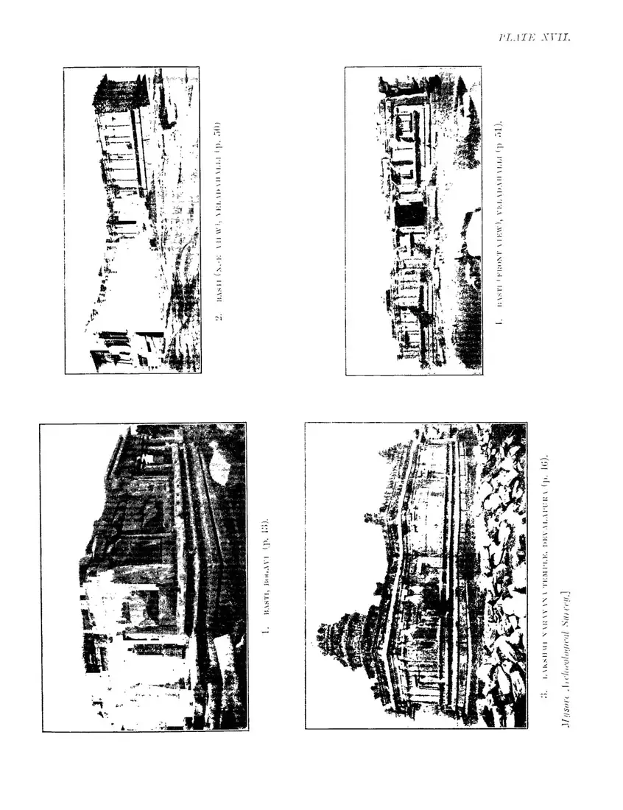
- BASTI FRONT VIEW, VELADAHALELI (p. 51))
- BASTI, BOGAVI (p. 13))
- BASTI (N-E VI W, VELADAHALELI (p. 50))
- LASHMI NARAYAN TEMPLE, DEVALAPERA (p. 16)) Missore Archeological Survey ]
upwards. In addition to the right-angled pilasters on the outer walls of these cells there are also cruciform pilasters. One of the cornices has dentil mouldings.
A small porch appears to have stood in front of the temple (Pl. XVII, 4) leading to the navaranga of four pillars with a ceiling bearing a fine large relievo padma. The porch, the navaranga pillars and ceilings have all been removed elsewhere along with the images of the temple. All the three vestibules of the temple are open. The ceilings of the vestibules are all of the same pattern and raised on two sets of corner stones.
The east and west cells have jambs with cruciform ornamental pilasters, lintel cornices and seated Jina lintels. The doorway of the main cell is plain except for the floral ornamentation on the jambs.
Part III: Study of Ancient Monuments and Sites › Mandya DistrictDodjetka
Hūmēśvara Temple; Kēśava Temple
Dodjetka or Jeťiga of the inscriptions (Ng. 12 and 15) is situated at a distance of about four miles to the south-east of Nelligere Travellers Bungalow. It has two temples dedicated to Kēšava and Hēmēšvara respectively. The latter has five inscriptions—Ng. 12—15 and a newly discovered one to the east of the navaranga doorway.
HĒMĒŠVARA TEMPLE.
The Hēmēšvara temple has a small garbhagriha with a linga, an open vestibule with a small Nandi and a small navaranga with four potstone pillars of the cylindrical type and a flat padma ceiling on two sets of corner stones each of which has a rosette on its lower surface. The navaranga doorway faces south as in several Hoysaļa agrahāra villages.
The outer wall of the temple is also of potstone and is ornamented with right-angled pilasters with no other important feature. An inscription on a beam in the navaranga states that the temple was constructed in 1179 A.D. by Dummeya Nāyaka, a Hoysaļa Officer (Mahāsāmanta).
KĒŠAVA TEMPLE.
The Kēšava temple is situated in the centre of the village. It is a late Vijayanagar structure of granite, largish in size but poor in art. Inside the garbhagriha there is a small Kēšava image (2½ feet high) on a Garuđa pedestal. The pedestal and the image both appear to be poor Vijayanagar period imitations of old Hoysaļa work.
The temple has a garbhagriha, a closed vestibule and a navaranga with four octagonal pillars, each having cubical mouldings, which are well dressed but without ornamentation. There are a mukhamaņtapa and a pātāļānkaņa of six tall octagonal pillars in front.
The temple is unimportant from the architectural point of view.
35 overgrown with bushes, etc., and stands amidst rice fields. In its garbhagriha are two potstone images, of which one is a two-handed Vīrabhadra. In the ruined navaranga are some mutilated images of potstone of which one is Vishnu. An image of Mahishāsuramardinī with a Hoysala inscription (Pl. XXI, 2) lies to the south of the tank bund by the side of a Garuđa pedestal. This image undoubtedly belonged to the temple and is a good piece worthy of being preserved in a museum.
Mudigere
Kallēśvara Temple
History and Description
Lakshmī Temple; Ganga Inscription
Part III: Study of Ancient Monuments and Sites › Mandya DistrictĀraṇī
Virabhadra Temple
Images
Gōpālakrīshṇa Temple
Older Temple in the Area; Later Structure
The temple of Göpālakrishṇa in the village is built of granite and seems to belong to about the 15th century. To the south of the temple is an older structure of soapstone of the Hoysala period in whose garbhagriha there is a Garuđa pedestal.
The image itself is missing. It seems that when the image was lost and the temple became dilapidated the later temple of granite was constructed and a fresh Vēnugōpāla was consecrated during the 15th century. The earlier temple has its outer soapstone walls ornamented with right-angled pilasters. The ceiling of the navaranga has now fallen; originally it had a fine padma carving, even finer than that at Yelādahallī.
The later granite structure consists of a garbhagriha, two closed vestibules of which the outer one has two side cells as at the Tapasirāya temple at Dēvarahallī, a navaranga and a front porch.
The outer walls are plain and have sharp eaves. The front porch is borne on four pillars each of which has a cubical base with hooded projections at the upper corners and a shaft with the sixteen-sided, vase and wheel mouldings and with floral and garland designs.
The navaranga doorway has on its lintel the image of baby Krishṇa on fours. The pillars inside the navaranga are like those in the porch; but on the cubical base of these pillars appear the relievo figures of Kāliya, lion, Ganēsa, Bālakrishṇa, Garuđa, peacock, kalaša, parrots and Sarasvatī. The last is a four-handed image holding rosary, padma, padma and book. The central ceiling of the navaranga is deep and raised on two sets of corner stones with a lotus pendant inset in a padma. In the navaranga are kept the images of Ganēsa and Mahishāsuramardinī both of which show good workmanship, though the material used is granite. The image of Mahishāsuramardinī stands under a tamāla tōraṇa. She is eight-handed and spearing the mahisha which is well carved. The workmanship shows that the carving has been in imitation of Hoysala specimens; but the face of the goddess is a little ugly showing wide bulging out eyes, broad nose, chubby cheeks and protruding lips.
The outer vestibule doorway is guarded by Vaishṇava dvārapālas. Inside the garbhagriha stands on a Garuđa pedestal the image of Göpālakrishṇa (about 6 feet high including the pedestal), rather poorly worked though in imitation of Hoysaļa sculptures. Above the head is a five-hooded Ādi-Šēsha. The image is definitely of the Vijayanagar period. The ceiling of the garbhagrīha is raised on two sets of corner stones.
Part III: Study of Ancient Monuments and Sites › Mandya DistrictDađaga
Dadaga or Dađiganakere of the inscriptions is a small village about four miles to the west of Nelligere. It appears to have been an agrahāra in the Hoysaļa days. It has two Hoysaļa temples dedicated to Chennakēšava and Šōmēšvara, both of which now stand to the north of the present village.
Chennakēśava Temple
History and General Description
Sōmēśvara Temple; Virabhadra Temple
No heading in the body: this section starts at its printed page (54).
The Chennakēšava temple appears to have been constructed in three stages.
The original Hoysaļa temple is a plainish potstone structure with a square garbhagrīha containing an image of Chennakēšava about 5 feet high. The main image is also comparatively without the elaborate ornamentation of the usual Hoysaļa work and with a conical kiriťa indicative of the 14th century.
(Pl XIX,3). But the tōraņa is of the same stone as the image and bears the ten avatāras after the usual Hoysaļa fashion with the fish, etc., in the animal form and the seated Buddha holding šankha and chakra. The Garuđa pedestal is also of Hoysaļa workmanship. All these suggest the date c. 1300 A.D., while the name Sōmēšvara of the Šīva temple suggests fifty years earlier.
The brick tower or the vimāna which is much ruined is of the Vijayanagar period as seen by the squarish bricks, etc. The ceiling of the vestibule has a fine padma design in relievo inset inside a square. The images of Nanmāļvār and √ Rāmānuja are of course of the Vijayanagar period.
In front of the vestibule extends a ruined navaranga having eight cylindrical, chiselled pillars of potstone, the navaranga being five ankaņas long and three broad. The inscriptions on the easternmost doorway ankaņa beam prove that the temple was extended in C. 1400 A.D. in the days of Harihara. But the navaranga is completely of potstone including its doorway, while the old mukhamaņtapa of three ankaņas with its chiselled neckless cylindrical granite pillars and shallow padma inset into a Šrīchakra in the central ankaņa show imitation of Hoysaļa work.
The large pillared pātālānkaņa with its northern manťapa and a now disappeared kaisāle verandah around the temple are granite structures probably of the Vijayanagar times. The three central ceilings of the navaranga have been raised each on two sets of corner stones with padma pendants in the middle.
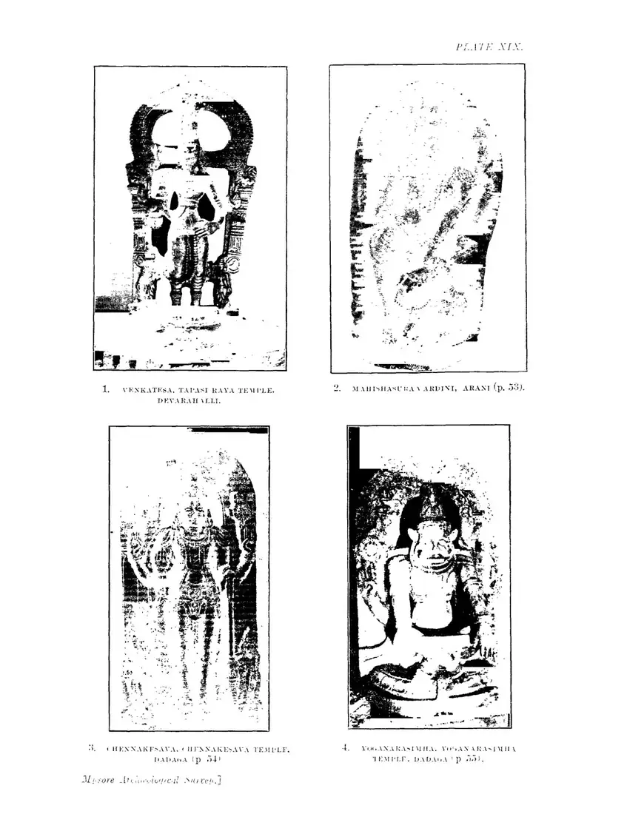
- VENKATESA, TAPASI RAYA TEMPLE DEVARAHALLI
- MAHISHASURAV ARDINI, ARANI (p. 53)
- CHENNAKESAVA, CHINNAKESAVA TEMPLE DADAGA (p. 54)
- YOGANARASIMHA, YOGANARASIMHA TEMPLE. DADAGA (p. 55)
Cited in the text: p. 55 ↩
There is nothing much interesting in the temple architecturally except the main image.
SĀMĒŠVARA TEMPLE.
The temple of Sōmēśvara is built of granite and now in ruins. In its garbhagrīha is a potstone linga of the Hoysaļa period. In the manṭapa in front are a broken Nandi and a granite Bhairava image. The temple is architecturally unimportant.
VĒRABHADRA TEMPLE.
The Vīrabhadra temple also is unimportant. It is a structure of the Pālļegār days with a rude stone image of Vīrabhadra in the garbhagrīha. In the vestibule are a bull and Ganēśa. In the navaranga there are two images of which one is Hayagrīva.
Yōga-Narasimha Temple
Old Temple; Main Image
At the south end of the village is a modern brick structure covering an old temple of Yögā-Narasimha. The four pillars of the navaranga appear to belong to the 11th century A.D. The pillars (Pl. XXI, 2) which are small contain the rudimentary bell, vase and wheel shapes similar to those in Noņavinakere and the Rāmēśvara temple in Narasamangala. The front porch of the temple is borne on neatly chiselled octagonal pillars as at the Chōlēśvara temple in Noņavinakere. At the south-east corner of the temple on the outside can be seen the original basement stone cornices of which one has the kīrtimukha mouldings. On the central ceiling in the navaranga a padma is carved in relief.
The temple appears to belong to the Chōļa period —C. 1020 A.D. The name Dađiga suggests the Ganga king of that name; but nothing has yet been found definitely of that period in the village except the tank which bears the name Dađigana kere .
The main image of Yögā-Narasimha (Pl. XIX, 4) which is much coated with ancient wax needs to be cleaned. It is a good piece of sculpture reminding us of the Narasimha image at Agara in the Yeļandūr taluk. The god sits in yögāsana with his knees tied up in a yögapaiṭa or band, his fore-hands resting on the knees while the hindhands hold the chakra and šankha by two fingers. The face and mane are well worked, the former having a peaceful look. The conical kīrīta with its band of beaded hangings at the top reminds us of Chōļa workmanship.
Main image.
Śāntinātha Basti
In the Sāntinātha basti the image is fine and about 2\frac{1}{2} feet high with a well worked tōraṇa behind. It is said that it was brought from the Heggaddevankote taluk. The basti is however a recent structure.
Part III: Study of Ancient Monuments and Sites › Mandya DistrictKōdīhallī
Dađigēśvara Temple
Antiquity; Liñga and Images
About 2\frac{1}{2} miles to the south of Dađaga and on the side of the waste weir of the tank called Dađiganakere is situated the temple of Dađigēšvara which belongs to the village of Kōđihaļli. Though the outside walls are of brick and mortar suggesting their modern construction, the pillars of the navaranga which have cubical and eight-sided mouldings look very much like the specimens of the 11th century. It is very probable that this temple is of the same date as the Yōga-Narasimha temple at Dađaga; but it appears still more likely that this temple, if not also that of Yōga-Narasimha at Dađaga, belongs to the period of the tank which, like this temple, bears the name of Dađiga, the Ganga king. Thus there is room to think that the tank and the temples of Yōga-Narasimha and Dađigēšvara on either side of the tank are of the Ganga period, though the fact cannot as yet be established.
The Dađigēšvara temple consists of a garbhagriha, an open vestibule and a navaranga. The garbhagriha ceiling only has a padma carving. The linga inside the garbhagriha is large and very probably Ganga in type. It recalls to mind the old lingas at Nandi and Narasamangala.
Linga and images. The linga inside the garbhagriha is large and very probably Ganga in type. It recalls to mind the old lingas at Nandi and Narasamangala.
In the navaranga are kept the following images: Nandi, Sūrya, Nāga stones and Gaṇēša. The Sūrya image has a horse-shoe tōraṇa on which there is creeper ornamentation.
Part III: Study of Ancient Monuments and Sites › Mandya DistrictHalĵada Hosalĵi
On the way to Kelagere from Kōđihaļli at a distance of about a mile and half from the latter place is the tiny village of Haļlada-Hosaļli which contains several vīragals of about the 14th and 15th centuries. Among these memorial stones was found a peculiar Sati stone having three friezes of sculptures, each frieze containing three panels. The description of the friezes and their panels is as follows:
Bottom Frieze:
1. A plantain tree.
2. A figure with uplifted sword.
3. A lady with something in her right hand—lemon (?).
Sati Memorial
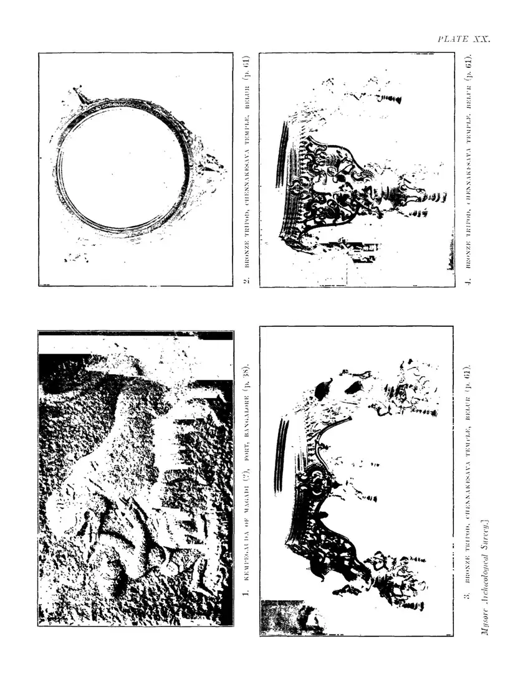
- KEMPEGADA OF MAGADI (?), FORT, BANGALORE (p. 38)
- BRONZE TRIPOD, CHENNAKESAVA TEMPLE, BELUR (p. 61)
- BRONZE TRIPOD, CHENNAKESAVA TEMPLE, BELUR (p. 61)
- BRONZE TRIPOD, CHENNAKESAVA TEMPLE, BELUR (p. 61)
Middle Frieze :
1. Attendant lady.
2. Seated lady— Sati .
3. Attendant lady.
Top Frieze :
1. Nandi on piṭha.
2. Linga.
3. Lady with lotus and kalaśa— Sati .
Above the linga is a kīrtimukha flanked by the Sun and Crescent. Between the kīrtimukha and the crescent is a three-line Kannaḍa inscription which appears to belong to the 14th century.
Part III: Study of Ancient Monuments and Sites › Mandya DistrictKeļagere
Kelagere seems to have been a place of considerable importance and antiquity.
The old name of the place was Kellangere. During the
Ancient Jaina Place. Lofty Gāruđa Pillar
To the east of the village is a lofty pillar called ‘Garuḍagamba’ by the villagers.
It is an important Jaina monument mentioning several
Lofty Garuda pillar. Jaina monks. It is about 20 feet high and stands on a platform of rubble stones. It has a square base and a shaft having the eight-sided, cylindrical, vase and wheel mouldings. The top of the pillar consisting of the capital, the abacus and the elephant on it has been brought down. This portion of the pillar is now kept apart. The elephant is a ridden one like those met with at Agrahāra Bāchaḥi and explains why this pillar, like them, is also called Garuḍagamba by the villagers. On three of the four faces of the base of the pillar is engraved a large Jaina inscription.
Mallikārjuna Temple
Across the tank of the village stands the temple of Mallikārjuna which appears to be a structure of the 14th century. The building is
History and Description
The temple consists of a garbhagrīha, a vestibule and a navaraṅga. Each of these has a deep ceiling raised on two sets of corner stones. There is a pendant inset in a padma in each of the ceilings. The four pillars of the navaraṅga are well chiselled with the bases square and the shafts having the eight-sided, sixteen-fluted, vase and wheel-shaped mouldings. The abaci are square and have dentil mouldings
8 downwards at the corners. The navaraṅga doorway has on the lintel a linga with a Nandi on either side.
The temple has lost all its original sculptures and the linga. In the navaraṅga is lying another inscription of Varadappa.
Part III: Study of Ancient Monuments and SitesShimoga District
Hodigere
Shāji's Tomb
Shāji's Kingdom; Shāji's Death; The Inscriptions; Antiquities of Hodigere. Kannađa Bakhar; Marāthi Corroboration
(PL. XXI, 3 AND 4).
It is well known that when Shāji, the father of Sivaji, led the armies of Bijapur into the Kannada and Tamil countries and annexed Bangalore, Kolar, Jinji, Tanjore and other places, the Adil Shah of Bijapur conferred upon him these southern territories with the title of “Rāja.” Thus Shāji became a rāja of the Karnāṭak territories. Shāji's kingdom was subordinate to the Adil Shah and consisted of tracts extending from the Shimoga District in the south-easterly direction towards Tanjore. This kingdom was later on inherited by Shāji's younger son Ekoji, the elder son Sivaji having carved out a kingdom for himself near Poona.
Rāja Shāji appears to have engaged himself in his last years in consolidating these territories and perhaps rounding them off. It was during this period that an accident brought about his death. The event is thus narrated in Grant Duff's History of the Mahrattas. (Vol. I, 1912, p. 160).
“On Sivajee's return he heard of the death of his father, which happened by an accidental fall from his horse, when hunting. in January 1664, at the village of Buswuputtum, on the banks of the Toongbuddra, near Bednore, where he had joined the Beejapoor army to assist in reducing some refractory zumeendars.” This account has been repeated in Prof. Balakrishna's account of Shāji's death in 'Sivaji, the Great,' Vol. I. and by other writers. It is found to be incorrect in some respects since the Brindāvan and the epitaph of Rāja Shāji have been found now. A great deal of historical material has now been made available in Marathi and we find the correction corroborated fully.
In the course of a tour in the Chennagiri Taluk of the Shimoga District of the Mysore State, it was discovered that the place of Shāji's death was really Hodigere, 6 miles to the east of Chennagiri, 12 miles to the west of the Holalkere railway station and a mile to the north of the Bhadravati-Chitaldrug road. It is 25 miles from
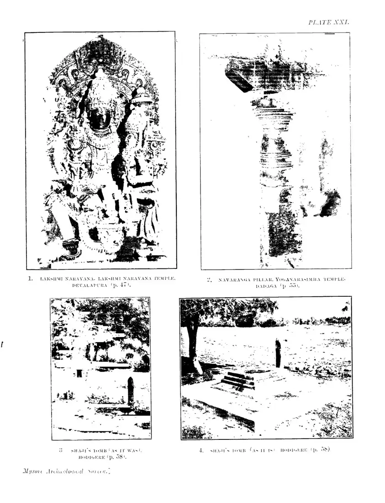
- LAKSHMI NARAYANA. LAKSHMI NARAYANA TEMPLE DEVALAPURA (p. 471)
- NAVARANGA PILLAR. YOGANARASIMHA TEMPLE DADAGA (p. 550)
- SHAJI'S TOMB (AS IT WAS) HODIGERE (p. 581)
- SHAJI'S TOMB (AS IT IS) HODIGERE (p. 58)
Basavāpaṭṇa. Shāji's Brindāvan or tomb was also found along with indisputable epigraphic evidence of its identity in the shape of an inscription in the Kannaḍa language and Kannaḍa characters worded thus:—
First line .... Śrī Shāji
Second line .... Rājana sa .....
After 'sa' the stone is broken. The original word was evidently 'samādhi' as on Rāhut Rāmappa's epitaph which is close by. This stone was shown by the local Kazi, Mr. Burhanuddin, and was also seen by the local Amildar.
Hodigere is now a small village containing a few antiquities like the Bhavāni temple, the Rachiram well, etc., belonging to about the Antiquities of Hodigere. 17th century. The sowcar of the place, Mr. L. Mallappa Setty, has with him certain old costumes of the Maratha period. To the north-west of the village, is a tank to the north of whose bund stands an old hanyan tree by the side of the cart-track leading to Yergāṭnahalli. The field just to its north appears to have been an old burning ghat and it has yielded at least two epitaphs. One of these reads 'Rāhuta Rāmappana Samādhi' and is evidently that of Rāmappa, a cavalry officer.
An enclosed portion of the field now used as a kaṇa for stacking hay by the local Nāḍiga, Mr. Subbanna, is pointed out as the "Lāyada Hola" or the stable's field—perhaps Shāji's stables. In the middle of the field is a low platform of brick and mortar about 9'×8'×1'. A tapering stone pillar stands near the head with a lamp niche carved near its top. A little to its east is said to have stood a stone slab with an inscription. This slab was removed from the place about forty years ago and used as a covering slab for the waste weir of the tank. After considerable search, the slab was discovered by the local Kazi, Mr. Burhanuddin. It was found to contain the inscription mentioned above in Kannaḍa meaning "This is the tomb of Shāji Rāja".
The villagers state that Mr. Nāḍiga Gangaṇṇa who was then living had a Kannaḍa Bakhar with him in which the local history, Shāji's death, etc. were all described. The book was taken away about thirty years ago by some Co-operative Inspector and was not returned. It is said that while Shāji was camping at Hodigere, wild beasts gave much trouble in the neighbourhood. The rāja, who was about sixty years old, went out on horse back to hunt these creatures. In the course of the hunt his horse's leg was caught in a hole in the ground and both the horse and the rider fell. Shāji became unconscious and died.
The local people mention that about 30 years ago, a scholar by name Mr. Patawardhan of Poona visited the place and collected the available information. In reply to an enquiry from the Mysore Archæological Office, Prof. Dutto Vaman Potdar,
Marathi corroboration.
Secretary, Bhārat Itihāsa Samśōdhaka Maṇdal, Poona, kindly referred to a Marathi paper of the late Mr. Panduranga Narasimha Patawardhan of Poona published in the annual report of the Maṇdal for 1915-16. The paper confirms the information noted above and states that according to the land records of Hodigere, the samādhi was being worshipped till 1733 A.D. Originally the village of Yergāṭanhalli was assigned for this worship. Mr. Patawardhan was led to the discovery by the narrative of Shāji's death given in Jedhe's Marathi chronicle.
As mentioned by Jedhe, the date of Shāji's death was Saturday, the 6th of Māgha śuddha of the year Śubhakrīt corresponding to the śaka year 1585. This corresponds to the English date 23rd January 1664.
Shāji's funeral was conducted by Ekoji to whom the Adil Shah gave his father's mansab. Sivaji heard the news soon after the sack of Surat and at the place of his father's death got a pavilion or chatri put up. Adil Shah gave a sannad granting Yergāṭanhalli for maintaining worship at the pavilion. The latter appears to have been more a memorial brindāvan erected over the ashes of Shāji. Sardesai has referred to this event in his 'Marathi Riyasat,' page 82.
Part III: Study of Ancient Monuments and SitesKadur District
MUDIGERE TALUK.
Durgadaha!lī
Kālabhairava Temple
Situation; General Description
The temple of Kālabhairava is situated at a distance of about two miles from the village Durgadahalli. A road runs from Durgadahalli to the Horikan Estate and from this road a footpath leads to the temple. The temple is situated in the midst of a jungle with no habitats nearby. A road leading from Uppinaṅgađi in South Canara District to Kaĵasa, called Kađadakallughāt road, once used largely for traffic, runs near the temple. The road is now only a foot-path used by a few pedestrains from Uppinaṅgađi side. The travellers by this ghat road once worshipped in the temple but there are not many devotees now.
Situation.
Situation.
The temple of Kālabhairava is situated at a distance of about two miles from the village Durgadahalli. A road runs from Durgadahalli to the Horikan Estate and from this road a footpath leads to the temple. The temple is situated in the midst of a jungle with no habitats nearby. A road leading from Uppinaṅgađi in South Canara District to Kaĵasa, called Kađadakallughāt road, once used largely for traffic, runs near the temple. The road is now only a foot-path used by a few pedestrains from Uppinaṅgađi side. The travellers by this ghat road once worshipped in the temple but there are not many devotees now.
The temple is built of rough stone slabs and consists of a garbhagriha with a vimāna, a vestibule, a navaraṅga ĵand a mukhamaṇṭapa.
General description.
General description.
The vimāna above the garbhagriha is shaped like a stepped pyramid with the figure of a kīrtimukha. The area of the garbhagriha and the vestibule is roughly 20' \times 12' ; the navaraṅga is about 20 feet square and the mukhamaṇṭapa 10 feet square.
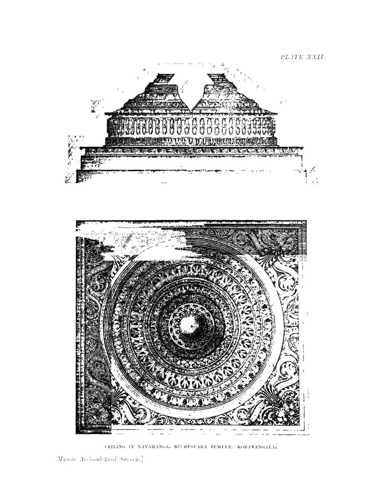
- CEILING IN NAVARANGA, BUCHESVARA TEMPLE, KORAVANGALA
The garbhagriha has a lotus carved in the ceiling. It enshrines the image of Bhairava which is about 4 feet high above the pedestal. It has a peaceful appearance and holds in the four hands the usual sword, drum, trident and kapāla. The vestibule is plain and contains two stone images of Gaṇapati or Byāṭarāya and Pārvatī-Paramēśvara all of which are rudely carved. The navaraṅga has the usual bhuvanēśvari supported on four stone pillars. There is a lotus bud in the centre of the ceiling. The pillars are roundish and not well-carved and seem to belong to the Vijayanagar times. The rough sculptures on them include Gōpālakrīshṇa, nāgabandha, purushāmṛiga, etc.
No inscriptions are found in the temple; nor is there any reference to it available in the published records so far. Local tradition ascribes the consecration of the image to Paraśurāma, and the construction of the temple to Jakkaṇāchāri, while the daughter of a Ballālarāya is said to have endowed the temple with 9 varahas from the interest of which 9 khaṇḍugas of paddy were to be used for the amṛitapaḍi of the temple.
Part III: Study of Ancient Monuments and SitesHassan District
Bēlūr
Bronze Tripod
No heading in the body: this section starts at its printed page (61).
Among the old metallic objects preserved in the Chennakēśava temple at Bēlūr, one of the most interesting is a bronze tripod, about 1 foot high, which is an offering of Kumāra Lakshmīdhara Daṇdanāyaka, a Hoysala Officer. It is one of the very few metal objects known definitely to belong to the Hoysala period and illustrates that the art of metal work during the period was as much advanced as stone work and that it closely followed the same traditions. (Pl. XX, 2, 3 and 4). Each of the three legs of the tripod consists of three groups of figures arranged in an ascending order thus :—
1. The bottom, that is the foot proper, has three metallic bells in between which are two human figures—one male and another female—in dancing attitudes similar to those in the stone bracket figures under the eaves of the main temple. In between the figures again and also linking them up above extends, all round the tripod, a fine creeper scroll.
2. Next is worked a pedestal on which stands a dancing male or female flanked on either side by dancing drummers.
3. From behind the figure on the pedestal runs on either side a symmetrical combination of floral, bird and animal ornamentation : from the beak of a swan issues forth a creeper above which is a long-tailed lion surmounted by more floral ornamentation. The creepers form floriated arches by meeting between the legs of the tripod and terminating in a beautiful lotus bud in the middle of the arch.
4. Between the creepers and the upper circular band, is a panel of ornamental swans inset in an outer panel of Gaṇḍabhēruṇḍa figures.
5. The upper circular band itself has below it a row of hanging lotuses which are smaller than the pendants in the middle of the arches formed by floriated creepers as mentioned above.
6. On the flat surface of the circular band is the inscription, in Kannaḍa characters, of Kumāra Lakshmīdhara Daṇḍanāyaka.*
For the inscription see Part VI of the Report
Part IV: Excavation
Chitaldrug District—The Brahmagiri Site
THE BRAHMAGIRI SITE.
A Survey before Excavation. PAGE
Aśōka's Edicts in Mysore; Isila; The Country; Brahmagiri and the neighbourhood; Later Structures; Limits of Isila; Cromlechs; The inhabited areas
The decipherment of Brāhmi inscriptions by Prinsep and their collection by Cunningham led to the discovery, among other things, of Asoka's edicts in Mysore. the life-history of Aśōka Maurya and his greatness as a man and a ruler. But his empire was believed to extend only to the Narmada-Mahānadi line. In 1892 came the stirring discovery by Mr. B. L. Rice of three copies of Aśōka's minor rock edict No. 1 in the northernmost extremity of the Mysore State, abutting into the Bellary District. It is learnt that on the last day of the tour in the summer of 1892, some shepherd boys led the Mysore Archæological Office party to a large boulder known as 'Aksharada-guṇdu' near the north end of the Brahmagiri hill in the Molakālnuru Taluk. When Mr. Rice read the inscription on it, he discovered that it was a command issued by the Emperor Aśōka to his own subjects. Thus was established the fact that the Mauryan Empire under Aśōka extended into the Mysore State and included the larger part of the Deccan. Subsequent discoveries at Maski, Koppal and Erraguđi have confirmed this discovery. Our doubts are now only about the dates of the commencement and the end of Mauryan rule in the Deccan. Even for this we have other indications which go to show that in this part of the Deccan, Mauryan rule occupied a period of nearly three generations approximately between 298 and 220 B. C.
The Brahmagiri inscription, and the other two so far as they are preserved, record the transmission of the royal edict from the officers of Suvarṇagiri to those of Isila. The former city is believed to have been the capital of the Deccan province, while Isila was probably the headquarters of a local division. The question naturally arose as to where this Isila was situated. Since the three Mysore inscriptions of Aśōka are close to each other, forming almost a triangle with a base of about three miles and a median of about half a mile, it was clear that a search for the town had to be made in this neighbourhood. Though no structures or other monuments were visible on the surface, a careful study of the ground went to show that an extensive town of about the Mauryan times had flourished in the neighbourhood of the Brahmagiri inscription.
The traveller from Chitaldrug to Bellary meets near Hangal and Molakālmuru The country. a range of rocky hills with an arm lying more to the north and connecting with the range near Bellary. These hills are formed of huge masses of gneiss and granite of varying quality on which rain and sunshine have beaten for ages, splitting the rocks into great boulders, huge tors and slabs of monstrous shapes and sizes. In many places these have been thrown in heaps on the hill sides presenting an almost artificial appearance, like a heap of stones piled up by man. In other places the bare backs of the rocks have been exposed for receiving another instalment of splitting and powdering. The country around the hills is formed either of gravel brought down by rainwater and deposited in a hard bed, or of loose ashy earth thrown into the valleys and pits in the gravel bed and formed perhaps as a result of prehistoric volcanic ashy formations.
In the midst of this district which is studded with hills and hill-ranges and to the north of the Molakālmuru and Nunke hills lies the Brahmagiri hill shaped like a scorpion with its nose and summit to the north and its sloping and tapering tail to the south. Like its projected claws lie the 'Emme Tammana guṇdu' to the north-west and the 'Girihalli rocks' to the north-east. Just beyond these from west-south-west to east-north-east stretches the sandy bed of the Sanṇa Hagari river, with a perennial flow of water mostly hidden by the sands. About two miles to further north lies the Jaṭingi Rāmēśa hill in two masses of granite connected by a saddle. The lower or western one has the famous temple of Rāmēśa whose surroundings are connected with the tradition of Śrī Rāma's search for his abducted wife, while the higher hill or Hire Jaṭingi Rāmēśa has a Uchchangi Pāṇdya inscription and a small Śiva temple on its top. From a distance on the south the upper part of this hill presents the appearance of a colossal hawk, fallen on the hill with its wing half severed and its eyes running with tears, all in mortal agony. Possibly this was recognised as the body of Jaṭāyu, the heroic bird which was martyred in its efforts to rescue Sitā from Rāvaṇa's flying chariot.
On the plain between Brahmagiri and Jaṭinga flows the Sanṇa Hagari, which must have of old been, as to-day, the chief source of water-supply and irrigation to the neighbouring lands. The modern villages of Siddāpura, Nāgasamudra and Virāpura, Kādu-Siddhana-Maṭha, Hanumāpura, Hoskōṭe and Roppa are now maintained by the Sanṇa Hagari. If the populations of these villages could be collected together near the Brahmagiri hill, there would perhaps be a decent enough town corresponding to ancient Isila.
The right bank of the river Sanṇa Hagari is lower and better irrigated than the left one and here beyond a stretch of rice fields extending about a mile in width and perhaps five miles in length, rise the hills. The narrowest part of the cultivated strip almost marks the nose of the hill. On either side of the
Brahmagiri and the neighbourhood. inscription stretch two narrow moundy slopes each triangular in shape with its vertex near the inscription and its tail stretching like the tail of a comet to a distance of six or seven furlongs, the eastern one being slightly larger. Each of these two slopes is cut up by water-courses into mounds some of which rise to a height of about thirty feet from the irrigated level. The eastern slope has particularly the Uđuvala-Done watercourse arising from a deep cave in the hill-side, in the darkness of which is a cool pool of fresh water. It is bounded on the east by a small tank called Chauđišvarī-kunṭe on the dam of which is seated a small image of Durgā of about the Chālukya times. To the north of the Chauđišvarī tank is a high ground abutting the Roppa rocks, the slopes of which are almost entirely covered by hundreds of cromlechs, dolmens and cistvaens. Among the rice fields, here and there, are a few uncultivated islands full of cromlechs.
The western triangle is similar in character, though slightly smaller. It stretches beyond the beautiful granite boulder known as 'Gārē-gunđu' or 'Bilē-gunđu,' to the tank close to the Akkataṅgi temple.
The existence of groups of cromlechs near Kāđu-Siddhana-Maṭha and by the pathway to Hanumāpur and Hoskōṭe suggests that the area between these and the hill-slopes was not irrigated when these structures were set up. Probably all this enclosed area was part of the old town or city.
The country around Brahmagiri has now all the appearance of a neglected and out of the way corner of human activity far removed Later structures. from civilisation. But a survey of the hill and the neighbourhood makes it clear that it had its periods of prosperity, two of which at least are well-marked. Seven centuries ago there was the prosperous town of Hāneya flourishing in the fields to the west of the hill. To it belonged the Akkataṅgi temple, the Pagađe-sālu hill temple, the Jain temple and the fort-walls near the foot of the hills. Facing the last named stands the inscription of Vira Ballāla II (c. 1190) who proudly claims that he took the hill-fort of Hāneya and founded the city of 'Vijayana-giri'. Also to this town belong the steps leading from it to the hill, the Trišankēšvara temple and the base-ments of two palatial buildings, the Bhāgyalakshmī temple and the Hulikunṭe tank on the hill. The Mahal which belongs to the ninteenth century need not of course be considered here. Possibly to the period of prosperity under the Hoysaļas should be assigned the line of fortifications made up of boulders extending down the northern slopes also. The hill appears to have been once again converted into a fortification in the late Vijayanagar days as is seen from the remains of fort-walls on the hill.
But it is evident that Isila of the Mauryas is very different from the Hoysala town of Hāneya which is nearly fifteen centuries later in date. A close survey of the ground shows that a
Limits of Isila.
9 much older town, apparently Isila, stretched on either side of the Brahmagiri inscription between the ring of cromlechs and slopes of the hills. It was bounded on the east by the Chauđiśvari tank and the slopes of the Roppa hillock, on the north by the river Hagari and on the west by Emune Tammana gunđu and the Akkatangi tank. On the south rises the hill with its caves and rocky platforms bearing clear evidence of having been inhabited by pre-historic man. Almost at the centre of the town right under a series of natural caves formed by a line of rocks spread out like the hoods of a multi-headed cobra, on a whitish granite boulder, Ašoka's officers inscribed their master's commands.
KEY TO PLATE.
1. Siddāpur inscription of Ašōka. 11. Old fort wall—Jāli kaṭṭe .
2. Brahmagiri inscription of Ašōka. 12. Pagađesālu gudđa.
3. Cromlechs and eists. 13. Mound of small temple.
4. Bilīgunđu (Gāre gunđu). 14. Jain temple.
5. Akkatangiyara guđi. 15. Pathway among rocks.
6. Rocky pathway. 16. Mahal.
7. Mound of Durgā temple. 17. Water in cave.
8. Viragalas. 18. Foundations of palace
9. Pēṭe area of Haneya, 19. Lakshmī temple.
10. Viraballāla's inscription. 20. Hulikunṭe.
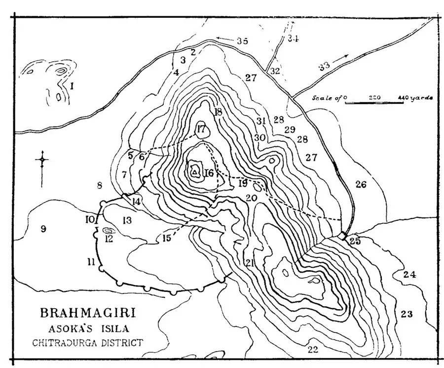
21. Bōrekunte. 29. Uduvalagondi.
22. Mounds of small stones. 30. Underground spring and cave.
23. Valley with neoliths. 31. Mounds with potsherds
24. Perennial spring (Pallakki chilume). 32. Brick foundations near the road.
25. Village Roppa. 33. Way to Hanumāpur.
26. Cromlechs, dolmens and cistvaens.
(Mauryara mane). 34. Way to Jaținga Rāmēša hill.
27. Old town site. 35. Way to Siddāpur and high road.
28. Pits dug for bones formerly. 36. Way to Hoskōte.
Among the things appearing on the surface, next to the Asōkan inscription, perhaps the most conspicuous objects in the area are the cromlechs, which abound near both the eastern and the western extremities. They appear to be of all sizes and a variety of shapes. Sometimes on the ground the mouth of a pot is just visible or the four slabs of a small stone-box or cist are seen. Some of these cists are even six feet long and five feet broad, thin slabs being placed swastika-wise, one end of each projecting beyond the square. The more important of these cists are covered by large heavy slabs about 8 feet in diameter and 9 inches or more in thickness. A few of these slabs stick out of the ground and present the appearance of dolmens or table-stones. A majority of the cists have no dolmens. Sometimes around the cist or dolmen small, roundish natural boulders, about one or two cubic feet in size, are placed in a circle forming a ring of stones or a cromlech. Occasionally the ring is large having a diameter of about 30 feet lined on the inside by a rubble structure, the inner face of which has another ring of stones. Though hundreds of these cromlechs have been disturbed by the agriculturists or rifled by the curious, there are hundreds more yet awaiting excavation and study. The variety of structures, their number and extent suggest that they must have been constructed during a long period stretching over hundreds of years. It is now well known that these structures are burials, stretching back to pre-historic times. But their close association with the Mauryan town and the fact that they bear the name “Mauryaramane” or the houses of the Mauryas among the local people indicate that some of them perhaps came into existence in the Mauryan period. The local people however give a traditional account of the Mauryas whom they describe as a pygmy race of men living in these houses and using the round holes in the eastern slabs for entrance. Excavations elsewhere have revealed that inside the cists the bones of dead men of normal size have been collected along with varied pottery.
It has been stated above that to the right and left of the nose of the hill stretch triangular plots of land containing the vestiges of human habitats. Here are to be seen scores of rubble stone structures just visible in the ground which appear to be the foundations or parts of the walls of smallish buildings whose mud walls have
The inhabited areas.
disappeared. They have generally their back to the hill. The lines run roughly parallel to the hill-side, their general orientation being from east to west. The mounds between the nose of the hill and Uđuvala-Done which rise to a height of 25 to 30 feet from the level of the irrigated lands are noteworthy objects for the archæologist. Since the plough has been used to till their surface along with the fields surrounding them, prolific evidence of earlier times is found in this area. The fields are strewn about exceedingly thickly with potsherds, brickbats, stone rubble, iron slag and neolithic implements. A canal from Siddāpur tank cuts across this inhabited area. The land on its lower or left side has been irrigated and prepared for rice cultivation. During the dry season, even these wet fields show potsherds here and there mostly of the coloured, polished variety, though one has to search for them; but to the right of the canal, that is between it and the hill, the surface is full of them. A more detailed study of these surface-finds reveals to some extent the contents of the ground below and of the inhabited layers lying below the surface. This so happens because the rains appear to be driving the edge of the loose earth further and further down the side of the hill, the contents of the lower levels also being slowly carried down in a thin layer and thrown on the surface of the fields and mounds.
Inscriptions
Buildings; Coins. Stoneware; Metalware; Pottery; The Strata; Link with Pre-history
No heading in the body: this section starts at its printed page (68).
Mr. Rice's search led to the discovery of the Brahmagiri inscriptions of Ašōka in the heart of the old town area, of the Siddāpur inscription in a cave of the Emme Tammana gunđu and the Jaṭingi Rāmēśa inscription about three miles to the north. In addition he discovered also a number of inscriptions extending from the Rāshṭra kūṭa and Nolamba times to the Hoysaļa and Vijayanagara times on the Nāgarpađegunđu and elsewhere on the Jaṭingi Rāmēśa hill, on a boulder to the north-west of the Emme Tammana gunđu, on a slab facing the fort-gate of Hāneya and on two slabs in the Trišankēśvara temple. This latter group has little to do with our present study, as also a newly discovered inscription of the Pāndyas of Uchchaṅgi found on the peak of Hire Jaṭingi Rāmēśa. A careful search brought to light only a few objects of interest carved on rocks. On a rock to the right of the road facing Biļigunđu and on the eastern rock of the pair called Eđegunđu were discovered a series of figures consisting of a trident enclosed in a crescent rising out of a circle all mounted on a lance handle. This figure identified by the local people as Bābayya or Piradēvaru is a symbol of the Islamic martyrs who are honoured in the Muharram festival. Though the identification is not beyond doubt it may be suggested that the figures were caused by some kind of calcium-bearing paint being applied with a brush thus preventing lichens from growing for a long time and showing them light-coloured against the dark background of the rocks.
On the inner face of the western rock of Eđegunđu were discovered a number of figures and signs caused probably by painting of a similar character. Some of these have the shape of letters forming two lines, the second line being indistinct. In the first line four letters are distinctly visible, each being about 9" long, 6" broad with an interval of about a foot between them. Strangely these marks resemble the later Brāhmi or cave alphabets of about the Sātavāhana times (first century A.D.). The significance of the inscription is under consideration. If it is Brāhmi, it may be the name of some Sātavāhana ruler or officer connected with the ancient town.
The only other inscription connected with the old town is a small piece of a slab of darkish granite, rhomboidal in shape of 4" × 3" × 1 1/2". It has a dressed exterior showing a small part of the circumference of a large circular object of about 2 1/2" in diameter. The inner face is flatter though slightly concave. The stone was picked up on the slopes of a mound near No. 27 of the map among hundreds of similar stones. It contains what appear to be four Brāhmi letters, each about 1 inch to 1 1/4 inches long.
No buildings were visible above the ground excepting a wall of round boulders running from the hill down the slopes of the mounds to meet the road to Roppa near a large cromlech about 50 feet in diameter composed of huge megalithic stones on the way from the farm-house to Hoskōte. But in the ground close observation revealed the existence of rubble foundations of scores of little buildings on either side of the lanes which originally ran parallel to the hill-side. The approximately equal size of the foundations (1 1/2 feet broad), their right angles and their parallel lines forming the lanes between them could be clearly seen, whereas here and there as in the hedge near the farm-house stone foundations of larger dimensions made up of size-stone pieces were also observable. Brick was scarce and it was surmised that this town used stone for the foundations even of huts.
But bricks were not absent. They were observable in the ground near the farm-house where a pathway branches off to Hanumāpur, also near the stone quarry, between it and the inscription and more commonly among the mounds and heaps on either side of Biļigunđu. This suggested that there were brick buildings, though few in number, and that some of these might be buried under the rice-fields near the Brahmagiri inscription.
It is strange that no coins of any sort have been obtainable from the Isila area. Even the villagers of the neighbourhood have no information of any coins having been picked up in the past. One Siddāpur villager produced a Bijapur coin picked up at Hāneya on the west side of the hill and two specimens said to have been found by one Muddaṇa of Hoskōte could not be produced for examination.
Next to pottery the largest number of objects visible on the surface of Isila were various objects of stone. Some of these were granite pieces of slabs, finely polished on one side. A granite pestle of the same kind, well-polished, was also recovered.
Stoneware.
These remind us of the polish of the Mauryan pillars and other objects. Mealing-stones and oval-shaped grinding stones about 6" × 4" × 1½" generally and stone discs about 2" in diameter, biscuit-shaped stone objects about 4" in diameter mostly of potstone resembling the mace heads of prehistoric culture, but more probably hingestones for doorways and a wheel stone of reddish sandstone were some objects which may well belong to the Mauryan times. But the stone objects which attracted attention most were neoliths of various types and shapes. There were the round pounders of the size of balls or pieces thereof which were picked up in nearly all parts of the area from Biİigunđu to near Roppa. There were the usual cone-topped wide-edged axe-heads, and also axe-heads of a ruder make with their converging sides having right-angled corners slightly rounded off. Most of these were of trap-rock. Occasionally there occurred celts of a smaller size, less than 3" long and 2" broad, flat in make, either of trap or of more reddish stones. Natural pebbles or trap pieces well-ground in oval shapes of various sizes from about 2" to 1" were also to be found. Occasionally a stone marble or a largish stone bead was picked up. One or two quartz and chalcedony pieces were also picked up bearing clear signs of being flaked for the production of knives and other microlithic implements. The existence of a microlithic settlement in addition to the Mauryan town and the Neolithic village was suggested by the occurrence of a beautiful quartz borer looking like a spear-head collected from the dunes on the north-east of the hill.
Though not in such abundance as in Chandravalİi, occasionally iron slag pieces were collected showing that the old town used iron though the metal was comparatively scarce. A few copper objects also occurred here and there. And a few crucibles pointed to the existence of metal smithy.
One potstone piece was definitely the left hand of an image which perhaps held a sword or similar object. The size of the image was suggested as 3 feet in height. A few conch-shell objects were also picked up, some of them being definitely parts of bracelets and anklets.
The site of Isila is one of the ideal fields for the collection and study of pottery.
Though very few fully preserved pots were found, a preliminary study of the surface yielded an extraordinary variety of potsherds. From the necks and other parts of large beakers and urns, various sizes of pottery were indicated down to small hand-made or wheel-made cups about an inch in diameter and ring-like beads of pottery well-fired. There were also pear-shaped beads with their holes indicative of the use of metal or wooden spikes. Quite a number of pottery discs about 2" in diameter evidently made by grinding broken potsherds were also collected. Occasionally there occurred the conical tops of blackware lids, spouts, plain and ornamented, and
Pottery.
parts of pottery dishes. But the greatest interest attached to the colour and finish of the pottery. Everywhere the usual unpolished dark-greyware occurred and here and there unpolished redware. But the pieces that caught the eye were those of coloured pots. There was the polished blackware sometimes burnished to the standard of glazed pottery; blackware with incised designs and also very rarely blackware polished with red or white designs painted on it. A number of pieces showed chocolate or dark tan colour with geometrical or plant designs painted in white or whitish red and red. A few pieces showed chocolate painting on lighter brown background. The designs were highly varied and well-conceived and included basket-work, lattice-work, chequered, plant, floral, dotted, screw and other designs. Some rare ornamented pottery had incuse ornamentation. But the other types of blackware and chocolateware had varied incised ornamentation.
There was also a plentiful occurrence of redware pottery painted with a slip and well polished. Some of these pieces bore incised ornamentation of the finger-print, rope, laurel-leaf, zig-zag, and other varieties of design.
The painting on pottery appears to be a noteworthy feature of the ceramic ware occurring at Isila. Connected with the pots, but distinct as a class of earthenware are the bricks and tiles. Pieces of two different kinds of tiles were picked up: the roughly shaped Mangalore tile pattern with two holes occurred in some places, while in others were pieces of the flat round-edged type with the bent head. One piece which appeared to be the portion of a vessel more than of a brick showed ornamentation produced by pressing clay upon a mat of bamboo woven in an artistic pattern.
A surface study of Isila strongly suggested the existence of five stratified layers
The strata. as follows :
(1) Chāļukya-Hoysaļa, e.g. , the image of Chaudēšvarī and possibly the fort-wall of boulders.
(2) A Mauryan town with perhaps a pre-Mauryan commencement and early Sātavāhana ending with its period of highest prosperity in the third century B.C.
(3) A pre-Mauryan town of the iron age using polished blackware pottery or ornamented chocolate-coloured ware connected with the late neolithic period and the early iron age.
(4) A neolithic settlement.
(5) A pigmy flint culture.
The greatest prosperity of the place appears to have been in the period of Ašōka, though the total length of the period covered by the finds would be several thousand years.
The importance of the site of Isila consists in its being a link between the Link with pre-history. historic empire of the Mauryas and the pre-historic cultures of the Deccan. While, on the one hand, its painted pottery, etc, connect it with the already-known site of Chandravalli whose numerous coins have furnished datable data, on the other it promises to give us three pre-Mauryan strata from which considerable information could be obtained about the cultures of the Deccan in pre-historic times. Isila appears to be a twin of the well-known site of Maski in Hyderabad, while Chandravalli is a twin of the slightly later site of Paithan. A detailed study of Isila by the excavator promises to reveal considerable new information for the student of pre-historic and early Deccan.
A Brief Report of the Excavation Work done during the year 1939-40
Previous work at Chandravalli; Previous work at Brahmagiri; Resumption; Preparations; Excavation at Chandravalli; Excavation at Brahmagiri; Ceramics; Further work at Mysore; Chandravalli Monograph; Future work at Brahmagiri
No heading in the body: this section starts at its printed page (72-74).
A Brief Report of the Excavation work done during the year 1939—40.
The site of Chandravalli near Chitaldrug was recommended for excavation by Sir John Marshall, Director-General of Archæology in India. Preliminary studies were commenced in 1928 and field work was done for a few weeks in succeeding years. In 1931 the work was closed down with the hope of resuming it at an early date. It was discovered that at Chandravalli lay buried the ruins of a Sātavāhana town of about eigteen hundred years ago. It was the centre of a local government and was a place of considerable industrial and commercial prosperity having trade relations with China and Rome. Mayūraśarma's inscription suggested the continued existence of the town down to about 300 A.D.
In 1929 a study of the Aśōkan inscriptions in the Molakālmuru Taluk suggested the existence of a Mauryan town in the neighbourhood and a preliminary survey disclosed traces of a buried town. In 1931 trial soundings in one or two places revealed the existence of earlier strata below the Mauryan town reaching back to the prehistoric times. Further work was not conducted owing to the general suspension of all excavations.
The revival of excavations was proposed by the Archæological Department and was supported by scholars like Mr. K. P. Jayaswal, Dr. F. W. Thomas, Sir Leonard Wooley, Mr. Worman of Harvard, and Rao Bahadur K. N. Dikshit, Director-General of Archæology in India. A sum of Rs. 1,000 was sanctioned for the purpose in the budget for 1939-40 and an Excavation Assistant was sanctioned for two months.
Before proceeding to the field, preliminary work was started at the office, the catalogue of the Chandravalli finds of the previous years being verified. The work of cleaning the antiquities numbering nearly 5,000 and preparing them for study was started in the office cellar and a preliminary study was made of the numismatic and epigraphic data already collected. As soon as the lecturing season in the college was over the Director proceeded to the excavation camp accompanied by the Junior Technical Assistant, the Excavation Assistant, a Pandit, the Photographer and three menials. The work occupied nearly a month, the first portion of the period being spent at Chandravalli and the later one at Brahmagiri.
Since nine years had passed between the last working season and the present one, it was found that the forty different pits and trenches excavated at Chandravalli had become silted up and also seriously damaged and tampered with. It took several days to put them into shape for verification purposes. Some old excavations were extended and a few new pits were sunk, with the object of finding corroboration for the theories formed already about the Śātavāhana town. The lower levels were reached in several places and information was obtained about the existence of the earlier layers and of the characteristics of pre-Śātavāhana pottery. Several new coins, seals, figurines and other antiquities were also unearthed, valuable information being obtained about the political and cultural conditions of the buried town. It was realised that the Pre-Śātavāhana antiquities particularly would be of the greatest value in the excavations at Brahmagiri.
In the neighbourhood of Brahmagiri work was started by a restudy of the inscriptions and a careful survey of the surrounding area.
Excavation at Brahmagiri. It was surmised that the site for examination covered several square miles lying between the Hagari river and an east to west line passing through the village Roppa. The work of taking soundings in various parts of the area was commenced and as many as eight pits and trenches were sunk. The strata were most carefully excavated and their yields recorded with the help of photographs and drawings. Among the pieces of information collected may be mentioned the following :
The disposal of the dead, funerary pottery and customs, the discovery of an apsidal brick building, probably a Buddhist Chaitya, the discovery of several strata of a long lived town the upper layers of which are assignable to the Mauryan period, while the lower layers stretch far back into the pre-history of South India, the discovery of varied ceramic ware including red ware, red and brown ornamented ware, polished black ware, ornamented chocolate coloured ware, varied black and red ware with incised ornamentation, and stone and brick foundations of houses, most of
10 which belong to the long-lived pre-historic town which came under Mauryan rule for a short time perhaps during its last days. The discovery of this definitely pre-historic town site is of first rate importance for our knowledge of South Indian history, since the latter has till now begun with the Mauryan connection.
It was also found that below the pre-historic town there was an extensive neolithic settlement in the place for several thousands of years and that below this full neolithic level there was a clearly identifiable microlithic settlement connecting the neolithic with the palaëolithic. The age for the corresponding culture in Europe is about 10,000 years ago. It is most fortunate that we have discovered near Brahmagiri, buried remains of South Indian life pertaining to little known periods of South Indian pre-history.
The discovery of pottery in the various strata is of very great importance since in the present state of the archæological knowledge of the Dakhan no criteria are known for dating pre-historic finds. There appears to be now a chance of our making a valuable contribution to the history of pottery in the Dakhan which may lead to some method of sequence dating for South Indian pre-history.
About twenty boxes of excavation finds are now in Mysore. In addition to the old finds from Chandravalli these new finds have also to be arranged, catalogued, cleaned and studied in relation to the literature already available on the subject. This involves several months of work in the office, its library and laboratory.
Since the results of the Chandravalli Excavations are awaited by the archæologists, the publication of the monograph on Chandravalli monograph. Chandravalli has first to be taken up. The monograph will be a scientific work on the model of Sir John Marshall's Mohenjo Daro with descriptions of the excavation, descriptions of the finds, more than 5,000 in number, and chapters on political history, inscriptions, numismatics, buildings, ceramics, ornaments, implements, industries, trade, etc.
The results of the work done at Brahmagiri, though definite and highly important, can be claimed to be only the commencement of an important excavation. It is necessary to conduct much further work first in the shape of studying this season's finds at Mysore and then conducting further trial excavations at Brahmagiri with the intention of sounding the other parts of the vast area and locating the centres of the Mauryan area, the pre-historic town area, the neolithic area and the microlithic area. This itself would involve another season's work. After these centres are determined, detailed excavations would have to be conducted with proper facilities and assistance.
Part V: Numismatics
Pallava Coins
When the Pallavas assumed independence in the third century A.D., they appear to have retained the bull type on the obverse and to have changed the wheel on the reverse to a sun, into whose disc other marks entered in course of time. The sun on the reverse, often with the sceptre and conch, may be taken to distinguish the Pallava issues from the Southern Andhra ones. The Pallava coins are also thicker, heavier and more round and have a more claborate border. These characteristics are common to the bull and lion types. One coin of the bull type has a Brāhmi legend which appears to read 'Sataka'. Many specimens of the lion type have the legend 'Vishamasiddha', 1 a title borne by Kubja Vishṇuvardhana of the Eastern Chālukya dynasty. 2
The metals used for the Pallava coins are mostly silver and brass for the lion type and copper for the bull type. It is possible that the bull type and the lion type belong to two contemporary dynasties which perhaps ruled at two different places like Kañchi and Veñgi.
TYPE A.—Bull and Sun.
1. Ae. '7. Large and thick.
Obverse :—Within border of two linear circles with dotted line between them, large humped bull standing to right. In front of it, floral creepers; legend on top of bull.
Reverse :—Small sun in centre with long rays emanating.
TYPE B.—Bull and Sceptre.
2. Ae. '75. Large and thick:
Obverse :—Similar but legend uncertain.
Reverse :—Sun, in whose large disc is a hooked rod, perhaps sceptre between two lampstands.
TYPE C.—Bull and Conch.
3. Ae. '65. Half size.
Similar to 2, but rude conch instead of sceptre.
4. Ae. '5. Quarter size.
Similar to 2.
1. Guntur plates. Also Jouveau Dubreul : An. Hist., D. p. 53.
2. Hultzsch : I.A., 1896; p. 321. Also Smith : I.H.C., Pl. XXX, No. 1.
5. Ae. '45. Small.
Similar to 2, but figures much conventionalised.
The changes of the reverse device indicate that 1, 2, 3 and 5 belong to four different generations of rulers. The sun of 1 has practically disappeared from No. 5.
TYPE D.—Lion and Conch.
6. Ar. Much alloy. '75. Wt. 103'9 grs., large and heavy and thick.
Obverse :—In triple border of two linear circles with dotted line between them, large maned lion to right with open mouth and head; left forepaw and tail uplifted. In front of it, floral creepers.
Reverse :—In sun's disc, a large conch with mouth upward between two lamp-stands.
7. Ae. Similar to 6.
The lion on Mādhariputra Sakasēna's coins from the Gōdāvārī and Krishṇā districts 1 may be the prototype of the Pallava lion, though some difference in the mouth and forepaws is noticeable.
Chēra Coins
TYPE A.—Bow and Lamp.
Variety (A)—Sword.
1. Ae. '65. Thick and slightly concave. 2
Obverse :—In large ring of rude large dots are a strung bow to left and a lighted lamp to right. Between them is a sword, represented by a hilt and three dots standing for the blade.
Reverse :—In linear circle, between two lamps is the section view of a basin placed on a stand. In it are two swords crossed points downwards with ten pellets in the angle between the hilts above.
This type with the 'drum' and the bow has been generally known as the 'Chēra' or Kongu type. These names are also applied to the 'Gajapati' or elephant type. The two types are very different and it would be better to classify the bow and lamp type as Chēra and the elephant type as Gaṅga, avoiding the name Kongu which may be ambiguous. The bow and lamp appear on the obverses of this type along with other symbols which change. The bow appears on Āndhra coins of C. 85 A.D. and again on some Chōlā coins of Rājēndra Chōlā. It may have been an Āndhra symbol used at first in the south-west of their empire including Kolhāpur and Banavāsi, 3 which later became localised in North Kerala, with which
1. Rapson : A.C., No. 36. 2. E.C.S.I. Nos. 121 to 127. 3. Rapson : And. Coins, p. 7.
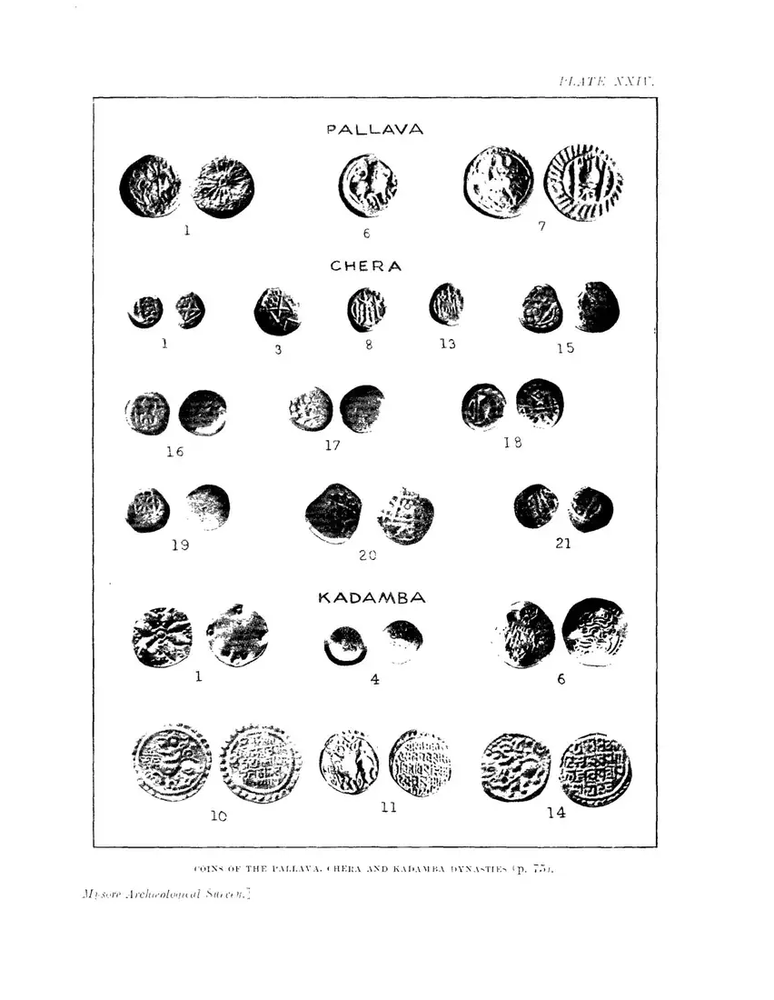
- PALLAVA CHERA KADAMBA COINS OF THE PALLAVA, CHERA AND KADAMBA DYNASTIES (p. 75)
area it is subsequently associated. It is also present on a punch marked gold coin which may be early Chālukya or Yādava. Whether it had any connection with the old Tamil designation of the Chēra kings 'Villavan', Bowman, is not definitely known.
The lamp indicates in Hindu life, as also on the coins, something sacred for the worship of which it is lit.
Between the bow and the lamp are generally one or two symbols which vary, perhaps indicating that they are the issues of different rulers. One of such symbols is the sword whose hilt is clearly seen. The dotted blade shows a highly conventionalised condition of art and suggests that earlier issues with better figures preceded this specimen. The earliest use of this type may have been several generations before No. 1 was issued.
The reverse figure has often been described as a 'drum shaped' object. 1 It is more probably an altar on which two swords are placed crossed, perhaps for worship. They might be the swords of a king and possibly of a crown prince or co-regent. The significance of the dots, which are ten or less on the different specimens, is uncertain.
Elliot attributes this type to the Gangas on the ground that the use of the die shows them to be later than the Chēra times. There are no clear historical records of the Chēras, though for a considerable time the Chēras occupied a position of subordination under the Chōłas and Pāṇdyas. The Chēras appear to have been in possession of part of the Kongu country where the Gangas attained to power later. But as the latter had as their special device the elephant and not the bow, the bow and lamp series is attributed here to the Chēras. 2
2. Ae. '55.
Obverse :—Similar to 1. In place of the sword, there are two pellets flanked by two hilts one on each side, perhaps standing for two daggers.
Reverse :—Similar to 1, but the basin and the swords are more conventionalised showing probable later date.
3. Ae. 5.
Obverse :—Similar to 2, but with four dots in square form, instead of two.
Reverse :—Similar to 1, but swords clearly visible.
4. Similar to the above but with dagger surmounted by circle and reversed position of lamp and bow on obverse.
5. Similar, but weapon looks more like a cross hilted dagger.
6. Similar, but weapon looks like a combined battle axe and sword.
2. Mr. Aravamudan has collected some information about the Chēras in his book "The Cauvery, Maukaris and the Sangam Age". See also Bulletin of the School of Oriental Studies, London, 1925, Review by Dr. Barnett.
Variety (B)—Battle axe and sword.
7. Similar to 2, the weapons are a battle axe and sword.
The battle axe which is presumably the famous axe of Paraśurāma may be the special symbol of Kēraļa with its centre near Tiruvanantapuram (Trivandrum). The present variety may indicate some king whose name or religion was specially connected with Paraśurāma or it may suggest a Chēra conquest of South Kēraļa.
Variety (C)—Lamp.
8. Obverse:— Similar to 2 but with tall dome-topped lamp flanked by three dots on each side in place of the weapon.
Reverse:— Similar to 2, but swords have become conventionalised into lines without hilts.
Variety (D)—Dagger and uncertain weapon.
9. Obverse:— Similar to 2, but with short dagger (?) and a two-pronged weapon (?) in place of sword.
Reverse:— Similar to 8.
The two weapons on the obverse together form a figure which is somewhat like the human figure on Rapson's Andhra Coins No. 2.
Variety (E)—Lamp in basin.
10. Similar to 2, but in place of the weapon and lamp is a basin with a light burning in it. The bow is on top.
Variety (F)—Arches.
11. Similar to 2, but between the bow and the lamp is a figure composed of four arches based on a line of five dots, which may represent either a Chaitya symbol or a weapon called 'Vajra-Mushṭi' commonly used by the wrestling caste in South India.
Variety (G)—Lion face.
12. Similar to 2, but the central figure appears to be the conventionalised face of a lion with brows, eyes, nose, teeth and chin visible.
Variety (H)—Elephant.
13. Ac. '45.
Obverse:— In circle of dots with strung bow to left 1 and lampstand to right, standing on a platform marked by four continuous and dotted lines is a tusker elephant with lifted tail standing to right with trunk hanging down. Above it is a small cross-like figure with forked ends, probably a lamp. On its sides two squares formed by four dots each, possibly represent Vishnu's conch and discus.
Reverse :—Similar to No. 2.
This kind of elephant, standing with lowered trunk and lifted tail is nearer to the Gaṅga 'Gajapati' type than to the usual Āndhra elephant types. 1 They connect the Chēras with the Gaṅga country and may belong to the early part of the period of transition from Chēra to Gaṅga power, from the bow type to the 'Gajapati' elephant type.
14. Ae.
Obverse :—Within circle of dots, to right 2 , five-pointed lamp post with four dots near top, a smaller lamp in left field and below it a small elephant to left with uplifted tail.
Reverse :—As usual.
15. Ae. 59 grs.
Obverse :—Bow and five-pointed pillar with dagger (?) and four large dots in the centre.
Reverse :—Worn.
16. Ae. Round. 62'1 grs.
Obverse :—From left to right :—(1) A strung bow; (2) a bell or spear placed on a stand; and (3) a burning lamp.
Reverse :—The drum-like vessel appears with crossed swords. Above this symbol may be noticed an ornamental figure. The coin appears to be a very strange type.
17. Ae. Round. 53'5 grs.
Obverse :—In ring of dots may be seen from left to right a lamp and a bell-like symbol with three dots above.
Reverse :—Effaced.
Could the symbol on the obverse represent a temple mark? The coin is of a very rare type.
18. Ae. Round. 57'1 grs.
Obverse :—In ring of dots are to be seen from left to right: a strung bow, a banner, a fish and a lamp. The top of a lamp appears below the fish.
Reverse :—Between two lamps may be observed the following marks : a basin placed on a stand with two crossed swords inside. Above the swords are visible four dots representing part of a dotted circle. There is a lamp on each side of the basin.
1 Rapson A.C. No. 59 and 93.
2 Mysore Catalogue.
Does the fish mark on the obverse denote the Chēra conquest of the Pāṇdya country? The coin seems to be a very rare specimen.
19. Ae. Round. 55.2 grs.
Obverse :—A strung bow in dotted circle. An eight-pointed solar mark in square with uncertain symbols on three of its sides.
Reverse :—Completely effaced.
This coin too is a very rare type.
20. Ae. Thick. 66 grs. Slightly worn.
Obverse :—In circle of dots, two thunderbolt-like marks with dots on both sides. Strung bow to left and five-pointed pillar to right.
Reverse :—A peculiar design probably representing some drumshaped altar. Two rows of dots above.
21. Ae. Round. 49.4 grs.
Obverse :—A trident and two uncertain symbols.
Reverse :—Uncertain. Perhaps a basin on stand.
Kadambas and Minor Kannada Dynasties
[EARLY KADAMBA (OF BANAVASI?)]
TYPE A.—Lotus and Punch Marks. (C. 400?)
1. Ai. 7. Wt. 66.8 grs. Padma-Tanka Varaha.
Obverse :—Covering the whole obverse is a large eight-petalled lotus flower or padma; four alternate petals are shaped like conches; a pellet within a small circle marks the centre of the flower.
Reverse :—Six small punch marks; the four larger ones form a square and contain a small flower each; the two smaller ones have no figures and are punched one on each side of one of the larger marks.
This type is perhaps the original padma-tanka as the most important mark thereon is a large lotus struck with a single die. This coin, die-struck on one side and punch-marked on the other, appears to belong to a very early period. The lotus appears to be connected with the lotus evolving out of the wheel on the late Southern Āndhra coins which perhaps belong to about 200 A.D. The return of gold as the standard metal denotes some economic change from the Āndhra times. The weight of this specimen, 66.8 grains, is the usual Kadamba standard which is retained by the later Kadambas of Goa and other dynasties till about 1158 A.D.
TYPE B.—Lotus and Lion.
2. Ae. 5.
Obverse :—In circle of dots, eight-petalled lotus, with a pellet between each pair of petals, standing perhaps for a second row of petals.
Reverse :—In circle of dots, rude maneless lion to left, with head looking back. Instead of a snout, the animal has a long turned up beak or trunk. Is it a yāli ?
The reverse of this coin is different from that of No. 1, but the obverse is similar. This coin belongs to about the same period as No. 1. A beaked lion or gryphon is rather uncommon in Indian Art. Its real significance here is doubtful. Perhaps it indicates some foreign influence. But as it looks back like the Kadamba lions, this specimen is attributed to the Kadambas. 1
Minor Kadamba
TYPE C.—Lion and Ornamental Lotus.
3. Ai. Wt. 63 grains. Double die struck. E.C.S.I., Nos. 17 and 70. No. 70 is perhaps the original of which No. 17 is a copy. The two belong to the same type and are described here as one coin.
Obverse :—Linear circle with petals springing out. In it, standing to right on an ornamental tree branch, is a large maned lion, with lifted tail and open jaws looking backward; its left foot is lifted up and rests on the curled up floral end of the tree branch. Below the branch is an old Kannada legend reading most probably: Si va ra (Sivaratha—last letter doubtful).
Reverse :—Uncertain ornamental figure appearing as a lotus flower in Elliot's No. 17 (Conch ?). Around it is a complex ornamental border composed of linear circle, dotted circle, linear circle and the outermost circle of petals perhaps representing a lotus.
The characters are nearer to 1000 A.D. than to 500 A.D. If the legend is Sivaratha, the coin may, with much hesitation, be attributed to a Kadamba prince of Banavāsi who lived in C. 500 A.D. and was the son of Mṛigeśavarma (475-488). The weight is less than the usual Kadamba standard and remains to be explained. It is possible that the Hoysala standard was adopted by some Kadamba feudatory of the eleventh century. There are double punch marks both on the obverse and reverse.
TYPE—Hanuman and Lion.
4. Ai. 5. Thick and cup-shaped. Wt. 65.5.
Obverse :—A large punch mark containing a tailed monkey with bent knees moving to right on what looks like a tree branch (or elephant goad). The hands hold something large and round, perhaps a fruit.
Reverse :—In small linear ring (from reverse die) a long-nosed maneless lion standing with looped tail lifted up and looking backwards.
11
This perhaps belongs to a period when the die and the punch were both used, as on No. 1. The Kadambas, especially those of Hangal, had the retrospectant lion crest and the monkey banner. 1
TYPE D.— Hanuman and Ornamental Lotus.
5. Ai. Wt. 65.1.
Obverse :—In triple border of linear dotted and linear circles, crowned Hanumān seated to front with face to right, squatting with left hand resting on left knee and right hand upraised perhaps in the abhayamudrā or attitude of reassurance. On each side of his seat is a fine chauri or flywhisk surmounted by a conch. Near crown, moon to left and sun to right. Below seat is a Kannaḍa legend: Na ka ra (Nagarēśvara ?)
Reverse :—In complex lotus border is an uncertain figure which may be a highly conventionalised lion looking backward.
The characters are more like those of the twelfth century 2 and the name does not belong to any well known king. Elliot suggests that it may refer to Nakarēśvara of Bankapur. Many other towns with flourishing merchant-guilds may have had their own god Nagarēśvara or Town-Lord. The use of 'ka' for 'ga' shows imitation of Tamil spelling. The usual deep double punch marks are found both on the obverse and on the reverse. Nos. 4 and 5 may belong to the Kadambas of the main or of the Hangal branch.
TYPE E.— Four Punched Lions.
6. Ai. 75. Wt. 58.2
Obverse :—Seven punch marks. In the centre is a large 3 ornamental pond with an eight petalled lotus in the middle. On each side of it is a punch mark containing a maned lion to right with tail lifted and looped, head turned back, jaws open and left forepaw uplifted. As on No. 1, two deeply impressed small punch marks without any symbols on them.
Reverse :—In linear circle surrounded by dots, elaborate floral design as on Gaṅga coins.
7. Ai. 7. Wt. 58.5
Obverse :—Similar to No. 6, with only slight defferences. 4 The tails of the lions are not looped but curved back. The pond is more conventionalised and the lotus is replaced by a pellet. The two deeply indented marks exist as on Nos. 1 and 6, showing that they were made intentionally.
Reverse :—Similar to No. 2.
1 Fleet : Dy. Kan. D. p. 299, note 4.
8. Ai. Wt. 58 grains. Figured in E.C.S.I. as No. 13.
Similar to No. 7, but lions to left, not maned, and long snouted; in the pond a swastika in place of the pellet. Two deep punch marks as usual.
Nos. 4, 7, and 8 belong to a class by themselves. The two deep punch marks, evidently intentionally made relate them to No. 1; the retrospectant lions to Nos. 2 and 3; and the floral reverse to the Ganga Gajapati type with whose weight of 59 grains, their 58.5 agrees. But No. 1 and some other Kadamba coins weigh 66.6 grains. This difference in weight remains to be explained, otherwise this type could be assigned to some branch of the early Kadambas connected with the Gangas. Probably the Gangas took their standard and their reverse from this type, substituting the lion with their own elephant. Nos. 6, 7, 8 are stated by Elliot to have come from north Karnataka otherwise called the southern Mahratta country, which the Kadambas were ruling. If the lions looked forward, the Ganga-Pallavas could have been the probable authors of this type.
Another dynasty whose authorship of these coins is also possible is the great Rāshṭrakūṭa dynasty. The weight of these coins 58.5 is the same as the weight of the early Kalyāni Chālukya ones and the punch-marking is similar. The reverse appears only on the later coins of the Gangas who were connected with the Rāshṭrakūṭas. The early Rāshṭrakūṭas may have had the licn as their device.
TYPE F.—Crown and Floral Reverse.
9. Wt. 60 grains. Figured in E.C.S.I. as No. 18.
Obverse :—A pavilion with double pillars and rafters showing. On top two circles with pellets standing perhaps for lotuses. In central field is a crown.
Reverse :—Floral reverse as on No. 6.
This description is from the drawing in E.C.S.I. It is doubtful if this coin is definitely Kadamba. It may be the issue of one of the feudatories of the Kadambas or of the Gangas.
Kadamba—Goa Branch
Jayakesi.
TYPE—Lion.
10. Ai. From E.C.S.I. No. 71.
Obverse :—In linear circle surrounded by ring of dots with sun and moon above, stands a large maned lion to left, with face to front, open jaws, right forepaw raised and tail lopped up. In front of the lion is a Nāgari legend: ‘ Pra mo da ’ the cyclic year of minting probably.
Reverse .—In border similar to obverse, five line Nāgari legend in fine Dēva-nāgari characters :
Srī Sapta kō tī sa la bdha va ra vī ra Ja ya kō śī de va ma la va ra mā ri
The legend means “The brave king Jayakesi, who obtained boons from Śrī Sapta Kōṭiśa, and who is the goddess of destruction to the Malavas (hill people). ‘Pramoda’ is one of the sixty cyclic years. The first a of Malavas is short and the word does not refer to the Mālavas of Central India. The form ‘Malava’ for the people of ‘Male’ is perhaps due to popular Kannaḍa pronunciation.
Siva Chitta (c. 1158).
TYPE—Lion.
11. Ai. 7. wt. 66.9 (large double dies).
Obverse :—Similar to 10, but lion ruder, long nosed and long eared, and looking and running to left. Nāgari letter in front : Nya.
Ireverse :—Similar to 10. Legend :
Srī Sapta kō tī sva labdha va ra Si va chi tta vi ra Hē mā di dē va ra Mā la va ra mā ri
The legend means : King Sivachitta, the lord of Hēmādi, the goddess of destruction to the Mālavas (Mā is long) who obtaine boons from Śrī Sapta Kōṭiśva” (ra is missing). What Hēmādi stands for has to be explained. The ‘ra’ of ‘Dēvara’ is a popular modification of the neminative termination ‘ru’ in Dēvaru.
12. Similar to 11 but letter on obverse seems to be different.
The legend on the reverse is :
. . . Sa labdha va ra Si va chi tta Vira Hē mā di dē va ra Mā la va ra mā ri
‘Vira’ appears after chitta and in ‘Mālava’ Mā is long.
13. Similar. But legend on obverse seems to be different.
The legend on the reverse reads :—
(1) Srī . . . . Kō
(2) tī sva la bdha va ra Si
(3) va chitta vira Hē ma
(4) de divara Ma la
(5) vara ma ri.
‘Ma’ is short.
Soyideva.
TYPE—Lion.
14. Ai. From E.C.S.I. No. 69.
Obverse :—Similar to No. 10, but lion ruder, long nosed and long eared and looking left. In front Nāgari legend of two letters, uncertain.
Reverse .—Similar to No. 10; legend :
Srī Sa pta Kō tī sva ra cha ra ṇa la bdha va ra vī ra
Sō yi dē va
The legend means : “The brave Sōyidēva, who obtained boons from the feet of Śrī Sapta Kōṭisvara.”
15. Similar to 10 but legend on obverse is ‘ṭa’
and on the reverse :
(1)
(2) ra cha ra
(3) bdha va ra pra sa
(4) da Sō vi dē va
(5) va ra mā ri.
Uncertain King
TYPE—Lion.
16. Ai. '65. Inferior metal.
Obverse :—similar to 10, no legend in front, but an uncertain mark lehind.
Reverse :—Similar to 1; legend barbarous :
(1) Sri
(2) Kō tī
(3) sa va ra
The lion of the Goa Kadambas resembles the early Kadamba lion in its raised head, large ears, looped tail and raised forepaw; but it looks forward like the Āndhra and Chālukya lions and not backward like the old Kadamba lion. The facing lion is similar to the one on the Hoysaļa coins. The fragmentary legends on the obverse may indicate the names of the years as in the case of ‘Pramoda’.
Part VI: Manuscripts
Manuscripts examined
No heading in the body: this section starts at its printed page (86-87).
Through the courtesy of the Deputy Commissioner, Kolar District, about thirty-two palm leaf manuscripts were secured for examination from a private gentleman residing at Ulsoor. These manuscripts are of varied interest dwelling on architecture, sculpture, dancing and the like; but they are all incomplete so that they cannot be reviewed without the help of other copies which may have been preserved elsewhere complete. Among the manuscripts, the following may be mentioned :—
1. Śiva-vilāsam—No. 184. Telugu language and characters. In the form of the usual Māhātmyas it deals with the Gavi-Gangādharēśvara temple in Gavipur, Bangalore.
2. Lakshmī-Nārāyaṇa Kavacha—No. 101. The composition is in praise of the god Lakshmī-Nārāyaṇa.
3. Gaṇita—No. 17. Telugu language and characters. A book on Arithmetic like Lilāvatī.
4. Sōmaśēkhara-Chitraśēkhara Charitre—No. 20. Kannaḍa language and characters. A book written in Yaksha Gāna form. It has been reviewed in the Mackenzie Collection of Oriental Manuscripts, p. 534.
5. Taittirīya Brāhmaṇa—No. 22 A. Telugu characters. Printed.
6. Pūjārnava Śivakāṇḍa—No. 1. Dwells on the mode of worship in Śiva temples.
7. Sanatkumāra Vāstu—No. 26. In Telugu characters, with Telugu commentary. The book is incomplete.
8. Āgama-śāstra—No. 3. The dabbing of the sacred ash, the wearing of the Rudrāksha, the mode of ablution. the eight forms of worship, etc., are all narrated in this manuscript.
9. Śrī Rāma-kavacha—No. 12. In praise of Śrī Rāma.
10. Kāraṇa Tantra—No. 30. A book on Śaivāgama. Tamil characters.
11. Śaivāgama—No. 9. In Telugu characters. Describes the several ways of invoking and worshipping Nandi, Mahākāla, Dēvēndra, the Dikpālakas, Śiva, Vishṇu, Pārvatī, Gaṇēśa, etc., and also dwells on Balipīṭha-sthāna, Kuṇḍa-lakshaṇa, Dēvālaya-pramāṇa and so on.
12. Nānāgama-sāra—No. 7. Describes the principles enunciated in Vātula, Kāmika, Kiraṇa, Lalita and other Āgama books and dwells on Sahasra-kalaśa sthāpana, Ekādaśa-vyūha, Samprōkshaṇa-vidhi, etc.
13. Śaivāgama-prayōga—No. 12. Telugu characters. Is concerned with the worship offered to the god Sōmanātla and describes Śiva-kumbha sthāpana, Gaurī-bīja, Maṇṭapa-pūja, Bali-prayōga, Utsavaprayōga, etc.
14. Siddhānta-sārāvali—A treatise on dancing ; but incomplete.
15. Syāmalā-Daṇḍaka—No. 35. A composition of Kālidāsa. Printed.
16. Šiva-Pañchāksharī—No. 18. Telugu characters. Printed.
17. Mahānyāsa—No. 19. Telugu characters. Printed.
18. Ratna-Parīkshā—No. 29. Telugu language and characters. The book is similar to the 'Ratna Parīksha' written in Kannaḍa by Bālavaidyada Chaluva (Catalogue of the Oriental Library, No. B. 69). The manuscript contains also the Yaksha Gāna play entitled the 'Karibhaṇṭana Kālaga' in the Telugu language.
19. Venkaṭagiri Mahātmya—No. 80. Printed.
20. Nandi Bharata—No. 41. Telugu characters, with Telugu commentary. Describes the various mudrās and postures in abhinaya.
21. Yantra-śāstra—No. 31. Grantha characters. Contains the Dēvī-māhātmya, Māraṇa-prakriya, Svarṇa Gaurī-vrata, etc.
22. A manuscript bearing No. 15 contains several jātakas, letters, and copies of certain vyavasthā-patras or settlement deeds regarding the worship, procession, etc., of the gods Yaragēsvara, Sōmēsvara and so on in Kolar during certain festivals like the Karaga, the Car Festival, etc. Copies of certain grants in Kannaḍa and Telugu are also recorded in the manuscript among which is a grant of the time of Dēva Rāya I, the Vijayanagar King. It is dated in Kali 4518, Śaka 1326, Pārthiva sam. Jyēshṭha śu 1 Wednesday corresponding to Wednesday, April 29, 1405 A.D., though the given Kali year must have been 4506 and the Śaka year 1327. The inscription records that when the Mahīrājādhirāja Rāja-paramēśvara Vira-pratāpa Dēvarāya mahārāya was ruling the kingdom of the world, on Wednesday Kali 4518, Śaka 1326, Pārthiva sam. Jyēshṭha śu 1, by order of the great minister Nāgaṇṇa Daṇpāyaka, in the time of Kemparāya Daṇpāyaka, the Mahāsāmantādhipati Ibari Nāyaka and the Nāḍa-prabhu of Kōlāla Mukkaṇṇajiya, Soṇnegauḍa and Yirigisetṭi made a grant of the villages of Dēvaṇḍahaļli, Yeđehaļli, Donehaļli and Mađērahaļli as also the lands on the Śataśrīngaparvata and the wet and dry lands, gardens, etc. belonging to Madavala together with all the rights (specified) belonging thereto, free of all imposts, to Sōmēsvarasvāmi of Kōlāla, otherwise called the new Kailāsa, Gangādharēsvarasvāmi, Cheluva Sōmēsvarasvāmi and Antaragaṅge-Amrītēsvarasvāmi, for their decorations, offerings and festivals, to last as long as the Sun and Moon endure. Ibari Nāyaka (called Hebbere Nāyaka elsewhere) and Yirigisetṭi are mentioned in Kolar 83 which is another record of the time of Dēva Rāya I. The latter record is dated in 1417 A.D., but it also mentions wrongly the Kali year 4518. Thus the mention of the Kali year in the present record is faulty. The villages mentioned in the record are all mostly in the neighbourhood of Kōlār, while the Sataśrīngaparvata is the name given to the Kōlār hills. The record is under examination.
Footnotes
p. 77 1. E.C.S.I., p. 117.
p. 78 1 E.C.S.I. No. 124.
p. 81 1 E.C.S.I., p. 66, and Pl. II, No. 75.
p. 82 3 E.C.S.I. No. 14.
p. 82 2 E.C.S.I., No. 78.
p. 82 4 E.C.S.I. No. 15.
All plates (22)
Click a plate to go to its place in the text; each plate there has links to the previous and next plate and back to this list.